| track | grade | title | routed km | land km | ice km | from db line, max km | moved |
|---|---|---|---|---|---|---|---|
| cook-1908-axel-heiberg-001 | recommend | Annoatok to Cape Stallworthy, February-March 1908 | 680 | 137 | 0 | 19 | 0 |
| cook-1908-axel-heiberg-002 | recommend | Back to land: Hassel Sound to Cape Sparbo, June-September 1908 | 949 | 332 | 6 | 28 | 0 |
| cook-1908-axel-heiberg-003 | recommend | Cape Sparbo to Annoatok, February-April 1909 | 541 | 1 | 0 | 33 | 0 |
| crocker-land-1913-002 | recommend | The search for Crocker Land: Etah to 82 30 N and back, February to May | 2,258 | 325 | 60 | 39 | 0 |
| crocker-land-1913-003 | recommend | Ekblaw across Ellesmere and Grant Land, March to June 1915 | 1,834 | 563 | 9 | 32 | 0 |
| crocker-land-1913-004 | recommend | MacMillan to King Christian Island and North Cornwall, March to May 19 | 2,393 | 636 | 23 | 60 | 0 |
| franklin-search-021 | recommend | McClintock's sledge journey to Melville Island, April-July 1851 | 1,222 | 87 | 0 | 75 | 0 |
| franklin-search-067 | recommend | Penny's dog-sledge journey to the head of Wellington Channel, May 1851 | 425 | 22 | 0 | 40 | 0 |
| franklin-search-082 | recommend | Commander Richards's sledge journey from Northumberland Sound to the R | 1,297 | 317 | 0 | 46 | 0 |
| franklin-search-086 | recommend | Belcher's own north-east sledge journey, 2 May to 23 June 1853 | 572 | 146 | 0 | 20 | 0 |
| greenland-inughuit-017 | recommend | The return that failed, about 1870 to 1873 | 1,101 | 739 | 46 | 133 | 0 |
| greenland-inughuit-042 | recommend | The Crocker Land sledge journey, February to May 1914 | 1,482 | 158 | 18 | 38 | 0 |
| greenland-inughuit-043 | recommend | Ahwelah and Etukishook with Cook, February 1908 to April 1909 | 2,142 | 686 | 90 | 84 | 0 |
| haig-thomas-1937-001 | recommend | Haig-Thomas and Nukapinguaq, Etah to Amund Ringnes Island and back, 19 | 1,610 | 386 | 134 | 16 | 2 |
| haig-thomas-1937-002 | recommend | Wright and Hamilton, the survey of south-east Ellesmere Island, 1938 | 1,050 | 58 | 48 | 42 | 0 |
| kane-hall-polaris-002 | recommend | The boat retreat from Rensselaer Harbour to Upernavik, 1855 | 1,005 | 140 | 50 | 16 | 0 |
| kruger-1930-001 | recommend | The German Arctic Expedition, March to May 1930 | 1,476 | 157 | 7 | 42 | 0 |
| kruger-1930-002 | recommend | Stallworthy's first search, 1931 | 1,079 | 66 | 0 | 58 | 0 |
| kruger-1930-003 | recommend | Stallworthy's search around Axel Heiberg Island, 1932 | 1,617 | 195 | 3 | 35 | 0 |
| kruger-1930-004 | recommend | Hamilton's search patrol, 1932 | 1,316 | 225 | 31 | 34 | 0 |
| kruger-1930-005 | recommend | Dersch's Devon Island search patrol, 1932 | 278 | 65 | 5 | 21 | 0 |
| mcclure-investigator-006 | recommend | Pim's sledge journey from HMS Resolute to the Investigator, March-Apri | 729 | 260 | 0 | 25 | 0 |
| mcclure-investigator-007 | recommend | McClure crosses to HMS Resolute and back, April-May 1853 | 637 | 99 | 0 | 32 | 0 |
| mcclure-investigator-008 | recommend | The Investigator's crew walk from Mercy Bay to the Resolute, June 1853 | 325 | 165 | 0 | 24 | 0 |
| mcclure-investigator-009 | recommend | McClintock's sledge journey to Prince Patrick Island, April-July 1853 | 1,369 | 401 | 0 | 31 | 0 |
| mcclure-investigator-010 | recommend | Mecham's sledge journey round Eglinton and Prince Patrick Islands, Apr | 1,459 | 273 | 0 | 34 | 0 |
| mcclure-investigator-011 | recommend | Hamilton's sledge journey to the rendezvous with Belcher's division, 1 | 626 | 89 | 0 | 56 | 0 |
| mcclure-investigator-012 | recommend | The Resolute and Intrepid beset and drifting off Cape Cockburn, 1853-5 | 217 | 0 | 0 | 9 | 0 |
| mcclure-investigator-013 | recommend | The Resolute's people march to Beechey Island, 15-28 May 1854 | 330 | 25 | 0 | 31 | 0 |
| mcclure-investigator-054 | recommend | McClure's sledge journey to Parry's Rock, April 1852 | 254 | 152 | 0 | 25 | 0 |
| nares-greely-022 | recommend | Markham and Parr's sledge journey to 83 deg 20 min 26 sec N, April-Jun | 237 | 0 | 0 | 8 | 0 |
| nares-greely-023 | recommend | Lockwood, Brainard and Christiansen's journey to 83 deg 24 min N, Apri | 897 | 49 | 0 | 38 | 0 |
| nares-greely-025 | recommend | The retreat from Fort Conger to Cape Sabine, August-October 1883 | 514 | 130 | 0 | 25 | 0 |
| nares-greely-038 | recommend | Aldrich's western sledge journey to Cape Alfred Ernest, April-June 187 | 1,024 | 416 | 17 | 20 | 0 |
| nares-greely-039 | recommend | Beaumont's north Greenland sledge journey, April-August 1876 | 662 | 78 | 3 | 20 | 0 |
| operation-hazen-1957-041 | recommend | Christie and Hattersley-Smith to Lands Lokk, May-June 1954 | 661 | 69 | 0 | 15 | 0 |
| operation-hazen-1957-042 | recommend | The 1953 sledge journey west from Alert | 511 | 48 | 1 | 16 | 0 |
| oxford-ellesmere-1934-002 | recommend | Moore, Stallworthy, Nukapinguaq and Inuatuk to Grant Land, April-May 1 | 1,685 | 478 | 162 | 56 | 0 |
| oxford-ellesmere-1934-003 | recommend | Humphreys and Haig-Thomas through Grinnell Land and Ellesmere Land, Ap | 1,498 | 518 | 81 | 29 | 0 |
| oxford-ellesmere-1934-004 | recommend | Shackleton and Bentham to Scoresby Bay, April-May 1935 | 890 | 94 | 6 | 11 | 0 |
| pole-seekers-from-ellesmere-030 | recommend | Hattersley-Smith's sledge journey along the north coast, April-May 195 | 414 | 56 | 1 | 24 | 0 |
| pole-seekers-from-ellesmere-031 | recommend | Ward Hunt Island to Crane City and back, May 1954 | 131 | 85 | 1 | 5 | 0 |
| rcmp-high-arctic-patrols-003 | recommend | Joy from Bache Peninsula to King Christian Island, March to May 1927 | 1,888 | 672 | 143 | 25 | 0 |
| rcmp-high-arctic-patrols-005 | recommend | Makinson and Coolitanga, and the finding of Makinson Inlet, 1928 | 952 | 103 | 99 | 61 | 0 |
| rcmp-high-arctic-patrols-006 | recommend | Anstead and Nukapinguaq to Norwegian Bay, 1928 | 1,325 | 512 | 150 | 29 | 0 |
| rcmp-high-arctic-patrols-008 | recommend | McLean, Beatty and Nukapinguaq: the new crossing of Ellesmere Island, | 1,369 | 390 | 156 | 33 | 0 |
| rcmp-high-arctic-patrols-009 | recommend | Timbury, Hamilton and Keepomee to Beechey Island, 1930 | 849 | 98 | 0 | 58 | 0 |
| rcmp-high-arctic-patrols-010 | recommend | Stallworthy's first search for the Kruger party, 1931 | 1,286 | 34 | 23 | 53 | 0 |
| sverdrup-bernier-peary-003 | recommend | Isachsen and Hassel across the Ringnes islands, spring 1901 | 1,474 | 507 | 0 | 37 | 0 |
| sverdrup-bernier-peary-178 | recommend | Peary's winter march to Fort Conger, December 1898 to February 1899 | 691 | 3 | 0 | 38 | 0 |
| sverdrup-bernier-peary-180 | recommend | Peary from Cape Hecla to 84 degrees 17 minutes north, 1902 | 1,612 | 19 | 0 | 44 | 0 |
| sverdrup-bernier-peary-194 | recommend | Peary's summer journey west to Cape Thomas Hubbard, 1906 | 1,441 | 550 | 4 | 29 | 0 |
| franklin-search-022 | review | Ommanney's southern division: Cape Walker and Prince of Wales Island, | 224 | 5 | 0 | 10 | 0 |
| franklin-search-023 | review | HMS Resolute, 1852-1855: Dealy Island, the drift and the derelict | 2,303 | 488 | 0 | 67 | 0 |
| franklin-search-027 | review | Kennedy and Bellot's sledge journey round Somerset Island, February-Ma | 190 | 0 | 0 | 15 | 0 |
| greenland-inughuit-016 | review | Qitdlarssuaq's migration, about 1852 to 1863 | 1,133 | 551 | 101 | 56 | 0 |
| kane-hall-polaris-035 | review | The Polaris ice-floe drift, 15 October 1872 to 30 April 1873 | 540 | 36 | 3 | 44 | 0 |
| kane-hall-polaris-263 | review | Hayes's sledge journey across Smith Sound and up the Ellesmere coast, | 584 | 4 | 0 | 22 | 0 |
| karluk-cae-002 | review | Stefansson's 1914 ice journey: Martin Point to Banks Island | 171 | 12 | 0 | 6 | 0 |
| karluk-cae-003 | review | Stefansson's 1915 ice journey: the new land north of Prince Patrick Is | 1,446 | 112 | 0 | 32 | 0 |
| karluk-cae-004 | review | Stefansson's 1916 ice journey: Banks Island to Meighen and Lougheed Is | 2,392 | 525 | 0 | 48 | 0 |
| karluk-cae-008 | review | Stefansson's last ice journey, 1917: Melville Island to the sea desert | 2,319 | 516 | 0 | 49 | 0 |
| mcclure-investigator-014 | review | The Resolute's drift, 1854-1855, and her voyage to New London | 306 | 12 | 0 | 46 | 0 |
| operation-hazen-1957-026 | review | The drift of ice island WH-5, Ward Hunt Ice Shelf to the Grand Banks, | 834 | 129 | 0 | 245 | 0 |
| pole-seekers-from-ellesmere-006 | review | Peary's 1909 route from Cape Columbia, by his own latitudes | 471 | 0 | 0 | 14 | 0 |
| pole-seekers-from-ellesmere-007 | review | Peary's 1906 route from Point Moss to 87 deg 06 min N | 311 | 3 | 0 | 24 | 0 |
| pole-seekers-from-ellesmere-038 | review | The Italian expedition to the North Pole, Cape Columbia to T-3, 1971 | 851 | 6 | 1 | 456 | 0 |
| pole-seekers-from-ellesmere-039 | review | Jean-Louis Etienne alone from Ward Hunt Island to the Pole, 1986 | 248 | 14 | 0 | 526 | 0 |
| qei-from-the-air-1947-023 | review | Fairbanks - Ellesmere - the North Pole - Edmonton, 9-10 May 1946 | 1,343 | 144 | 42 | 1032 | 0 |
| qei-from-the-air-1947-024 | review | Where the SHORAN survey was, season by season, 1949-1957 | 2,271 | 1,294 | 774 | 439 | 0 |
| rcmp-high-arctic-patrols-001 | review | Joy over the Devon Island ice cap, March and April 1926 | 693 | 273 | 251 | 28 | 0 |
| rcmp-high-arctic-patrols-002 | review | Joy from Craig Harbour to Axel Heiberg Island, April and May 1926 | 1,498 | 346 | 0 | 45 | 0 |
| rcmp-high-arctic-patrols-004 | review | Bain and Oodee, Bache Peninsula to Craig Harbour and back, 1927 | 998 | 3 | 0 | 53 | 0 |
| rcmp-high-arctic-patrols-007 | review | Joy, Taggart and Nukapinguaq: Dundas Harbour to Melville Island to Bac | 2,368 | 664 | 85 | 45 | 0 |
| science-stations-003 | review | The drift of the ice island T-3, 1947-1952 | 498 | 0 | 0 | 41 | 0 |
| science-stations-029 | review | The drift of the ice island T-1, 1946-1952 | 488 | 0 | 0 | 30 | 0 |
| science-stations-073 | review | The 1959 reconnaissance to Axel Heiberg Island, 13 July to 26 August | 1,422 | 1,217 | 33 | 191 | 0 |
| science-stations-074 | review | The 1960 airlift: Montreal to Expedition Fiord, May 1960 | 254 | 219 | 140 | 204 | 0 |
| st-roch-modern-055 | review | USS Seadragon, Portsmouth to Pearl Harbor under the ice, 1960 | 2,200 | 159 | 0 | 2632 | 0 |
| sverdrup-bernier-peary-035 | review | The 1909 sledge journey from Cape Columbia (claimed route) | 107 | 0 | 0 | 9 | 0 |
| sverdrup-bernier-peary-179 | review | Peary along the north coast of Greenland to Cape Morris Jesup, 1900 | 1,797 | 159 | 1 | 14 | 0 |
| sverdrup-bernier-peary-193 | review | Peary's sledge journey from Point Moss to 87 degrees 6 minutes north, | 576 | 20 | 0 | 19 | 0 |
| sverdrup-bernier-peary-300 | review | The first crossing of Ellesmere Island, April and May 1899 | 388 | 185 | 1 | 11 | 0 |
| sverdrup-bernier-peary-301 | review | Isachsen and Braskerud over the glaciers to the west coast, 1899 | 372 | 279 | 260 | 18 | 0 |
| thule-dorset-001 | review | The Thule migration from Alaska, schematic | 102 | 4 | 0 | 10 | 0 |
| posts-rcmp-missions-023 | same | Joy's attempt on Ellesmere Island, March-April 1924 | 84 | 0 | 0 | 2 | 0 |
| amundsen-gjoa-002 | outside | Amundsen's ride to the telegraph at Eagle, 1905-1906 | 0 | 0 | 0 | 0 | 0 |
| franklin-1845-002 | outside | Where the ships went after 1848: the drift the Inuit testimony describ | 0 | 0 | 0 | 0 | 0 |
| franklin-search-068 | outside | Richardson and Rae's boat voyage and march, 1848 | 0 | 0 | 0 | 0 | 0 |
| greenland-inughuit-045 | outside | The Fifth Thule Expedition across Arctic America, 1921-1924 | 0 | 0 | 0 | 0 | 0 |
| hudson-strait-south-baffin-015 | outside | Patrol A-11-A: down on the Atlantic ice, and the walk back | 0 | 0 | 0 | 0 | 0 |
| inuit-oral-history-029 | outside | The coast Iligliuk drew: Winter Island to the Fury and Hecla Strait | 0 | 0 | 0 | 0 | 0 |
| inuit-oral-history-030 | outside | The journey to Akkoolee: the sleeping places on the Netsilingmiut char | 0 | 0 | 0 | 0 | 0 |
| karluk-cae-005 | outside | Storkerson's drift on the Beaufort Sea ice, 1918 | 0 | 0 | 0 | 0 | 0 |
| karluk-cae-006 | outside | Bartlett and Kataktovik's walk to Siberia, March-May 1914 | 0 | 0 | 0 | 0 | 0 |
| karluk-cae-007 | outside | Rasmussen's sledge journey across Arctic America, 1921-1924 | 0 | 0 | 0 | 15 | 0 |
| ross-victory-002 | outside | James Clark Ross's sledge journey to the North Magnetic Pole, 27 May t | 0 | 0 | 0 | 21 | 0 |
| ross-victory-003 | outside | The retreat from the Victory and the open-boat escape, 1832-1833 | 0 | 0 | 0 | 0 | 0 |
| science-stations-030 | outside | The drift of the ice island T-2, 1950-1951 | 0 | 0 | 0 | 0 | 0 |
| sverdrup-bernier-peary-183 | outside | Lavoie's sledge survey of Prince Regent Inlet, spring 1911 | 0 | 0 | 0 | 2 | 0 |
| wrecks-disasters-038 | outside | The Grenville Bay's winter drift, October to December 1835 | 0 | 0 | 0 | 0 | 0 |
6 of 12 legs follow ink digitized from cook-1908-axel-heiberg-041 (georef rms 2.8 km), 1 chained through hachures or lettering and doubted; the routed line runs 2.6 km from the printed one on average; 680 km routed against 593 km straight, 137 km over land, 0 km over ice cap, highest 991 m; the line in the database is 593 km and 26 points; this one 80 points; proposed moves, not applied: 11 (inferred; moved 23 km onto the printed route); it runs 4.7 km from the line in the database on average and 19 km at most
| # | lat | lon | ground | m | km from ink | flags | note |
|---|---|---|---|---|---|---|---|
| 0 | 78.733 | -72.500 | sea | 0 | 115 | leaves Annoatok, 11 sledges, 103 dogs, Franke and nine Inughuit | |
| 1 | 78.717 | -74.117 | sea | 0 | 84 | Cape Sabine sighted at 3 p.m.; camp among rafted ice | |
| 2 | 78.833 | -74.800 | sea | 1 | 64 | passes Cape Rutherford | |
| 3 | 78.967 | -75.183 | sea | 0 | 51 | Buchanan Bay: the cache igloo at Cape Viele sighted; camp | |
| 4 | 79.167 | -77.000 | sea | 0 | 14 | head of Flagler Bay; turns into the unknown valley westward | |
| 5 | 79.133 | -79.200 | ice cap | 991 | 30 | inferred | in Sverdrup Pass, up the stream Cook named the Schley River (position inferred) |
| 6 | 79.133 | -80.500 | land | 497 | 37 | inferred | the height of Sverdrup Pass; muskox herds (date inferred) |
| 7 | 79.000 | -81.783 | sea | 0 | 6 | Irene Bay, the Pacific side, at the head of Bay Fiord | |
| 8 | 78.917 | -83.500 | sea | 0 | 12 | Bay Fiord; sunrise seen; four herds of muskoxen counted | |
| 9 | 79.600 | -85.300 | sea | 0 | 8 | out into Eureka Sound past the last land point; -83 F that night, the coldest of | |
| 10 | 80.100 | -87.300 | sea | 0 | 17 | north Eureka Sound near Schei Island; begins the straight run of 170 miles to th | |
| 11 | 81.000 | -90.583 | sea | 0 | 23 | inferred; proposed 80.800 -90.900 | up Nansen Sound between Ellesmere and Axel Heiberg (date inferred) |
| 12 | 81.383 | -93.500 | sea | 0 | 78 | Svartevoeg (Cape Stallworthy): cache made, supporting party turns back, Cook goe |


10 of 10 legs follow ink digitized from cook-1908-axel-heiberg-041 (georef rms 2.8 km); the routed line runs 2.2 km from the printed one on average; 949 km routed against 798 km straight, 332 km over land, 6 km over ice cap, highest 434 m; the line in the database is 798 km and 37 points; this one 110 points; waypoints on land whose note names water: 5; proposed moves, not applied: 2 (inferred; moved 7 km onto the printed route); 5 (inferred; moved 9 km onto the printed route); 6 (inferred; moved 15 km onto the printed route); it runs 7.4 km from the line in the database on average and 28 km at most
| # | lat | lon | ground | m | km from ink | flags | note |
|---|---|---|---|---|---|---|---|
| 0 | 78.300 | -98.767 | sea | 0 | 28 | into Hassel Sound between the Ringnes islands; a snow bunting sings on the tent | |
| 1 | 77.600 | -96.300 | sea | 0 | 7 | west of Cornwall Island; decides to make for Lancaster Sound and a Scottish whal | |
| 2 | 76.667 | -96.000 | land | 139 | 7 | inferred; proposed 76.641 -95.770 | Penny Strait between Bathurst Island and Grinnell Peninsula; makes for the Devon |
| 3 | 76.500 | -93.000 | land | 192 | 13 | begins the climb over the highlands of Grinnell Peninsula in rain, then two days | |
| 4 | 76.165 | -91.000 | sea | 0 | 14 | descends to Eidsbotn; no game; the last dogs are set free and the party takes to | |
| 5 | 76.700 | -89.733 | land | 291 | 9 | inferred, contradicted; proposed 76.696 -90.073 | driven on a berg past Hell Gate and Cardigan Strait, losing a fortnight in a day |
| 6 | 76.233 | -89.217 | land | 15 | 15 | inferred; proposed 76.361 -88.987 | lands at Cape Vera on Devon Island; a hare taken (date inferred) |
| 7 | 75.767 | -81.100 | ice cap | 4 | 32 | passes Belcher Point at midnight as the sun sets for the first time | |
| 8 | 75.800 | -80.600 | sea | 0 | 44 | eastward ten miles, then beset in a nameless glacier bay; new ice forms around t | |
| 9 | 75.767 | -81.100 | ice cap | 4 | 32 | inferred | the floe drifts back to Belcher Point; Baffin Bay and the whalers given up; turn |
| 10 | 75.817 | -84.000 | land | 2 | 16 | reaches Cape Sparbo with a half sledge, a torn tent and four cartridges |


541 km routed against 486 km straight, 1 km over land, 0 km over ice cap, highest 38 m; the line in the database is 486 km and 23 points; this one 41 points; it runs 12.3 km from the line in the database on average and 33 km at most
| # | lat | lon | ground | m | km from ink | flags | note |
|---|---|---|---|---|---|---|---|
| 0 | 75.817 | -84.000 | land | 2 | - | leaves the den at Cape Sparbo, three men hauling a rebuilt half sledge, no dogs | |
| 1 | 76.300 | -79.517 | sea | 0 | - | Cape Tennyson after eight days of forced marching, about seven miles a day; two | |
| 2 | 77.917 | -77.667 | sea | 0 | - | inferred | north along the Ellesmere coast; a short pass taken through Talbot Inlet (date i |
| 3 | 77.867 | -76.767 | sea | 0 | - | Cape Faraday: famine, walrus hide boiled and eaten, then a bear taken on the eve | |
| 4 | 78.717 | -74.117 | sea | 0 | - | inferred | Cape Sabine; Panikpah's year-old seal cache found, marked with a drawing of his |
| 5 | 78.570 | -72.700 | sea | 0 | - | inferred | crosses Smith Sound and reaches Annoatok; met by Harry Whitney (date inferred, m |

2,258 km routed against 1,907 km straight, 325 km over land, 60 km over ice cap, highest 1473 m; the line in the database is 1,907 km and 86 points; this one 226 points; waypoints on land whose note names water: 4, 6, 24, 29; it runs 5.2 km from the line in the database on average and 39 km at most
| # | lat | lon | ground | m | km from ink | flags | note |
|---|---|---|---|---|---|---|---|
| 0 | 78.317 | -72.633 | land | 208 | - | MacMillan leaves Etah with Piugaattoq and Minik and empty sledges; the divisions | |
| 1 | 78.520 | -72.900 | sea | 0 | - | Ka-mowitz, fifteen miles north of Etah, reached in three hours; 48 degrees below | |
| 2 | 78.720 | -74.400 | land | 422 | - | across Smith Sound in six hours to Payer Harbour at Cape Sabine, and Peary's old | |
| 3 | 78.317 | -72.633 | land | 208 | - | after influenza and mumps drove the whole party back to Etah, four loaded teams | |
| 4 | 78.720 | -74.400 | land | 422 | - | contradicted | Payer Harbour again in six hours, in a north gale at 31 below |
| 5 | 79.000 | -77.300 | sea | 0 | - | the summit of the Beitstad Glacier, 4,750 feet; Ekblaw freezes his feet here and | |
| 6 | 78.980 | -83.600 | land | 305 | - | contradicted | across to the north side of Bay Fiord; two white wolves follow the sledges |
| 7 | 79.600 | -85.300 | sea | 0 | - | Eureka Sound: twenty-five miles in a day, eleven hare shot | |
| 8 | 80.000 | -85.600 | land | 91 | - | 80 degrees north; a whole degree of latitude covered in two days | |
| 9 | 80.050 | -86.400 | land | 563 | - | crossing Eureka Sound from the Fosheim Peninsula towards Schei Island in mist at | |
| 10 | 81.370 | -94.200 | sea | 0 | - | Cape Thomas Hubbard, the north cape of Axel Heiberg Land, where Peary stood in 1 | |
| 11 | 81.400 | -94.350 | sea | 0 | - | Arklio and Noo-ka-ping-wa are sent home and the four remaining - MacMillan, Gree | |
| 12 | 81.500 | -95.200 | sea | 0 | - | first camp on the sea ice, about fourteen miles from land; the Inughuit warn tha | |
| 13 | 81.580 | -96.400 | sea | 0 | - | a hundred-yard lead crossed; a sounding of nearly 2,000 fathoms finds no bottom | |
| 14 | 81.680 | -98.600 | sea | 0 | - | about fifty-two miles offshore by dead reckoning, beyond the pressure area, ever | |
| 15 | 81.770 | -100.400 | sea | 0 | - | nine newly frozen leads crossed; seventy-eight miles from the start | |
| 16 | 81.830 | -102.000 | sea | 0 | - | Green calls 'We have it!' and a land of hills, valleys and snow-capped peaks sta | |
| 17 | 81.867 | -103.533 | sea | 0 | - | Green's observed fix at 31 below in air clear as crystal: latitude 81 deg 52 min | |
| 18 | 82.500 | -108.367 | sea | 0 | - | latitude 82 deg 30 min N, longitude 108 deg 22 min W: 150 miles northwest of Cap | |
| 19 | 82.580 | -109.200 | sea | 0 | - | six miles further over chaotic pressure ice, the farthest point; the party turns | |
| 20 | 81.370 | -94.200 | sea | 0 | - | back at Cape Thomas Hubbard; on the third summit they find Peary's cairn and the | |
| 21 | 81.550 | -93.400 | sea | 0 | - | inferred | MacMillan and Ittukusuk run to Cape Colgate for Sverdrup's farthest-north record |
| 22 | 81.330 | -94.300 | sea | 0 | - | Green comes back alone to the dugout: 'This is all there is left of your souther | |
| 23 | 81.100 | -94.400 | sea | 0 | - | fifteen miles down the coast at the Took-too igloo; four caribou shot and a whol | |
| 24 | 80.300 | -87.800 | land | 89 | - | contradicted | Blaamanden; eleven hours' sledging, a white wolf run down the ice |
| 25 | 78.950 | -80.500 | ice cap | 1394 | - | the head of Bay Fiord after twelve and three-quarter hours on snow-shoes; Green, | |
| 26 | 79.000 | -77.300 | sea | 0 | - | the summit of the Beitstad Glacier again, 4,700 feet, in eleven and a half hours | |
| 27 | 78.850 | -75.600 | land | 681 | - | the entrance of Hayes Sound; three sticks set in line point inland to a new cach | |
| 28 | 78.800 | -74.800 | land | 187 | - | Cape Rutherford and Rice Strait, past the cross Sverdrup's men raised over Dr Sv | |
| 29 | 78.720 | -74.400 | land | 422 | - | contradicted | Payer Harbour; a box of peaches, pears and marmalade left by Doctor Hunt, and th |
| 30 | 78.317 | -72.633 | land | 208 | - | Etah again after some 1,200 miles |

1,834 km routed against 1,421 km straight, 563 km over land, 9 km over ice cap, highest 825 m; the line in the database is 1,421 km and 63 points; this one 232 points; waypoints on land whose note names water: 8; it runs 7.1 km from the line in the database on average and 32 km at most
| # | lat | lon | ground | m | km from ink | flags | note |
|---|---|---|---|---|---|---|---|
| 0 | 78.317 | -72.633 | land | 208 | - | Ekblaw leaves Etah with Esayoo, E-took-a-shoo and a supporting party; a blizzard | |
| 1 | 78.450 | -73.200 | sea | 0 | - | away in the evening; past the cliffs of Cape Hatherton to the cached supplies, c | |
| 2 | 78.600 | -73.900 | sea | 0 | - | over ice hard as steel across Smith Sound; camp at a pressure ridge, where E-too | |
| 3 | 78.720 | -74.400 | land | 422 | - | Igloosuah, Peary's old station on Payer Harbour at Cape Sabine | |
| 4 | 78.830 | -74.900 | land | 183 | - | through Rice Strait and Buchanan Bay; Camp Greely on the ice off the Johan Penin | |
| 5 | 78.900 | -75.600 | land | 3 | - | Eskimopolis on Knud Peninsula and Camp Small, made in the first hour of Jot Smal | |
| 6 | 79.170 | -77.200 | sea | 0 | - | Camp Sverdrup at the head of Flagler Fiord | |
| 7 | 79.130 | -79.750 | ice cap | 450 | - | Easter Sunday: up the valley and through the gateway Ekblaw names Sverdrup Pass, | |
| 8 | 78.950 | -82.500 | land | 285 | - | contradicted | over the ice-cap and down to Bay Fiord; Oobloyah and Okpuddyshao turn back for E |
| 9 | 78.920 | -83.500 | sea | 0 | - | Camp Tanquary: eleven of a large herd of musk-oxen killed, and the party lies up | |
| 10 | 79.100 | -84.500 | land | 367 | - | Camp Hunt on the south side of Bay Fiord; a coal seam examined, fourteen more mu | |
| 11 | 79.900 | -85.300 | land | 4 | - | up Eureka Sound by Camps Isachsen, Schei and Allen to the Fosheim Peninsula at t | |
| 12 | 80.300 | -84.500 | sea | 0 | - | Camp E-took-a-shoo at the mouth of Greely Fiord; twenty-one musk-oxen killed and | |
| 13 | 80.200 | -82.000 | land | 229 | - | the head of Canon Fiord, crossed in eight hours where Fosheim and Raanes of the | |
| 14 | 80.950 | -81.500 | ice cap | 594 | - | Borup Fiord, sixteen miles deep with two arms on its east side, entered and mapp | |
| 15 | 81.400 | -76.900 | sea | 0 | - | Tanquary Fiord, thirty miles into the heart of Grant Land, with the ruins of Inu | |
| 16 | 80.900 | -77.500 | sea | 0 | - | the head of Greely Fiord and its lake, fifteen miles long between cliffs 1,500 f | |
| 17 | 81.400 | -73.500 | land | 781 | - | out of the gorge onto the plateau; a musk-ox herd near the divide and Camp Remin | |
| 18 | 81.600 | -72.000 | land | 582 | - | from a mountain north of Mount Arthur, Lake Hazen in sight ten miles off, with t | |
| 19 | 81.750 | -71.200 | land | 156 | - | down the Veery River gorge, the sledges unloaded eighteen times over rock barrie | |
| 20 | 81.660 | -70.300 | land | 293 | - | the outlet of Lake Hazen at the head of the Ruggles River; holes cut eight feet | |
| 21 | 81.550 | -66.500 | sea | 0 | - | down Chandler Fiord in deep soft snow by Camps Bartlett, Borup and Marvin | |
| 22 | 81.733 | -64.750 | land | 143 | - | Fort Conger: one night in Greely's old quarters, meat and tea boiled on the rust | |
| 23 | 81.500 | -64.200 | sea | 0 | - | across Lady Franklin Bay from Cape Baird by Cape Defosse to Camp Archer | |
| 24 | 80.830 | -66.400 | sea | 0 | - | north of Hans Island a pressure ridge forty feet high; the roughest ice Ekblaw e | |
| 25 | 80.550 | -66.500 | land | 293 | - | Cape Constitution, and then a rifle-shot in Lafayette Bay: Fitzhugh Green with O | |
| 26 | 79.500 | -65.500 | sea | 0 | - | south of the Humboldt Glacier by Peabody Bay and Cape Kent | |
| 27 | 78.900 | -68.500 | land | 439 | - | the mouth of the Mary Minturn River, an old village site with three Inughuit fam | |
| 28 | 78.733 | -72.500 | sea | 0 | - | Anoatok, and the last march past Lifeboat Cave to Etah, where the whole village |

2,393 km routed against 1,738 km straight, 636 km over land, 23 km over ice cap, highest 817 m; the line in the database is 1,738 km and 78 points; this one 289 points; waypoints on land whose note names water: 22; it runs 10.4 km from the line in the database on average and 60 km at most
| # | lat | lon | ground | m | km from ink | flags | note |
|---|---|---|---|---|---|---|---|
| 0 | 78.317 | -72.633 | land | 208 | - | MacMillan leaves Etah with six Inughuit and light loads for King Christian Islan | |
| 1 | 78.520 | -72.900 | sea | 0 | - | Ka-mowitz, at twenty below; Ak-kom-mo-ding-wa is nearly carried away when the ic | |
| 2 | 78.720 | -74.500 | land | 412 | - | thirty miles across Smith Sound, camp in a maze of bear tracks | |
| 3 | 78.950 | -75.800 | land | 395 | - | the Weyprecht Islands south of Bache Peninsula on the way to Flagler Bay; twelve | |
| 4 | 79.130 | -79.750 | ice cap | 450 | - | the summit of the divide in Flagler Pass in nine hours, past the cache Doctor Co | |
| 5 | 78.950 | -82.000 | sea | 0 | - | down into Bay Fiord over rock, sand and deep snow; Ekblaw's camp of the year bef | |
| 6 | 79.400 | -85.500 | land | 154 | - | Eureka Sound: a bear at a seal hole a mile from shore, and two musk-oxen | |
| 7 | 78.800 | -88.500 | ice cap | 398 | - | Bjornesundet; Panikpa and Koo-la-ting-wa are sent back to Etah with the musk-ox | |
| 8 | 78.650 | -90.000 | ice cap | 139 | - | from this camp the loom of North Cornwall shows on the western horizon, thirteen | |
| 9 | 78.700 | -92.000 | land | 277 | - | Cape Southwest of Axel Heiberg Land: 345 miles at seventeen a day, six dogs lost | |
| 10 | 78.900 | -94.500 | sea | 0 | - | fifty and eight-tenths miles out from Cape Southwest in fifteen hours forty minu | |
| 11 | 78.450 | -96.200 | land | 49 | - | Hendriksen Sound: a bear and two cubs run down after five miles, both cubs taken | |
| 12 | 78.550 | -98.500 | sea | 0 | - | Hassel Sound; Pee-see-a, the pet dog crushed under a sledge two days before, die | |
| 13 | 78.100 | -102.500 | sea | 0 | - | the southern shore of Ellef Ringnes Island, 468 miles from Etah | |
| 14 | 78.050 | -102.200 | sea | 0 | - | at five in the afternoon the haze lifts and King Christian Island stands on the | |
| 15 | 77.750 | -101.500 | land | 73 | - | King Christian Island reached in six and a quarter hours: a low shore rising inl | |
| 16 | 77.750 | -101.500 | land | 73 | - | a cairn built and sextant sights taken; within half an hour the party is heading | |
| 17 | 78.100 | -102.500 | sea | 0 | - | Easter Sunday on Ellef Ringnes: a cairn and a record. Thirteen bears, thirteen s | |
| 18 | 77.620 | -94.630 | land | 80 | - | across Hendriksen Sound to North Cornwall at a quarter past four - the first out | |
| 19 | 77.850 | -94.500 | sea | 0 | - | a headland 1,200 feet high named McLeod Head for Captain Angus McLeod, with a ca | |
| 20 | 77.400 | -94.000 | sea | 0 | - | the south shore of North Cornwall by the Table and Exmouth Islands, and a new is | |
| 21 | 78.700 | -92.000 | land | 277 | - | Cape Southwest again: white wolves have raided the old camp, and seventeen match | |
| 22 | 78.950 | -83.000 | land | 35 | - | contradicted | Bay Fiord, the hills crawling with Arctic hare; a day of rest and the Inughuit's |
| 23 | 79.100 | -79.000 | land | 505 | - | lost twice in fog on the Ellesmere glacier, not daring to move for fear of going | |
| 24 | 78.720 | -74.400 | land | 422 | - | on the ice in front of Greely's starvation camp of 1884 at Cape Sabine: waves ag | |
| 25 | 78.600 | -73.600 | sea | 0 | - | north by Victoria Head over the remaining bridge of pack; a forty-pound bear cub | |
| 26 | 78.317 | -72.633 | land | 208 | - | into Etah just before midnight. The 1,200-mile trip is over |

1,222 km routed against 1,091 km straight, 87 km over land, 0 km over ice cap, highest 171 m; the line in the database is 1,091 km and 53 points; this one 62 points; it runs 25.3 km from the line in the database on average and 75 km at most
| # | lat | lon | ground | m | km from ink | flags | note |
|---|---|---|---|---|---|---|---|
| 0 | 74.617 | -95.583 | land | 171 | - | leaves the ships at the north-west bluff of Griffith Island on the evening of 15 | |
| 1 | 75.050 | -98.600 | land | 36 | - | inferred | undated: the outward line crosses Barrow Strait to the north-west, past the depo |
| 2 | 75.250 | -104.300 | land | 82 | - | inferred | undated: Byam Martin Island, on the direct line to Melville Island. Position inf |
| 3 | 74.850 | -109.500 | sea | 0 | - | inferred | undated: the south coast of Melville Island about Cape Bounty. Position inferred |
| 4 | 74.783 | -110.800 | land | 65 | - | inferred | Winter Harbour, Melville Island: McClintock visited all the points known to Parr |
| 5 | 74.500 | -113.600 | land | 152 | - | inferred | undated: Cape Dundas and Bushman Cove, the western limit of the journey; eighty |
| 6 | 74.583 | -95.167 | sea | 0 | - | back at the ships with Bradford's sledge Resolute, 'having been out exactly eigh |

425 km routed against 353 km straight, 22 km over land, 0 km over ice cap, highest 212 m; the line in the database is 353 km and 16 points; this one 46 points; it runs 12.6 km from the line in the database on average and 40 km at most
| # | lat | lon | ground | m | km from ink | flags | note |
|---|---|---|---|---|---|---|---|
| 0 | 74.670 | -94.550 | land | 200 | - | Penny, Carl Petersen and the seaman Thompson leave the ships at Assistance Bay a | |
| 1 | 75.050 | -93.400 | sea | 0 | - | inferred | passes Marshall's and Goodsir's party; names Point Petersen and Kane Bay after t |
| 2 | 75.367 | -93.200 | sea | 0 | - | inferred | Cape de Haven, named for the commander of the American expedition: 'The Wellingt |
| 3 | 75.500 | -93.500 | sea | 0 | - | inferred | from a 400-foot hill beyond Cape de Haven, land seen trending north-east and nor |
| 4 | 75.733 | -95.500 | sea | 0 | - | inferred | Cape Washington on Hamilton Island: meridian altitude gives latitude 75 deg 44 m |
| 5 | 75.929 | -96.500 | sea | 0 | - | inferred | Point Surprise, the farthest: meridian altitude 75 deg 55 min 43 sec N. Twenty-f |
| 6 | 74.670 | -94.550 | land | 200 | - | back at the ships at midnight, a worn-out dog having been shot for food on the r |

1,297 km routed against 1,100 km straight, 317 km over land, 0 km over ice cap, highest 310 m; the line in the database is 1,100 km and 51 points; this one 109 points; it runs 11.1 km from the line in the database on average and 46 km at most
| # | lat | lon | ground | m | km from ink | flags | note |
|---|---|---|---|---|---|---|---|
| 0 | 76.967 | -96.967 | land | 84 | - | leaves the Assistance in Northumberland Sound with six sledges and 57 men, therm | |
| 1 | 76.550 | -102.000 | sea | 0 | - | inferred | the Deception Group, fifteen miles WNW of Cape Lady Franklin: first depot, and G |
| 2 | 76.433 | -103.550 | land | 78 | - | Cape Fortune, lat 76 deg 26' N, long 103 deg 33' W: second depot (Richards's own | |
| 3 | 76.533 | -105.067 | sea | 0 | - | Point Success, the north-east point of Byam Martin Channel, lat 76 deg 32' N lon | |
| 4 | 76.000 | -106.417 | land | 125 | - | lands on the north-east point of Melville Island, lat 76 deg N long 106 deg 25' | |
| 5 | 76.167 | -109.000 | land | 68 | - | inferred | north coast of Melville Island in lat 76 deg 10' N: night travelling adopted aga |
| 6 | 76.600 | -111.500 | sea | 0 | - | inferred | a headland six hundred feet high, cut up by watercourses a hundred feet deep, na |
| 7 | 76.808 | -112.500 | sea | 0 | - | inferred | lat 76 deg 48' 30" N, the north extreme of Melville Island: crosses a fresh sled |
| 8 | 76.250 | -110.500 | sea | 0 | - | inferred | Cape Mudge: all appearance of animals ceases on rounding the north point of Melv |
| 9 | 75.600 | -109.500 | sea | 0 | - | inferred | meets Lieutenant Pim, weather-bound, on his way to lay a depot at Cape Fisher fo |
| 10 | 74.950 | -108.733 | sea | 0 | - | boards the Resolute at Dealy Island alone at 5 a.m.; only two or three officers | |
| 11 | 74.950 | -108.733 | sea | 0 | - | Kellett returns from the sledges, gives Richards his despatches and walks him ou | |
| 12 | 75.933 | -105.200 | sea | 0 | - | inferred | Dr Bradford's furthest, lat 75 deg 56' N, the cairn quite perfect (latitude prin |
| 13 | 76.500 | -100.500 | land | 170 | - | inferred | Cape Lady Franklin: finds the tent and two men Osborn left on going south, and m |
| 14 | 76.967 | -96.967 | land | 84 | - | reaches the Assistance with Kellett's despatches: fifty-six days out and thirty- |

572 km routed against 443 km straight, 146 km over land, 0 km over ice cap, highest 333 m; the line in the database is 443 km and 19 points; this one 83 points; it runs 4.7 km from the line in the database on average and 20 km at most
| # | lat | lon | ground | m | km from ink | flags | note |
|---|---|---|---|---|---|---|---|
| 0 | 76.967 | -96.967 | land | 84 | - | leaves the Assistance at 6 a.m. with three sledges and a sledge-boat, 28 men and | |
| 1 | 76.850 | -95.000 | land | 326 | - | inferred | north spit of Princess Royal Island: observations taken and possession taken; su |
| 2 | 76.800 | -93.500 | land | 36 | - | inferred | Mount Parker: an imbedded whale skeleton found about five hundred feet above the |
| 3 | 76.692 | -91.500 | sea | 0 | - | inferred | Cape Disraeli, lat 76 deg 41' 30" N, the mount above it 76 deg 44' and about 800 |
| 4 | 76.683 | -91.500 | land | 129 | - | noon in lat 76 deg 41' N, about long 91 deg 30' W, twenty-nine miles north of Ca | |
| 5 | 76.639 | -90.300 | land | 315 | - | inferred | Fossil Station on the southern shore, lat 76 deg 38' 21" N; Capes Derby and Stan |
| 6 | 76.512 | -89.900 | sea | 0 | - | Britannia Cliffs, lat 76 deg 30' 42" N and eastward of 90 deg W, perhaps fifteen | |
| 7 | 76.692 | -91.500 | sea | 0 | - | back in the old quarters under Cape Disraeli at 6 a.m. | |
| 8 | 76.700 | -92.500 | sea | 0 | - | inferred | Cape Disappointment: a hollow cairn about eight feet across and forty courses of |
| 9 | 76.567 | -93.000 | land | 225 | - | inferred | Ptarmigan Station, lat 76 deg 34' N; at midnight, from the hilltop, Wellington C |
| 10 | 76.383 | -93.500 | land | 90 | - | inferred | Grave Mount, 1,400 feet: two grave-shaped excavations seven or eight feet long c |
| 11 | 76.800 | -93.500 | land | 36 | - | picks up the boat at the Hamilton depot and is at Mount Parker by 7 a.m. | |
| 12 | 76.850 | -95.000 | land | 326 | - | inferred | Princess Royal Island: meets Dr Lyall and Mr Allard coming out from the ship jus |
| 13 | 76.967 | -96.967 | land | 84 | - | aboard the Assistance again at 5 p.m. after fifty-two days; two hares, five ptar |

1,101 km routed against 604 km straight, 739 km over land, 46 km over ice cap, highest 523 m; the line in the database is 604 km and 30 points; this one 156 points; waypoints on land whose note names water: 5; it runs 36.6 km from the line in the database on average and 133 km at most
| # | lat | lon | ground | m | km from ink | flags | note |
|---|---|---|---|---|---|---|---|
| 0 | 78.320 | -72.630 | land | 220 | - | Etah: Qitdlarssuaq starts back, most of his followers with him; his son Itsukusu | |
| 1 | 78.720 | -74.400 | land | 422 | - | Cape Sabine | |
| 2 | 78.660 | -74.550 | sea | 0 | - | between Cape Sabine and Cape Herschel: Qitdlarssuaq falls ill and dies | |
| 3 | 78.620 | -74.700 | land | 33 | - | Cape Herschel | |
| 4 | 77.500 | -79.000 | ice cap | 473 | - | south to Makinson Inlet, eastern Ellesmere: the first wintering after his death | |
| 5 | 77.600 | -83.500 | land | 165 | - | inferred, contradicted | a fish lake between Makinson Inlet and Baumann Fiord: famine, murder and canniba |
| 6 | 78.320 | -72.630 | land | 220 | - | five of twenty-one reach Avanersuaq again, Merqusaq among them |

1,482 km routed against 1,247 km straight, 158 km over land, 18 km over ice cap, highest 893 m; the line in the database is 1,247 km and 59 points; this one 112 points; it runs 14.0 km from the line in the database on average and 38 km at most
| # | lat | lon | ground | m | km from ink | flags | note |
|---|---|---|---|---|---|---|---|
| 0 | 78.317 | -72.633 | land | 208 | - | leaves Etah: MacMillan, Piugaattoq and Minik with empty sledges | |
| 1 | 78.720 | -74.400 | land | 422 | - | across Smith Sound to Payer Harbour and Cape Sabine | |
| 2 | 78.750 | -75.300 | ice cap | 893 | - | Cape Rutherford, at the entrance of Buchanan Bay | |
| 3 | 79.000 | -85.000 | sea | 0 | - | inferred | through Bay Fiord into Eureka Sound (date approximate) |
| 4 | 79.500 | -87.500 | land | 460 | - | the Beitstad Glacier: Minik and Tauchingwa turn back here | |
| 5 | 81.350 | -89.250 | land | 335 | - | Cape Thomas Hubbard, the point Peary looked from in 1906 | |
| 6 | 81.500 | -102.500 | sea | 0 | - | the land is sighted; Piugaattoq says it is poo-jok, mist | |
| 7 | 81.867 | -103.533 | sea | 0 | - | Green's observed fix, 81 deg 52 min N, 103 deg 32 min W | |
| 8 | 82.500 | -108.367 | sea | 0 | - | 82 deg 30 min N, 108 deg 22 min W: thirty miles inside Crocker Land, nothing in | |
| 9 | 80.600 | -94.500 | land | 0 | - | inferred | Green comes back alone; MacMillan records Piugaattoq's death (position approxima |

2,142 km routed against 1,537 km straight, 686 km over land, 90 km over ice cap, highest 1442 m; the line in the database is 1,537 km and 72 points; this one 234 points; waypoints on land whose note names water: 3; it runs 21.4 km from the line in the database on average and 84 km at most
| # | lat | lon | ground | m | km from ink | flags | note |
|---|---|---|---|---|---|---|---|
| 0 | 78.570 | -72.700 | sea | 0 | - | leaves Anoritooq with eleven sledges and the supporting parties | |
| 1 | 78.720 | -74.120 | land | 22 | - | Cape Sabine, across Smith Sound | |
| 2 | 78.750 | -75.300 | ice cap | 893 | - | Cape Rutherford | |
| 3 | 79.300 | -82.000 | land | 230 | - | inferred, contradicted | through Flagler Bay and Sverdrup Pass (route after Cook; date approximate) |
| 4 | 79.700 | -85.500 | sea | 0 | - | Eureka Sound | |
| 5 | 80.700 | -90.000 | sea | 0 | - | Nansen Sound | |
| 6 | 81.360 | -91.500 | sea | 0 | - | Cape Svartevoeg, the north cape of Axel Heiberg Island; the supporting parties t | |
| 7 | 80.000 | -93.000 | ice cap | 1424 | - | inferred | back on land and working south down the west side of Axel Heiberg Island (inferr |
| 8 | 78.500 | -93.000 | sea | 0 | - | inferred | the south end of Axel Heiberg Island (inferred) |
| 9 | 77.500 | -88.000 | sea | 0 | - | inferred | east into Jones Sound, out of ammunition (inferred) |
| 10 | 76.630 | -82.500 | land | 113 | - | Cape Sparbo on Devon Island: they dig out an old Inuit house and winter in it | |
| 11 | 76.630 | -82.500 | land | 113 | - | leave Cape Sparbo, hauling the sledge themselves | |
| 12 | 76.600 | -78.000 | sea | 0 | - | inferred | east along Jones Sound (inferred) |
| 13 | 77.800 | -76.000 | sea | 0 | - | inferred | north up the Ellesmere shore (inferred) |
| 14 | 78.570 | -72.700 | sea | 0 | - | walk into Anoritooq after fourteen months |

24 of 24 legs follow ink digitized from haig-thomas-1937-059 (georef rms 6.0 km); the routed line runs 2.5 km from the printed one on average; 1,610 km routed against 1,366 km straight, 386 km over land, 134 km over ice cap, highest 1842 m; the line in the database is 1,518 km and 217 points; this one 207 points; waypoints on land whose note names water: 20, 21; waypoints moved: 8 (the note says down Eureka Sound but the point sat 2 km inside the Ellesmere shore; moved 11 km onto the route drawn down the sound); 22 (position inferred; the printed map draws the return south of the outward crossing, over the ice cap at about 1600 m, and the waypoint is moved 30 km south onto that drawn line); proposed moves, not applied: 16 (inferred; moved 13 km onto the printed route); 20 (on land though the note names water; moved 10 km onto the printed route); it runs 1.2 km from the line in the database on average and 16 km at most
| # | lat | lon | ground | m | km from ink | flags | note |
|---|---|---|---|---|---|---|---|
| 0 | 78.314 | -72.610 | land | 33 | 5 | leave Etah, having been welcomed by MacGregor's American expedition wintering th | |
| 1 | 78.600 | -73.600 | sea | 0 | 6 | mid Smith Sound; Wright and Hamilton part southwards three days out; the pack ed | |
| 2 | 78.900 | -75.200 | sea | 0 | 6 | old polar pack in deep snow off Bache Peninsula; very small daily mileage, mean | |
| 3 | 79.133 | -76.000 | sea | 0 | 6 | the abandoned police hut on Bache Peninsula; clothes dried at a walrus blubber f | |
| 4 | 79.167 | -77.000 | sea | 0 | 5 | Flagler Bay: start of the land crossing | |
| 5 | 79.100 | -80.000 | ice cap | 789 | 7 | the Flagler-Bay Fiord crossing, some 40 miles of rocks; a tame herd of musk-oxen | |
| 6 | 78.917 | -83.500 | sea | 0 | 3 | Bay Fiord, beautifully smooth; reindeer tracks all from the west; no musk-oxen n | |
| 7 | 78.900 | -85.200 | land | 19 | 7 | junction of Bay Fiord and Eureka Sound: eight bears seen in one day and two kill | |
| 8 | 78.647 | -87.044 | sea | 0 | 5 | down Eureka Sound, windswept and running so easily that the dog lines were not t | |
| 9 | 78.333 | -88.200 | land | 375 | 12 | between Ulvingen Island and Axel Heiberg Island: five Arctic wolves at the tent | |
| 10 | 78.150 | -88.883 | land | 49 | 4 | Hyperite Point: third bear killed, depot left, and Sergeant Joy's message found | |
| 11 | 78.150 | -90.300 | sea | 0 | 1 | inferred | an unmapped bay on the south coast of Axel Heiberg, about 15 miles across and 10 |
| 12 | 78.200 | -92.033 | sea | 0 | 7 | Cape Southwest: sea ice frozen a hundred yards up the cliff; depot left; a low g | |
| 13 | 77.617 | -94.633 | land | 90 | 13 | Cornwall Island: message left in a cairn beside Constable Hamilton's, left durin | |
| 14 | 77.850 | -95.600 | sea | 0 | 4 | inferred | south-east corner of Amund Ringnes Island; MacMillan's reported island proves to |
| 15 | 77.900 | -97.200 | sea | 0 | 4 | inferred | near the south-west corner of Amund Ringnes Island, where they turned north-east |
| 16 | 78.200 | -95.300 | land | 5 | 13 | inferred; proposed 78.131 -95.745 | the tide crack on the east coast of Amund Ringnes Island, the island visible ahe |
| 17 | 78.233 | -94.500 | land | 48 | 21 | Haig-Thomas Island: the highest point climbed, a cairn with a sleigh stick built | |
| 18 | 78.200 | -92.033 | sea | 0 | 7 | Cape Southwest again: the depot robbed by bears and wolves; a meal of scraped be | |
| 19 | 78.150 | -88.883 | land | 49 | 4 | Hyperite Point: over twenty-four hours' sledging without stopping, the depot als | |
| 20 | 78.250 | -85.283 | land | 591 | 10 | contradicted; proposed 78.316 -84.982 | Trold Fiord, crossed to on foot from Eureka Sound and recognised from 1935 |
| 21 | 78.800 | -84.000 | land | 211 | 2 | inferred, contradicted | four days searching the plateau south of Bay Fiord for the fossil bones Nukaping |
| 22 | 78.749 | -79.763 | ice cap | 1593 | 17 | inferred | return over the ice cap south of the Bay Fiord-Flagler crossing, over 4000 feet; |
| 23 | 78.770 | -74.720 | land | 110 | 3 | Fram Havn, by way of the Bache Peninsula police post | |
| 24 | 77.733 | -70.733 | sea | 0 | 3 | Robertson Bay, north-west Greenland: journey ends, nearly 1500 miles |
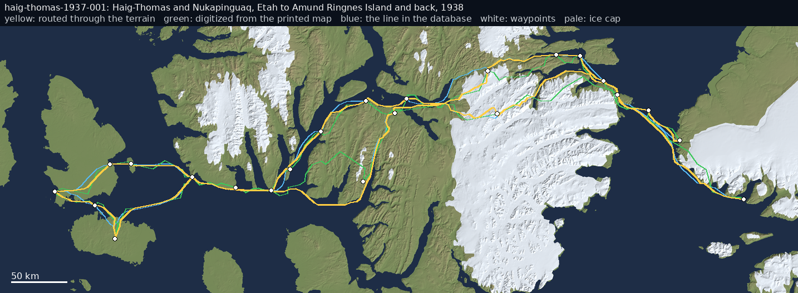
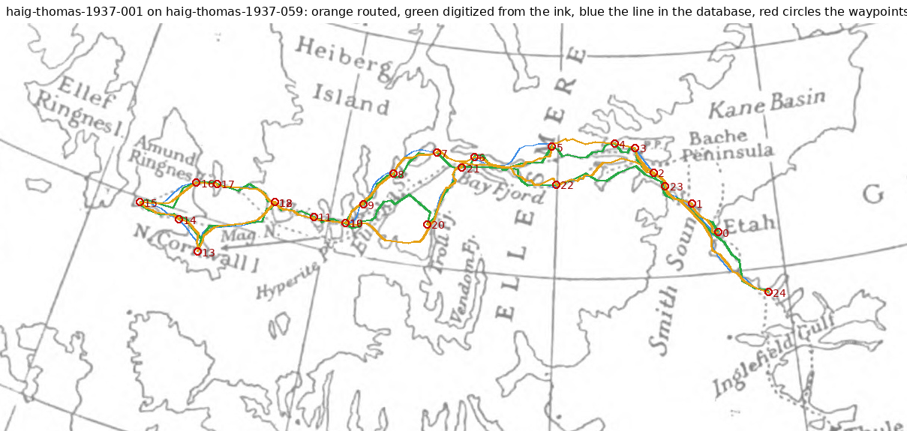
1,050 km routed against 883 km straight, 58 km over land, 48 km over ice cap, highest 492 m; the line in the database is 883 km and 39 points; this one 120 points; waypoints on land whose note names water: 6, 19; it runs 7.0 km from the line in the database on average and 42 km at most
| # | lat | lon | ground | m | km from ink | flags | note |
|---|---|---|---|---|---|---|---|
| 0 | 76.550 | -68.830 | sea | 0 | - | Wright and Hamilton leave Thule with light loads and both teams combined | |
| 1 | 77.733 | -70.733 | sea | 0 | - | held up at Robertson Bay by weather and the difficulty of getting an Inughuit gu | |
| 2 | 78.314 | -72.610 | land | 33 | - | leave Etah with Haig-Thomas and Nukapinguaq | |
| 3 | 78.600 | -73.600 | sea | 0 | - | part company in mid Smith Sound about three days out; Haig-Thomas turns west for | |
| 4 | 78.717 | -74.117 | sea | 0 | - | Cape Sabine | |
| 5 | 78.770 | -74.720 | land | 110 | - | Fram Havn, tried as an advance base and found disappointing: a broken-walled she | |
| 6 | 78.770 | -74.720 | land | 110 | - | contradicted | second crossing of Smith Sound completed and the loaded journey begins: two sled |
| 7 | 77.950 | -75.883 | sea | 0 | - | Cape Dunsterville: the survey begins; Bryant's 1894 cairn record found | |
| 8 | 77.867 | -76.767 | sea | 0 | - | Cape Faraday | |
| 9 | 77.917 | -77.667 | sea | 0 | - | Talbot Inlet, deep snow; stations occupied over the ice cap at its head | |
| 10 | 77.600 | -77.683 | sea | 0 | - | Cape Mouat | |
| 11 | 77.433 | -78.300 | ice cap | 164 | - | Eskimo Bluff, the one break in an almost continuous ice cliff | |
| 12 | 77.308 | -78.833 | land | 3 | - | Boger Point, the southern limit: a station 729 m above the point, and an Inughui | |
| 13 | 77.867 | -76.367 | sea | 0 | - | Orne Island again: old igloos with roof frames of whale scapulae shown to them b | |
| 14 | 78.200 | -76.167 | sea | 0 | - | Cadogan Inlet, travelled over the Lyman glacier as the sea ice changed | |
| 15 | 78.533 | -74.950 | sea | 0 | - | Wade Point: coast survey finished with ten days' food in hand | |
| 16 | 78.578 | -75.000 | ice cap | 198 | - | up the Alfred Newton Glacier on to the inland ice | |
| 17 | 78.470 | -77.500 | ice cap | 492 | - | inferred | three days west over the ice cap about four miles from the north side of Baird I |
| 18 | 78.467 | -75.833 | sea | 0 | - | Baird Inlet: a small triangulation with four stations also fixed astronomically | |
| 19 | 78.770 | -74.720 | land | 110 | - | contradicted | back at Fram Havn, the Smith Sound route now plainly marked by four parties' tra |
| 20 | 78.314 | -72.610 | land | 33 | - | Etah, end of May 1938 |

1,005 km routed against 929 km straight, 140 km over land, 50 km over ice cap, highest 506 m; the line in the database is 929 km and 43 points; this one 76 points; it runs 5.1 km from the line in the database on average and 16 km at most
| # | lat | lon | ground | m | km from ink | flags | note |
|---|---|---|---|---|---|---|---|
| 0 | 78.619 | -70.667 | land | 75 | - | the Advance abandoned; boats and sledges start south | |
| 1 | 78.733 | -72.500 | sea | 0 | - | the sick lying in the hut at Anoatok | |
| 2 | 78.500 | -72.600 | sea | 0 | - | the boat-camp; provisions stowed for the open water | |
| 3 | 78.350 | -72.800 | land | 35 | - | Christian Ohlsen dies and is buried on the east face of Pekiutlik | |
| 4 | 78.200 | -73.000 | sea | 0 | - | the boats reach open water at the southern sweep of Etah Bay, three miles from C | |
| 5 | 77.430 | -72.750 | sea | 0 | - | Hakluyt and Northumberland Islands | |
| 6 | 76.370 | -69.530 | land | 252 | - | Dalrymple Rock and Wolstenholme Island | |
| 7 | 76.200 | -68.300 | ice cap | 397 | - | Providence Halt under the Crimson Cliffs of Cape Dudley Digges: 200 lb of dried | |
| 8 | 75.920 | -66.500 | ice cap | 372 | - | Cape York; a beacon-cairn built and a record left; they prepare to cross Melvill | |
| 9 | 75.200 | -62.000 | sea | 0 | - | leave the land-ice for the open drift, southward and westward | |
| 10 | 74.580 | -57.350 | sea | 0 | - | the Devil's Thumb sighted; among the whalers' ground again | |
| 11 | 74.200 | -57.000 | sea | 0 | - | the north Greenland coast near Horse's Head | |
| 12 | 72.787 | -56.155 | sea | 0 | - | Upernavik, eighty-three days after leaving the Advance |

1,476 km routed against 1,262 km straight, 157 km over land, 7 km over ice cap, highest 406 m; the line in the database is 1,262 km and 57 points; this one 156 points; waypoints on land whose note names water: 0, 3; it runs 6.9 km from the line in the database on average and 42 km at most
| # | lat | lon | ground | m | km from ink | flags | note |
|---|---|---|---|---|---|---|---|
| 0 | 78.320 | -72.630 | land | 220 | - | inferred, contradicted | Etah district: Krüger, Bjare and Akqioq set out across Smith Sound in early Marc |
| 1 | 79.000 | -76.000 | sea | 15 | - | Bache Peninsula RCMP post: licences inspected by Constable McLean, dogs in poor | |
| 2 | 79.000 | -76.000 | sea | 15 | - | leaves Bache Peninsula westward, sledges heavily laden. Known | |
| 3 | 79.170 | -78.500 | land | 402 | - | inferred, contradicted | up Flagler Fiord and over the divide to Bay Fiord: the standard route, and the o |
| 4 | 78.920 | -83.500 | sea | 0 | - | inferred | Bay Fiord, on the way out to Eureka Sound. Inferred |
| 5 | 79.617 | -85.750 | land | 406 | - | Depot Point, Eureka Sound: the support sledges turn back with five boxes of rock | |
| 6 | 79.583 | -87.250 | sea | 0 | - | inferred | 'Cape Mokka': specimen label 15_. No such landform exists; inferred as the headl |
| 7 | 80.250 | -88.000 | land | 343 | - | Schei Peninsula: specimen label 160. Known from the label | |
| 8 | 80.500 | -89.000 | sea | 0 | - | inferred | west side of Schei Peninsula: undated label 'West Schei'. Position and date infe |
| 9 | 81.033 | -87.000 | sea | 0 | - | inferred | south side of Otto Fiord, Ellesmere Island, and a place Krüger called 'Kap Bjare |
| 10 | 81.700 | -91.400 | ice cap | 234 | - | Peary's 1906 cairn near Cape Colgate: the first surviving note, and at least ten | |
| 11 | 81.367 | -94.117 | sea | 0 | - | Cape Thomas Hubbard: the second note, in Peary's cairn, with copies of Peary's a | |
| 12 | 81.383 | -93.500 | sea | 0 | - | northern tip of Axel Heiberg Island (now Cape Stallworthy): three specimens labe | |
| 13 | 80.350 | -96.600 | land | 57 | - | inferred | 'Heiberg West km 116', slaty limestone: 116 km south-west of Cape Thomas Hubbard |
| 14 | 80.183 | -99.250 | land | 5 | - | Perley Island, north of Meighen Island: specimen label 209. Known from the label | |
| 15 | 79.900 | -100.150 | sea | 0 | - | Andersen Point, Meighen Island: Stefansson's 1916 cairn opened, his message too | |
| 16 | 79.900 | -100.150 | sea | 0 | - | the last note left here: 'We are proceeding on to Cape Sverre on Amund Ringnes I | |
| 17 | 79.500 | -99.000 | sea | 0 | - | inferred | south from Andersen Point towards Departure Point and Amund Ringnes. Wholly infe |
| 18 | 79.500 | -94.600 | land | 194 | - | inferred | back on the west coast of Axel Heiberg Island, somewhere between Middle Fiord an |
| 19 | 78.983 | -94.333 | sea | 0 | - | Cape Levvel: two labels of this date, the last firmly dated evidence of the expe | |
| 20 | 78.767 | -93.833 | sea | 0 | - | inferred | Skrugar Point: label 221, date lost. Inferred at one to two days from Cape Levve |
| 21 | 78.210 | -91.550 | land | 50 | - | site SbJk-1, about 10 km east of Cape Southwest: the cache of instruments, cloth |

1,079 km routed against 857 km straight, 66 km over land, 0 km over ice cap, highest 563 m; the line in the database is 857 km and 40 points; this one 80 points; waypoints on land whose note names water: 5; it runs 12.3 km from the line in the database on average and 58 km at most
| # | lat | lon | ground | m | km from ink | flags | note |
|---|---|---|---|---|---|---|---|
| 0 | 79.000 | -76.000 | sea | 15 | - | leaves Bache Peninsula with Nukapinguaq and Inuetuk, two teams of twelve dogs | |
| 1 | 79.170 | -78.500 | land | 402 | - | head of Flagler Fiord: the land almost bare of snow, days of slow travel over ro | |
| 2 | 79.200 | -79.500 | land | 563 | - | several routes onto the Flagler Glacier and the pass reconnoitred and abandoned; | |
| 3 | 78.720 | -74.720 | sea | 13 | - | back through Rice Strait, heading south down the east coast of Ellesmere Island | |
| 4 | 76.783 | -77.783 | sea | 0 | - | Clarence Head: better going from here south | |
| 5 | 76.207 | -81.000 | land | 5 | - | contradicted | Craig Harbour: nobody had been there since Corporal McLean's visit a year before |
| 6 | 77.310 | -78.830 | land | 99 | - | starting back north; Stallworthy falls 9 m into a crevasse near Boger Point and | |
| 7 | 79.000 | -76.000 | sea | 15 | - | back at Bache Peninsula. No trace of the Krüger expedition found |

1,617 km routed against 1,367 km straight, 195 km over land, 3 km over ice cap, highest 433 m; the line in the database is 1,367 km and 62 points; this one 168 points; it runs 8.1 km from the line in the database on average and 35 km at most
| # | lat | lon | ground | m | km from ink | flags | note |
|---|---|---|---|---|---|---|---|
| 0 | 79.000 | -76.000 | sea | 15 | - | the whole convoy leaves Bache Peninsula: eight teams, 124 dogs, 60 days' rations | |
| 1 | 79.170 | -78.500 | land | 402 | - | head of Flagler Fiord, then west up the valley on river ice and over the divide | |
| 2 | 79.100 | -80.500 | ice cap | 433 | - | an advancing glacier now blocks the old route through the pass: loads packed 800 | |
| 3 | 78.920 | -83.500 | sea | 0 | - | Bay Fiord: the party splits. Stallworthy takes the north shore with Eetookashoo, | |
| 4 | 79.267 | -84.917 | land | 24 | - | May Point, Eureka Sound: herds of eleven and then nineteen muskoxen, all spared | |
| 5 | 79.617 | -85.750 | land | 406 | - | camp at Depot Point, where Krüger's support sledges had turned back two years be | |
| 6 | 79.583 | -87.250 | sea | 0 | - | the next three points west checked as far as the mouth of Mokka Fiord; a small c | |
| 7 | 80.083 | -87.300 | land | 0 | - | south of Skraeling Point: canned dog food down to three feeds, hunting parties r | |
| 8 | 80.500 | -88.500 | sea | 0 | - | across the isthmus of Schei Peninsula, which Sverdrup had thought an island; a s | |
| 9 | 81.033 | -87.000 | sea | 0 | - | forced right over to the mouth of Otto Fiord to avoid rough ice in Nansen Sound | |
| 10 | 81.383 | -93.500 | sea | 0 | - | the northern tip of Axel Heiberg Island, now Cape Stallworthy: a mile of beach s | |
| 11 | 81.367 | -94.117 | sea | 0 | - | Cape Thomas Hubbard: Peary's cairn spotted only on looking back from further wes | |
| 12 | 81.167 | -93.667 | sea | 0 | - | south across the mouth of Rens Fjord, 65 km in a day on good ice | |
| 13 | 80.350 | -96.600 | land | 57 | - | Cape Northwest: heavy pressure ice drives the sledges onto the ice-foot and inla | |
| 14 | 78.450 | -92.600 | land | 112 | - | 25 km short of Cape Southwest after an almost continuous 43-hour march; the last | |
| 15 | 78.200 | -92.033 | sea | 0 | - | Cape Southwest: Hamilton's note and the depot. Four days' rest and feeding | |
| 16 | 78.200 | -92.033 | sea | 0 | - | MacMillan's 1916 cairn found with messages from MacMillan and from Joy in 1927 a | |
| 17 | 78.300 | -90.500 | sea | 0 | - | towards Cape Sherwood: seven caribou killed after a careful stalk, all thin and | |
| 18 | 78.150 | -88.883 | land | 49 | - | round Hyperite Point; camp on the east side of Ulvingen Island. Five more dogs k | |
| 19 | 78.333 | -88.200 | land | 375 | - | Kahdi shoots a 140 kg seal with blubber more than 6 cm thick, and the crisis pas | |
| 20 | 78.900 | -86.000 | sea | 0 | - | leaves Ulvingen Island north up Eureka Sound and east into Bay Fiord | |
| 21 | 78.920 | -82.000 | sea | 0 | - | head of Bay Fiord: almost no snow, sledging through mud and 25 cm of water, then | |
| 22 | 79.000 | -76.000 | sea | 15 | - | Bache Peninsula, stopped by a polynya 1.6 km short and the last lap walked. 65 d |

1,316 km routed against 1,080 km straight, 225 km over land, 31 km over ice cap, highest 473 m; the line in the database is 1,080 km and 46 points; this one 148 points; it runs 7.1 km from the line in the database on average and 34 km at most
| # | lat | lon | ground | m | km from ink | flags | note |
|---|---|---|---|---|---|---|---|
| 0 | 78.920 | -83.500 | sea | 0 | - | parts from Stallworthy near the head of Bay Fiord about noon and takes the south | |
| 1 | 78.983 | -85.833 | land | 139 | - | Stor Island | |
| 2 | 78.500 | -86.000 | land | 200 | - | Raanes Peninsula: a depot of pemmican cached for the support drivers' return | |
| 3 | 78.333 | -88.200 | land | 375 | - | Ulvingen Island; a small bear killed and fed to the dogs | |
| 4 | 78.150 | -88.883 | land | 49 | - | Hyperite Point: signs of caribou and muskoxen, one small caribou killed, no sign | |
| 5 | 78.200 | -92.033 | sea | 0 | - | Cape Southwest: the cape and its old cairns searched, nothing found; two small b | |
| 6 | 78.000 | -93.500 | sea | 0 | - | south-west towards Cornwall Island through rough ice, deep snow and fog; the las | |
| 7 | 77.617 | -94.633 | land | 90 | - | Cornwall Island: one sledge, most of the provisions and the weakest dogs left be | |
| 8 | 77.900 | -94.700 | sea | 0 | - | northern point of Cornwall Island: Joy's cairns found, no sign of Krüger. Hamilt | |
| 9 | 78.200 | -92.033 | sea | 0 | - | back at Cape Southwest; four of the dogs left on Cornwall Island had died and fi | |
| 10 | 78.366 | -89.483 | sea | 0 | - | Glacier Fiord: three muskoxen shot out of a herd of eighteen | |
| 11 | 77.852 | -88.208 | land | 1 | - | Goose Point, the north-west tip of Bjorne Peninsula: coastline and headland sear | |
| 12 | 77.666 | -85.583 | sea | 0 | - | Baumann Fiord in deep snow; five more dogs dead of starvation, and four muskoxen | |
| 13 | 77.533 | -85.150 | land | 99 | - | Hoved Island, after a two-day blizzard that nearly broke the snow house. A charg | |
| 14 | 77.400 | -83.000 | land | 197 | - | the overland crossing from the head of Stenkul Fiord to Makinson Inlet, three da | |
| 15 | 77.500 | -79.000 | ice cap | 473 | - | head of Makinson Inlet; two days' rest, sledges and harness repaired | |
| 16 | 77.200 | -78.500 | sea | 0 | - | across Talbot Inlet through very rough ice with open water offshore; stopped at | |
| 17 | 78.300 | -74.900 | sea | 0 | - | Cape Isabella: open water again drives them over another glacier, lined down a p | |
| 18 | 78.770 | -74.720 | land | 110 | - | the cache at Fram Havn: food for the men and old bacon for the dogs | |
| 19 | 79.000 | -76.000 | sea | 15 | - | Bache Peninsula. 49 days, about 1510 km, 17 dogs lost, seven muskoxen shot |

278 km routed against 208 km straight, 65 km over land, 5 km over ice cap, highest 658 m; the line in the database is 208 km and 10 points; this one 40 points; waypoints on land whose note names water: 1, 5; it runs 7.8 km from the line in the database on average and 21 km at most
| # | lat | lon | ground | m | km from ink | flags | note |
|---|---|---|---|---|---|---|---|
| 0 | 74.533 | -82.383 | land | 50 | - | leaves Dundas Harbour with Kellekte and Keepoomee, two sledges and 31 dogs; Keep | |
| 1 | 74.600 | -83.500 | land | 15 | - | contradicted | across the mouth of Croker Bay, west towards Cuming Inlet, with long detours rou |
| 2 | 74.700 | -85.500 | land | 172 | - | about 200 km west of the post: steep hard-packed drifts running from the cliffs | |
| 3 | 74.750 | -85.800 | land | 401 | - | a 400 m snow slope with impassable brash below; Dersch cuts steps to the top and | |
| 4 | 74.720 | -85.300 | ice cap | 657 | - | an inlet followed 15 km to its head looking for a break in the cliffs; none foun | |
| 5 | 74.533 | -82.383 | land | 50 | - | contradicted | back at Dundas Harbour |

729 km routed against 583 km straight, 260 km over land, 0 km over ice cap, highest 380 m; the line in the database is 583 km and 27 points; this one 87 points; waypoints on land whose note names water: 9; it runs 9.1 km from the line in the database on average and 25 km at most
| # | lat | lon | ground | m | km from ink | flags | note |
|---|---|---|---|---|---|---|---|
| 0 | 74.940 | -108.809 | sea | 0 | - | 8.30 a.m., left the Resolute off Dealy Island with the sledge John Barrow | |
| 1 | 74.900 | -109.800 | land | 162 | - | inferred | Mr Roche comes up with a new sledge (position inferred, on the Melville Island s |
| 2 | 74.850 | -110.600 | land | 15 | - | inferred | parts company with Hamilton's party (position inferred) |
| 3 | 74.730 | -113.450 | land | 199 | - | Cape Providence in sight ahead; Domville is sent on with the John Barrow | |
| 4 | 74.500 | -114.200 | sea | 0 | - | inferred | 8 a.m., begins crossing Viscount Melville Sound (position inferred) |
| 5 | 74.400 | -115.000 | sea | 0 | - | inferred | hummocks after hummocks in endless succession; the men could scarcely stand on t |
| 6 | 74.280 | -116.100 | sea | 0 | - | inferred | the strait plainly visible; Pim presses on ahead of Domville to reach the Bay of |
| 7 | 74.150 | -117.400 | land | 337 | - | inferred | leaves a record at the depot (position inferred) |
| 8 | 74.130 | -117.700 | land | 305 | - | reaches the western extremity of the high land; the Harbour of Mercy is in sight | |
| 9 | 74.100 | -117.900 | land | 348 | - | contradicted | crosses the Bay of Mercy and at 5 p.m. is within a hundred yards of HMS Investig |
| 10 | 74.400 | -114.600 | sea | 0 | - | inferred | rejoins Domville and his party, all well; five musk-oxen (position inferred) |
| 11 | 74.730 | -113.450 | land | 199 | - | takes bacon from the depot at Cape Providence | |
| 12 | 74.940 | -108.809 | sea | 0 | - | determined to reach the ship today; aboard the Resolute at 6 p.m. |

637 km routed against 571 km straight, 99 km over land, 0 km over ice cap, highest 380 m; the line in the database is 571 km and 30 points; this one 38 points; waypoints on land whose note names water: 0, 5; it runs 14.3 km from the line in the database on average and 32 km at most
| # | lat | lon | ground | m | km from ink | flags | note |
|---|---|---|---|---|---|---|---|
| 0 | 74.117 | -117.900 | land | 306 | - | contradicted | McClure leaves the Bay of Mercy to see Kellett in person rather than answer his |
| 1 | 74.350 | -114.000 | sea | 0 | - | inferred | crossing Viscount Melville Sound eastward (position inferred) |
| 2 | 74.850 | -109.600 | sea | 0 | - | under Cape Bounty, where he overtook Dr Domville coming back from double-trippin | |
| 3 | 74.940 | -108.809 | sea | 0 | - | reaches HMS Resolute; Kellett and both ships' companies came out over the floe t | |
| 4 | 74.940 | -108.809 | sea | 0 | - | leaves the Resolute in the evening with Domville and a sledge, carrying Kellett' | |
| 5 | 74.117 | -117.900 | land | 306 | - | contradicted | back in the Bay of Mercy; the letter is read to the crew next morning, and only |

325 km routed against 288 km straight, 165 km over land, 0 km over ice cap, highest 380 m; the line in the database is 288 km and 14 points; this one 34 points; it runs 6.4 km from the line in the database on average and 24 km at most
| # | lat | lon | ground | m | km from ink | flags | note |
|---|---|---|---|---|---|---|---|
| 0 | 74.117 | -117.900 | land | 306 | - | HMS Investigator abandoned in the Bay of Mercy; 61 officers and men set out on f | |
| 1 | 74.300 | -115.000 | sea | 0 | - | inferred | crossing Viscount Melville Sound over rotting ice (position inferred) |
| 2 | 74.530 | -113.900 | land | 246 | - | inferred | Cape Dundas, the south-west point of Melville Island (position inferred from the |
| 3 | 74.750 | -112.000 | land | 186 | - | inferred | along the south coast of Melville Island past Cape Providence (position inferred |
| 4 | 74.940 | -108.809 | sea | 0 | - | the whole party reaches the Resolute and Intrepid off Dealy Island; the united c |

1,369 km routed against 1,149 km straight, 401 km over land, 0 km over ice cap, highest 235 m; the line in the database is 1,149 km and 46 points; this one 141 points; it runs 3.8 km from the line in the database on average and 31 km at most
| # | lat | lon | ground | m | km from ink | flags | note |
|---|---|---|---|---|---|---|---|
| 0 | 74.950 | -108.733 | sea | 0 | - | left the ships at Dealy Island at 7.10 a.m. | |
| 1 | 75.200 | -109.300 | land | 138 | - | inferred | hauling north over Melville Island by Crooked Ravine and Separation Ravine (posi |
| 2 | 75.350 | -109.700 | land | 184 | - | inferred | pinned down on the stony plain by a northerly gale, -21 to -25 F (position infer |
| 3 | 75.584 | -110.436 | sea | 0 | - | Point Nias, then west along the coast | |
| 4 | 75.900 | -111.100 | sea | 0 | - | inferred | under sail across Hecla and Griper Bay for Cape Fisher (position inferred) |
| 5 | 75.864 | -111.835 | land | 67 | - | observed 75 51 52 N, 111 50 06 W near Cape Fisher | |
| 6 | 76.184 | -112.369 | sea | 0 | - | Hillock Point and Long Point | |
| 7 | 76.284 | -113.003 | sea | 0 | - | rounding Grassy Cape | |
| 8 | 76.329 | -114.319 | land | 19 | - | Depot Island, observed 76 19 46 N, 114 19 08 W; five days' provisions buried on | |
| 9 | 76.517 | -114.686 | sea | 0 | - | Cape Scott | |
| 10 | 76.467 | -115.503 | sea | 0 | - | passed the extreme of Sandy Point; footprints seen; Cape De Bray named | |
| 11 | 76.117 | -116.620 | sea | 0 | - | Cape De Bray, the north-west extreme of Melville Island; Terrace Cape and Ibbett | |
| 12 | 75.584 | -116.003 | sea | 0 | - | named Purchase Bay after Thomas Purchase, senior engineer of the Intrepid | |
| 13 | 75.834 | -115.753 | land | 23 | - | encamped on the south-west side of Ibbett Bay | |
| 14 | 76.117 | -116.620 | sea | 0 | - | back at the Cape De Bray depot; started across the strait for Point Wilkie | |
| 15 | 76.251 | -117.303 | sea | 0 | - | reached Point Wilkie on Prince Patrick Island and began searching Intrepid Inlet | |
| 16 | 76.634 | -118.087 | sea | 0 | - | up Intrepid Inlet, past the Saddle Hills and Double Streak Head | |
| 17 | 76.501 | -118.753 | sea | 0 | - | Green's Bay, named after George Green, ice quartermaster | |
| 18 | 76.117 | -116.620 | sea | 0 | - | back at the De Bray depot on the Melville Island shore | |
| 19 | 76.300 | -117.500 | land | 8 | - | inferred | named a flat-topped mount The Redoubt, inland of Point Wilkie (position inferred |
| 20 | 77.050 | -117.800 | land | 70 | - | inferred | reached the right extreme of an island off Prince Patrick's Land; Prince Patrick |
| 21 | 77.250 | -117.500 | land | 43 | - | inferred | among low gravel and sand islets, the Polynia Islands (position inferred) |
| 22 | 77.384 | -117.303 | sea | 0 | - | crossed overland into Satellite Bay, left a cairn and record, and turned for hom | |
| 23 | 76.900 | -115.500 | sea | 0 | - | inferred | crossing the strait, Melville Island in sight (position inferred) |
| 24 | 76.801 | -114.170 | land | 28 | - | Emerald Isle | |
| 25 | 76.334 | -114.036 | land | 9 | - | Depot Island; mossy slopes, temperature up to +51 F | |
| 26 | 76.284 | -113.003 | sea | 0 | - | Grassy Cape; found a record left on 8 May | |
| 27 | 75.867 | -111.753 | land | 54 | - | Middle Island and Middle Point, named, and across to Cape Fisher | |
| 28 | 75.851 | -111.402 | sea | 0 | - | Cape Fisher | |
| 29 | 75.584 | -110.436 | sea | 0 | - | encamped on Point Nias; found Sir Edward Parry's record of 1820 | |
| 30 | 75.200 | -109.300 | land | 138 | - | inferred | waded a rapid river in Separation Ravine (position inferred) |
| 31 | 75.033 | -108.750 | sea | 0 | - | north shore of Bridport Inlet and aboard at noon - 105 days out |

1,459 km routed against 1,277 km straight, 273 km over land, 0 km over ice cap, highest 227 m; the line in the database is 1,277 km and 57 points; this one 145 points; it runs 4.5 km from the line in the database on average and 34 km at most
| # | lat | lon | ground | m | km from ink | flags | note |
|---|---|---|---|---|---|---|---|
| 0 | 74.950 | -108.733 | sea | 0 | - | left the ships at Dealy Island at 7.15 a.m., steering for Cape Bounty | |
| 1 | 74.867 | -109.533 | land | 48 | - | passed Cape Bounty; musk oxen above Point Halse; encamped near Point Wakeham | |
| 2 | 74.805 | -110.452 | land | 20 | - | across Point Wakeham; the depot cairn at Fife Harbour observed | |
| 3 | 74.767 | -110.836 | land | 68 | - | the Winter Harbour depot; provisions divided, completing each sledge to 45 days | |
| 4 | 75.167 | -112.586 | sea | 0 | - | north-west for the west point of Barry Bay, Hooper's Island and Cape Edwards in | |
| 5 | 75.101 | -113.019 | land | 227 | - | between the headland and Cape Beechey, four miles across | |
| 6 | 75.067 | -113.919 | land | 93 | - | Cape Hoare; old and hillocky floe along the coast | |
| 7 | 74.967 | -115.669 | sea | 0 | - | Cape Smyth | |
| 8 | 75.167 | -116.470 | sea | 0 | - | Warrington Bay; 13 miles made good W.N.W. under a range of high cliffs | |
| 9 | 75.251 | -117.670 | sea | 1 | - | Cape Russell, the south-west extreme of Melville Island; new land sighted to the | |
| 10 | 75.600 | -118.300 | land | 29 | - | inferred | off the new land: Castle Point, Table Hill, Point Humphries named (position infe |
| 11 | 75.800 | -118.503 | land | 86 | - | landed on the new land, which proved to be Eglinton Island | |
| 12 | 75.617 | -119.420 | sea | 0 | - | Cape Nares and Martello Head; 12 miles made good west | |
| 13 | 76.001 | -120.787 | sea | 0 | - | Walker Inlet, on Prince Patrick's Land | |
| 14 | 75.867 | -122.330 | land | 3 | - | Cape Manning; gale from S.E., force 8 to 10, with heavy drift | |
| 15 | 77.000 | -121.750 | sea | 0 | - | the printed observation Lat. 77 00 00 N, Long. 121 5 4o W (read as 121 45 W); th | |
| 16 | 76.900 | -121.900 | sea | 0 | - | inferred | at the main pack edge: 'the pack here is much heavier than any yet seen' (positi |
| 17 | 75.951 | -121.087 | sea | 0 | - | Wolley Bay; a large tree found buried eight feet out of the east bank of a ravin | |
| 18 | 76.284 | -118.620 | sea | 0 | - | Point Disappointment, off Eglinton Island | |
| 19 | 75.734 | -121.070 | land | 58 | - | Cape Mecham (position from the modern chart; the journal names Spotted Point and | |
| 20 | 75.317 | -117.553 | sea | 0 | - | the south-west point of Melville Island, where the men called the camp Comfort C | |
| 21 | 75.167 | -112.586 | sea | 0 | - | struck out across Barry Bay | |
| 22 | 74.805 | -110.452 | land | 20 | - | followed last autumn's track in search of the Fife Harbour depot | |
| 23 | 74.950 | -108.733 | sea | 0 | - | reached the ships at Dealy Island - journey's end |

626 km routed against 550 km straight, 89 km over land, 0 km over ice cap, highest 215 m; the line in the database is 550 km and 26 points; this one 54 points; it runs 15.3 km from the line in the database on average and 56 km at most
| # | lat | lon | ground | m | km from ink | flags | note |
|---|---|---|---|---|---|---|---|
| 0 | 74.940 | -108.809 | sea | 0 | - | Hamilton leaves at 1.30 p.m. with the sledge Hope and seven men, M'Dougall's sle | |
| 1 | 75.850 | -110.200 | sea | 0 | - | inferred | near Parry's Cape Mudge, a hill rising abruptly from a low plain (position infer |
| 2 | 76.200 | -110.400 | sea | 0 | - | inferred | names Eldridge Bay and a point after Captain Chads (position inferred) |
| 3 | 76.492 | -110.467 | sea | 0 | - | observed latitude 76 deg 29 min 32 sec N, longitude 110 deg 28 min W | |
| 4 | 76.578 | -110.300 | sea | 0 | - | observed latitude 76 deg 34 min 39 sec N; no longitude recorded that day | |
| 5 | 76.600 | -107.000 | sea | 0 | - | inferred | Commander Richards and three men walk up to the tent after supper, having crosse |
| 6 | 76.550 | -105.000 | sea | 0 | - | the rendezvous with Belcher's division; Richards gave it as 76 deg 33 min N, 105 | |
| 7 | 76.400 | -104.500 | sea | 0 | - | inferred | passes Commander Richards's depot at 3 a.m. (position inferred) |
| 8 | 74.940 | -108.809 | sea | 0 | - | last entry of the printed journal; back at the Resolute after 54 days |

217 km routed against 206 km straight, 0 km over land, 0 km over ice cap, highest 0 m; the line in the database is 206 km and 11 points; this one 18 points; it runs 2.6 km from the line in the database on average and 9 km at most
| # | lat | lon | ground | m | km from ink | flags | note |
|---|---|---|---|---|---|---|---|
| 0 | 74.983 | -105.633 | sea | 0 | - | Resolute slips from the fast ice off Point Griffiths at 3.50 p.m. - under sail f | |
| 1 | 74.678 | -105.888 | sea | 0 | - | drift S 12.5 W, 23.5 miles in the first two days | |
| 2 | 75.071 | -102.550 | sea | 0 | - | northernmost point of the winter drift | |
| 3 | 74.688 | -101.287 | sea | 0 | - | the ships become permanently fixed for the winter | |
| 4 | 74.698 | -101.183 | sea | 0 | - | last entry of the drift table: total drift in the pack 180 miles | |
| 5 | 74.683 | -101.367 | sea | 0 | - | Resolute and Intrepid abandoned at 7 p.m., 28 miles SW by S of Cape Cockburn |

330 km routed against 304 km straight, 25 km over land, 0 km over ice cap, highest 212 m; the line in the database is 304 km and 16 points; this one 26 points; it runs 8.6 km from the line in the database on average and 31 km at most
| # | lat | lon | ground | m | km from ink | flags | note |
|---|---|---|---|---|---|---|---|
| 0 | 74.683 | -101.367 | sea | 0 | - | Kellett, M'Clintock, Roche and M'Dougall leave the Resolute at 7 p.m. with the l | |
| 1 | 75.033 | -100.367 | land | 0 | - | the depot near Cape Cockburn, Bathurst Island | |
| 2 | 74.720 | -94.980 | land | 66 | - | Cape Martyr and Resolute Bay, Cornwallis Island | |
| 3 | 74.670 | -94.550 | land | 200 | - | the depot at Assistance Harbour | |
| 4 | 74.610 | -93.850 | sea | 0 | - | Cape Hotham and Rugged Bluff | |
| 5 | 74.714 | -91.847 | land | 110 | - | aboard the North Star at Beechey Island at 7 p.m., 42 souls, sledge loads averag |

254 km routed against 227 km straight, 152 km over land, 0 km over ice cap, highest 380 m; the line in the database is 227 km and 11 points; this one 19 points; waypoints on land whose note names water: 0; it runs 7.0 km from the line in the database on average and 25 km at most
| # | lat | lon | ground | m | km from ink | flags | note |
|---|---|---|---|---|---|---|---|
| 0 | 74.117 | -117.900 | land | 306 | - | contradicted | McClure and six men leave the Investigator in the Bay of Mercy with one sledge |
| 1 | 74.350 | -114.500 | sea | 0 | - | inferred | crossing Viscount Melville Sound over rough pack; the temperature relapsed after |
| 2 | 74.550 | -113.500 | land | 237 | - | inferred | the south-west coast of Melville Island near Cape Dundas (position inferred) |
| 3 | 74.783 | -110.800 | land | 65 | - | Winter Harbour at an early hour: no ship, no depot, only McClintock's notice of |

4 of 5 legs follow ink digitized from nares-greely-171 (georef rms 0.5 km); the routed line runs 0.6 km from the printed one on average; 237 km routed against 213 km straight, 0 km over land, 0 km over ice cap, highest 0 m; the line in the database is 213 km and 10 points; this one 28 points; proposed moves, not applied: 1 (inferred; moved 6 km onto the printed route); 2 (inferred; moved 9 km onto the printed route); 3 (inferred; moved 10 km onto the printed route); 4 (inferred; moved 12 km onto the printed route); it runs 2.5 km from the line in the database on average and 8 km at most
| # | lat | lon | ground | m | km from ink | flags | note |
|---|---|---|---|---|---|---|---|
| 0 | 82.450 | -61.420 | sea | 0 | 3 | fifteen men leave the Alert at Floeberg Beach with two boats and two sledges | |
| 1 | 82.820 | -63.500 | sea | 0 | 6 | inferred; proposed 82.812 -63.105 | Cape Joseph Henry: the party leaves the land for the polar pack; date approximat |
| 2 | 83.341 | -63.800 | sea | 0 | 9 | inferred; proposed 83.294 -63.189 | farthest north, 83 deg 20 min 26 sec N, proclaimed at noon; longitude approximat |
| 3 | 82.750 | -62.500 | sea | 0 | 10 | inferred; proposed 82.774 -63.158 | eleven of fifteen men down with scurvy; Parr sets out alone for the ship; positi |
| 4 | 82.720 | -62.400 | sea | 0 | 12 | inferred; proposed 82.750 -63.214 | George Porter dies on the floe; position approximate |
| 5 | 82.450 | -61.420 | sea | 0 | 3 | inferred | the survivors are brought back to the Alert; date approximate |


897 km routed against 790 km straight, 49 km over land, 0 km over ice cap, highest 823 m; the line in the database is 790 km and 38 points; this one 90 points; it runs 6.3 km from the line in the database on average and 38 km at most
| # | lat | lon | ground | m | km from ink | flags | note |
|---|---|---|---|---|---|---|---|
| 0 | 81.733 | -64.750 | land | 143 | - | the supporting sledges leave Fort Conger; Lockwood follows that evening | |
| 1 | 81.750 | -61.300 | land | 359 | - | inferred | Polaris Boat Camp on the Greenland shore of Hall Basin; date approximate |
| 2 | 82.330 | -55.500 | sea | 0 | - | the main party reaches Cape Bryant at 8 p.m. | |
| 3 | 82.900 | -46.500 | land | 739 | - | inferred | Cape Britannia; date and position approximate |
| 4 | 83.397 | -40.770 | sea | 0 | - | farthest camp at the north end of Lockwood Island, 83 deg 23.8 min N by circum-m | |
| 5 | 81.733 | -64.750 | land | 143 | - | inferred | back at Fort Conger; date approximate |

514 km routed against 416 km straight, 130 km over land, 0 km over ice cap, highest 965 m; the line in the database is 416 km and 23 points; this one 71 points; it runs 6.5 km from the line in the database on average and 25 km at most
| # | lat | lon | ground | m | km from ink | flags | note |
|---|---|---|---|---|---|---|---|
| 0 | 81.733 | -64.750 | land | 143 | - | Fort Conger formally abandoned at 1 p.m.; the party leaves at 2 p.m. in the laun | |
| 1 | 80.733 | -67.500 | sea | 0 | - | ice-bound in Kennedy Channel in latitude 80 deg 44 min N; longitude estimated | |
| 2 | 79.750 | -73.750 | ice cap | 867 | - | latitude 79 deg 45 min N, just north of Cape Frazer | |
| 3 | 79.383 | -74.650 | land | 101 | - | Cape Hawks reached at 2.15 p.m.; the party leaves again at 4.25 p.m. | |
| 4 | 79.367 | -75.000 | sea | 0 | - | beset in latitude 79 deg 22 min N, longitude 75 W; the drift on the floes begins | |
| 5 | 79.317 | -74.900 | sea | 0 | - | latitude 79 deg 19 min N by observation; longitude estimated | |
| 6 | 79.010 | -74.750 | sea | 0 | - | latitude 79 deg 0.6 min N, longitude about 74 deg 45 min W, off Victoria Head | |
| 7 | 78.848 | -74.600 | sea | 0 | - | latitude 78 deg 50.9 min N; longitude estimated | |
| 8 | 78.717 | -74.117 | sea | 0 | - | the party ferries two lanes of water and touches land near Cape Sabine at 5.20 p | |
| 9 | 78.733 | -74.417 | land | 338 | - | onto Bedford Pim Island; Camp Clay is built by the wreck cache |

16 of 24 legs follow ink digitized from nares-greely-171 (georef rms 0.5 km), 2 chained through hachures or lettering and doubted; the routed line runs 2.4 km from the printed one on average; 1,024 km routed against 786 km straight, 416 km over land, 17 km over ice cap, highest 617 m; the line in the database is 786 km and 38 points; this one 160 points; it runs 4.7 km from the line in the database on average and 20 km at most
| # | lat | lon | ground | m | km from ink | flags | note |
|---|---|---|---|---|---|---|---|
| 0 | 82.450 | -61.420 | sea | 0 | 3 | the western and northern divisions leave the Alert at Floeberg Beach together | |
| 1 | 82.650 | -62.500 | sea | 0 | 5 | Aldrich and Giffard part company with Markham and turn west across Feilden Penin | |
| 2 | 82.830 | -64.400 | sea | 0 | 5 | reach the shore of James Ross Bay after double-manning the sledges over a waters | |
| 3 | 82.870 | -65.100 | land | 134 | 5 | Crozier Island visited; the line of shore hummocks is seen to leave the coast th | |
| 4 | 82.870 | -67.600 | land | 526 | 12 | cross Parry Peninsula and reach Clements Markham Inlet; from 700 feet up, no lan | |
| 5 | 82.950 | -69.400 | land | 509 | 10 | Cape Colan, the west point of the inlet: a depot left for the return; position e | |
| 6 | 82.980 | -69.600 | land | 88 | 11 | Giffard completes Aldrich's sledge to forty-four days' provisions and turns back | |
| 7 | 83.100 | -70.000 | ice cap | 159 | 11 | the sergeant-major shows Aldrich a red blotch above the ankle, the first scurvy | |
| 8 | 83.117 | -70.167 | sea | 0 | 8 | Cape Columbia reached at 3 p.m. and fixed by observation at 83 deg 7 min N, 70 d | |
| 9 | 83.060 | -73.300 | land | 0 | 11 | camp a mile east of Cape Alexandra; a fox track and a few lemming tracks the onl | |
| 10 | 83.080 | -74.170 | land | 34 | 5 | passing inside Ward Hunt Island, crossing the ice waves; a depot secured; positi | |
| 11 | 82.980 | -76.300 | ice cap | 471 | 7 | the heavy snow drifts about Cape Stephenson; position estimated | |
| 12 | 82.930 | -77.300 | land | 0 | 6 | camp two miles from Cape Richards; nearly all the men suffering with their legs, | |
| 13 | 82.870 | -78.600 | land | 424 | 6 | Cape Fanshawe Martin rounded, about eighty miles west of Cape Columbia; position | |
| 14 | 82.700 | -80.000 | land | 0 | 1 | steering across the incline running off Cape Bicknor in fog; position estimated | |
| 15 | 82.550 | -81.500 | ice cap | 507 | 1 | crossing Milne Bay; the cape from which Aldrich will be satisfied to turn back i | |
| 16 | 82.400 | -83.300 | sea | 0 | 10 | camp in Yelverton Bay; the pickaxe is found to have been left at the last camp, | |
| 17 | 82.267 | -85.550 | land | 0 | 11 | farthest point, observed at 82 deg 16 min N, 85 deg 33 min W near Cape Alfred Er | |
| 18 | 83.080 | -74.170 | land | 34 | 5 | Ward Hunt Island again on the homeward march; the men are regularly done | |
| 19 | 83.117 | -70.167 | sea | 0 | 8 | Cape Columbia passed on the return | |
| 20 | 83.000 | -69.900 | land | 246 | 14 | camp about a mile west-south-west of Point Stubbs: four of the crew with tender | |
| 21 | 82.950 | -69.400 | land | 509 | 10 | abreast the Cape Colan depot at 11.30, all very fagged; five miles made good tha | |
| 22 | 82.830 | -64.400 | sea | 0 | 5 | James Ross Bay cleared and the overland route begun south of Observation Peak; G | |
| 23 | 82.750 | -63.200 | sea | 0 | 4 | at the View Point depot Aldrich meets Lieutenant May's dog sledge, sent out by N | |
| 24 | 82.450 | -61.420 | sea | 0 | 3 | the party is seen from Look-out Hill six or seven miles off and brought on board |


13 of 24 legs follow ink digitized from nares-greely-171 (georef rms 0.5 km), 1 chained through hachures or lettering and doubted; the routed line runs 2.1 km from the printed one on average; 662 km routed against 584 km straight, 78 km over land, 3 km over ice cap, highest 774 m; the line in the database is 584 km and 36 points; this one 88 points; waypoints on land whose note names water: 19, 20, 21; proposed moves, not applied: 3 (inferred; moved 6 km onto the printed route); 22 (inferred; moved 14 km onto the printed route); 23 (inferred; moved 16 km onto the printed route); it runs 2.9 km from the line in the database on average and 20 km at most
| # | lat | lon | ground | m | km from ink | flags | note |
|---|---|---|---|---|---|---|---|
| 0 | 81.700 | -65.330 | sea | 0 | 14 | Beaumont, Dr Coppinger and sixteen men leave the Discovery in Discovery Harbour | |
| 1 | 82.450 | -61.420 | sea | 0 | 6 | reach the Alert at Floeberg Beach, the base for the Greenland journey, in excell | |
| 2 | 82.450 | -61.420 | sea | 0 | 6 | the Greenland division leaves the Alert: Beaumont, Rawson, Coppinger and twenty- | |
| 3 | 82.420 | -61.550 | land | 173 | 6 | inferred; proposed 82.395 -61.212 | start from the Cape Rawson depot across Robeson Channel for the Greenland shore; |
| 4 | 82.020 | -60.500 | sea | 0 | 11 | a depot left at Repulse Harbour and the party turns north-east along the Greenla | |
| 5 | 82.100 | -59.800 | sea | 0 | 8 | past Rawson's farthest; Drift Point named, where the sledges had to be hauled ov | |
| 6 | 82.150 | -58.600 | sea | 0 | 11 | three water-tight cases holding 120 rations left as a depot before the Black Hor | |
| 7 | 82.180 | -57.900 | sea | 0 | 7 | Cape Stanton: Dr Coppinger and the supporting sledge turn back for Polaris Bay. | |
| 8 | 82.250 | -57.100 | sea | 0 | 5 | beyond Frankfield Bay, James Hand tells Beaumont his legs are becoming stiff: th | |
| 9 | 82.320 | -56.200 | sea | 0 | 19 | Mount Wyatt, 2,050 feet, ascended and named for Wyatt Rawson; the same evening t | |
| 10 | 82.370 | -55.250 | sea | 0 | 15 | Cape Bryant, the party's highest northern point: a depot left, Rawson departs wi | |
| 11 | 82.420 | -53.200 | sea | 0 | 11 | St George's Fiord looked into and the nine miles across its mouth done with ease | |
| 12 | 82.360 | -51.600 | sea | 410 | 2 | camp on a small island short of the one they steered for, lost in fog; the snow | |
| 13 | 82.340 | -51.000 | land | 738 | 7 | Beaumont's birthday: two men crawl 200 yards on hands and knees rather than walk | |
| 14 | 82.333 | -50.750 | ice cap | 770 | 11 | farthest point of the Greenland division: Beaumont and Gray reach the eastern sh | |
| 15 | 82.333 | -50.750 | ice cap | 770 | 11 | after two days of snow the provisions decide it; the party starts home in the ev | |
| 16 | 82.400 | -52.200 | sea | 0 | 7 | the camp of the 13th regained in two days: two days back over what had taken six | |
| 17 | 82.020 | -60.500 | sea | 0 | 11 | Repulse Harbour reached with only Beaumont and Alexander Gray fit to work; rotte | |
| 18 | 81.920 | -60.250 | sea | 0 | 19 | Rawson, Coppinger and Hans Hendrik with the dog sledge meet Beaumont in Newman B | |
| 19 | 81.633 | -61.733 | land | 4 | 2 | inferred, contradicted | Charles Paul dies within sight of Polaris Bay; the printed narrative gives only |
| 20 | 81.633 | -61.733 | land | 4 | 2 | contradicted | Polaris Bay, Hall's Rest: the whole crew arrives with scurvy. Hans Hendrik's sea |
| 21 | 81.633 | -61.733 | land | 4 | 2 | contradicted | after a gale, a start for Discovery Bay in a fifteen-foot ice-boat with the sled |
| 22 | 81.550 | -64.200 | sea | 0 | 14 | inferred; proposed 81.596 -63.380 | the shore of Daly Peninsula between Cape Lieber and Cape Baird reached at 7 a.m. |
| 23 | 81.680 | -64.900 | sea | 0 | 16 | inferred; proposed 81.824 -65.144 | after twenty-two hours' dragging across Lady Franklin Sound the party camps two |
| 24 | 81.700 | -65.330 | sea | 0 | 14 | Discovery Bay reached, where the Alert had arrived a few days before: about sixt |


661 km routed against 617 km straight, 69 km over land, 0 km over ice cap, highest 28 m; the line in the database is 617 km and 31 points; this one 48 points; it runs 2.4 km from the line in the database on average and 15 km at most
| # | lat | lon | ground | m | km from ink | flags | note |
|---|---|---|---|---|---|---|---|
| 0 | 83.083 | -74.450 | land | 0 | - | leave the main camp on the ice shelf, three miles west of Ward Hunt Island, with | |
| 1 | 82.467 | -85.917 | sea | 0 | - | cross Alert Point, seventy-eight years to the day after Aldrich reached it; abou | |
| 2 | 81.817 | -91.033 | land | 16 | - | Cape Colgate: Peary's record of 5 July 1906 taken from a cairn 200 feet above th | |
| 3 | 81.650 | -91.900 | sea | 0 | - | camp at the westernmost point of the coast; Krueger's record of 22 April 1930 fo | |
| 4 | 81.600 | -91.917 | sea | 0 | - | walk down to Lands Lokk, leaving the dogs in camp: the first party to travel the | |
| 5 | 82.917 | -80.200 | sea | 0 | - | Cape Fanshawe Martin on the way back: Aldrich's record and chart recovered from | |
| 6 | 83.083 | -74.450 | land | 0 | - | back at the main camp after a fourteen-day return |

511 km routed against 445 km straight, 48 km over land, 1 km over ice cap, highest 395 m; the line in the database is 445 km and 23 points; this one 54 points; it runs 2.5 km from the line in the database on average and 16 km at most
| # | lat | lon | ground | m | km from ink | flags | note |
|---|---|---|---|---|---|---|---|
| 0 | 82.502 | -62.348 | land | 75 | - | land at Alert from Thule with Rasmus Majak and thirteen dogs | |
| 1 | 82.502 | -62.348 | land | 75 | - | leave Alert westward along the coast with two dog teams | |
| 2 | 82.867 | -64.417 | land | 5 | - | Crozier Island: Aldrich's record of 18 April 1876 taken from the cairn | |
| 3 | 83.107 | -69.983 | ice cap | 28 | - | Cape Columbia; camp on the ice foot at Cape Aldrich, and Peary's signpost visite | |
| 4 | 83.050 | -70.300 | land | 350 | - | inferred | the eastern peak of Cooper Key Mountain climbed and Peary's record of 8 June 190 |
| 5 | 83.117 | -69.583 | sea | 0 | - | tent-bound at Cape Aldrich in a blizzard with gusts to 50 knots | |
| 6 | 82.502 | -62.348 | land | 75 | - | back at Alert, having laid a depot 25 miles down Clements Markham Inlet | |
| 7 | 82.967 | -67.150 | sea | 0 | - | inferred | a small bay southwest of Point Moss, to examine a remnant of ice shelf; date app |
| 8 | 82.900 | -64.867 | land | 283 | - | the return by Cape Hecla and Sail Harbour | |
| 9 | 82.502 | -62.348 | land | 75 | - | back at Alert |

18 of 21 legs follow ink digitized from oxford-ellesmere-1934-005 (georef rms 1.0 km), 1 chained through hachures or lettering and doubted; the routed line runs 1.6 km from the printed one on average; 1,685 km routed against 1,304 km straight, 478 km over land, 162 km over ice cap, highest 1798 m; the line in the database is 1,304 km and 22 points; this one 217 points; waypoints on land whose note names water: 10; proposed moves, not applied: 10 (on land though the note names water; moved 8 km onto the printed route); 14 (inferred; moved 15 km onto the printed route); it runs 12.7 km from the line in the database on average and 56 km at most
| # | lat | lon | ground | m | km from ink | flags | note |
|---|---|---|---|---|---|---|---|
| 0 | 78.317 | -72.633 | land | 208 | 7 | Moore, Stallworthy, Nukapinguaq and Inuatuk drive north from the summit of the r | |
| 1 | 78.780 | -72.800 | sea | 0 | 6 | the main pemmican depot at Cache Point after twelve hours' travel; -32 F and a b | |
| 2 | 79.100 | -70.500 | sea | 0 | 13 | north along the Greenland shore ice, average load about 700 lb a sledge | |
| 3 | 79.617 | -65.167 | sea | 0 | 8 | Peabody Bay, across the front of the Humboldt Glacier: four seals taken at breat | |
| 4 | 79.700 | -66.000 | sea | 0 | 7 | a polar bear run down at an iceberg after a chase of several hours; fifty-nine h | |
| 5 | 79.833 | -66.000 | sea | 0 | 19 | Cape Calhoun at the entrance to Kennedy Channel: the two supporting Inughuit sle | |
| 6 | 80.300 | -66.500 | land | 374 | 15 | held two days in camp on the Greenland side of Kennedy Channel by wind and drift | |
| 7 | 80.500 | -67.000 | sea | 0 | 7 | Kennedy Channel crossed in poor visibility and snow; Nukapinguaq leads the party | |
| 8 | 81.583 | -64.500 | sea | 0 | 4 | Fort Conger reached with exhausted dogs after a long detour round rough ice at t | |
| 9 | 81.733 | -64.750 | sea | 47 | 4 | two days' rest at Fort Conger: Peary's hut occupied and the Union Jack flown ove | |
| 10 | 81.797 | -71.017 | land | 156 | 8 | contradicted; proposed 81.798 -70.540 | the east end of Lake Hazen after three days: the ice only four to five feet thic |
| 11 | 81.850 | -71.300 | land | 276 | 6 | the plan is cut down: Moore and Nukapinguaq go on alone with one sledge and the | |
| 12 | 82.000 | -72.200 | ice cap | 1788 | 3 | the Gilman Glacier climbed at its extreme western edge, steps cut and the kit ca | |
| 13 | 82.200 | -73.100 | ice cap | 1773 | 22 | a prominent 9000-foot summit beyond the United States Range climbed, the last 30 | |
| 14 | 82.417 | -73.500 | ice cap | 1520 | 15 | inferred; proposed 82.458 -72.546 | the summit climbed again in clear weather. Nukapinguaq points out through the gl |
| 15 | 81.900 | -71.600 | land | 827 | 1 | back down the glacier at a gallop; three caribou shot by Nukapinguaq, the first | |
| 16 | 81.797 | -71.017 | land | 156 | 8 | Lake Hazen again: Stallworthy and Inuatuk have fished almost without stopping an | |
| 17 | 81.733 | -64.750 | sea | 47 | 4 | Fort Conger after two days, the dogs completely exhausted; one sledge abandoned | |
| 18 | 80.500 | -67.000 | sea | 0 | 7 | Kennedy Channel recrossed quickly, keeping to mid-channel; the small depots laid | |
| 19 | 79.833 | -66.000 | sea | 0 | 19 | Cape Calhoun: open water and seal at last. Inuatuk crosses thin ice to save a la | |
| 20 | 78.780 | -72.800 | sea | 0 | 6 | Cache Point rounded on the shore ice with difficulty; Smith Sound now open water | |
| 21 | 78.317 | -72.633 | land | 208 | 7 | Etah, in the worst snowstorm of the journey, after a journey of about 900 miles |


27 of 28 legs follow ink digitized from oxford-ellesmere-1934-005 (georef rms 1.0 km); the routed line runs 3.0 km from the printed one on average; 1,498 km routed against 1,214 km straight, 518 km over land, 81 km over ice cap, highest 1111 m; the line in the database is 1,214 km and 53 points; this one 226 points; waypoints on land whose note names water: 18, 23; proposed moves, not applied: 18 (on land though the note names water; moved 6 km onto the printed route); 23 (on land though the note names water; moved 7 km onto the printed route); it runs 4.0 km from the line in the database on average and 29 km at most
| # | lat | lon | ground | m | km from ink | flags | note |
|---|---|---|---|---|---|---|---|
| 0 | 78.317 | -72.633 | land | 208 | 5 | Humphreys and Haig-Thomas, with Utah, Kokachingwa, Kuchiketo and Kokochea, are t | |
| 1 | 78.600 | -72.700 | sea | 0 | 8 | Hatherton Bay cache; the only snow iglu built on the trip, the Inughuit preferri | |
| 2 | 78.780 | -72.800 | sea | 0 | 3 | the main cache at Cache Point at 8.30; eighty-four and a half tins of dog pemmic | |
| 3 | 78.750 | -73.800 | sea | 0 | 2 | north on the sea ice then west towards Pim Island; two seals shot at breathing h | |
| 4 | 78.750 | -74.750 | land | 62 | 6 | Fram Haven: stores drawn from the abandoned police depot, a list left and the bo | |
| 5 | 79.017 | -74.550 | land | 11 | 6 | Cape Camperdown: bad ice, pressure ridges and deep snow, no seal holes and many | |
| 6 | 79.000 | -76.000 | sea | 15 | 4 | the abandoned police post at Bache Peninsula; Haig-Thomas shoots five of six sea | |
| 7 | 79.017 | -74.550 | land | 11 | 6 | north again along the ice-foot to the Cape Camperdown cache; reindeer clothes an | |
| 8 | 79.217 | -74.417 | sea | 0 | 2 | Victoria Head, by way of Cape Albert and Bartlett Bay, past the remains of a lan | |
| 9 | 79.433 | -74.833 | sea | 0 | 5 | Franklin Pierce Bay, just north of Norman Lockyer Island. Driving up the valley | |
| 10 | 79.417 | -76.500 | land | 642 | 14 | round Cape Harrison to Copes Bay, opposite Cape Field | |
| 11 | 79.600 | -77.183 | ice cap | 188 | 6 | the Parrish Glacier at the head of the fjord: glare ice, the glacier itself almo | |
| 12 | 79.700 | -77.300 | land | 810 | 6 | Utah and Kokachingwa turn back; the rest drive straight up the glacier on a near | |
| 13 | 79.850 | -77.400 | ice cap | 1111 | 9 | the farthest point on the Grinnell Land ice-cap. From the camp a single high con | |
| 14 | 79.400 | -76.500 | land | 652 | 15 | the isthmus of Cook Peninsula crossed; the first seal taken lying on the ice; In | |
| 15 | 79.300 | -76.400 | sea | 0 | 8 | Princess Marie Bay crossed to the north coast of Bache Peninsula; snow stops the | |
| 16 | 79.100 | -76.200 | land | 226 | 5 | the isthmus of Bache Peninsula crossed in deep snow, all the dogs harnessed to e | |
| 17 | 79.000 | -76.000 | sea | 15 | 4 | back at Bache station so the Inughuit can dry their clothes and take on seal mea | |
| 18 | 79.100 | -78.200 | land | 643 | 6 | contradicted; proposed 79.138 -78.374 | up Flagler Fjord over glare ice in a wind so strong the sledge is blown sideways |
| 19 | 79.033 | -81.467 | land | 221 | 4 | the isthmus crossed to Bay Fiord past Thumb Mountain, which guards the western p | |
| 20 | 78.950 | -83.000 | land | 35 | 7 | west along Bay Fiord: herds of musk ox on both shores and herds of caribou, all | |
| 21 | 78.917 | -84.500 | sea | 2 | 3 | camp on the ice-foot opposite the Gretha Islands; a polar bear tracked and kille | |
| 22 | 77.750 | -83.000 | sea | 0 | 13 | the crossing of Ellesmere Land: sixteen and a half hours by valley and divide fr | |
| 23 | 78.950 | -83.000 | land | 35 | 7 | contradicted; proposed 78.917 -83.275 | back to Bay Fiord, collecting fossil-bearing rocks near the divide and the rest |
| 24 | 79.100 | -78.200 | land | 643 | 6 | camp at the head of Flagler Fjord; the crossing to Canon Fjord and even the asce | |
| 25 | 79.000 | -76.000 | sea | 15 | 4 | Bache station, where the geological party is found | |
| 26 | 79.000 | -77.633 | land | 16 | 11 | Haa Island: about fifteen house sites examined, and from the moss packed in a st | |
| 27 | 78.800 | -72.850 | sea | 0 | 3 | the Greenland coast reached north of Cache Point at 1.30 a.m. after one camp on | |
| 28 | 78.317 | -72.633 | land | 208 | 5 | Etah, after about 800 miles |


17 of 26 legs follow ink digitized from oxford-ellesmere-1934-005 (georef rms 1.0 km), 1 chained through hachures or lettering and doubted; the routed line runs 1.8 km from the printed one on average; 890 km routed against 724 km straight, 94 km over land, 6 km over ice cap, highest 747 m; the line in the database is 724 km and 27 points; this one 137 points; it runs 1.9 km from the line in the database on average and 11 km at most
| # | lat | lon | ground | m | km from ink | flags | note |
|---|---|---|---|---|---|---|---|
| 0 | 78.317 | -72.633 | land | 208 | 5 | Shackleton and Bentham leave Etah on a windy sunny afternoon with five sledges, | |
| 1 | 78.550 | -72.600 | sea | 0 | 7 | across Refuge Harbour, MacMillan's old winter quarters, in an icy wind; the sled | |
| 2 | 78.780 | -72.800 | sea | 0 | 17 | Cache Point: a day spent polishing the scored steel runners, collecting the Bovr | |
| 3 | 78.850 | -73.600 | sea | 0 | 10 | north-west out on to the sea ice on Humphreys's trail, through 60 to 70 degrees | |
| 4 | 78.750 | -74.750 | land | 62 | 11 | the police depot at Fram Haven after twelve hours through very rough ice, all of | |
| 5 | 79.050 | -74.400 | land | 282 | 13 | Cape Albert about six in the morning; reserves of dog feed and provisions cached | |
| 6 | 79.000 | -76.000 | sea | 15 | 4 | the old police post at the mouth of Flagler Fjord about three in the afternoon, | |
| 7 | 79.100 | -77.000 | land | 471 | 6 | up Flagler Fjord and over the neck of the peninsula, at that point not a mile an | |
| 8 | 79.400 | -77.083 | sea | 0 | 5 | the Sven Hedin Glacier in Woodward Bay: a badly crevassed terminal moraine, a sn | |
| 9 | 79.000 | -76.000 | sea | 15 | 4 | back at Bache after a twenty-four hour day of about seventy miles; Bentham has f | |
| 10 | 79.050 | -74.400 | land | 282 | 13 | the depot at Cape Albert emptied and the party heads out into Kane Basin for Sco | |
| 11 | 79.600 | -73.000 | sea | 0 | 6 | eighty miles in three days out of Cape Albert, then a day of chaos: huge pressur | |
| 12 | 79.733 | -71.400 | sea | 0 | 0 | stopped by impassable ice near Hayes Point and forced three miles in to the main | |
| 13 | 79.783 | -71.850 | ice cap | 747 | 6 | the Darling Peninsula: a bay with a ten-foot gravel bank and a flat shingly plai | |
| 14 | 79.900 | -71.200 | land | 154 | 3 | south of Cape Fraser the ice-foot disappears under blocks thirty to forty feet u | |
| 15 | 79.933 | -71.167 | sea | 0 | 4 | Scoresby Bay proves to be a long inlet running south, not the bay on the chart. | |
| 16 | 79.900 | -71.300 | sea | 0 | 2 | Shackleton takes time signals on a two-valve Stratton receiver at Cape Norton Sh | |
| 17 | 79.950 | -71.400 | land | 186 | 4 | Bentham, without snowshoes, flounders four hours up a foothill of the main peak | |
| 18 | 79.950 | -71.300 | land | 49 | 4 | dense cloud and no chance at the mountain. Bentham's last day's work along the n | |
| 19 | 79.533 | -73.100 | sea | 0 | 4 | south again with lighter sledges; the last dog feed is finished at Cape Hawks, s | |
| 20 | 79.050 | -74.400 | land | 282 | 13 | a forced march of fifty miles without sleep to Cape Albert | |
| 21 | 79.000 | -76.000 | sea | 15 | 4 | Bache Peninsula in glorious weather; the Inughuit go straight out and bring in f | |
| 22 | 79.000 | -76.000 | sea | 15 | 4 | after five days' collecting by Bentham in Princess Marie Bay and a search by Sha | |
| 23 | 78.800 | -74.200 | sea | 0 | 3 | forty miles and fifteen hours out into Smith Sound | |
| 24 | 78.700 | -73.600 | sea | 0 | 4 | a blizzard strikes in mid-Sound; the tent takes five men to raise and holds for | |
| 25 | 78.600 | -72.700 | sea | 0 | 12 | Hatherton Bay in the afternoon after sixteen hours on the trail, having ferried | |
| 26 | 78.317 | -72.633 | land | 208 | 5 | Etah in the early hours, after a journey of 800 miles. The Inughuit leave the sa |


414 km routed against 339 km straight, 56 km over land, 1 km over ice cap, highest 306 m; the line in the database is 339 km and 17 points; this one 39 points; waypoints on land whose note names water: 5, 7; it runs 6.3 km from the line in the database on average and 24 km at most
| # | lat | lon | ground | m | km from ink | flags | note |
|---|---|---|---|---|---|---|---|
| 0 | 82.502 | -62.348 | land | 75 | - | leaves Alert with two dog teams, Rasmus Majak and Sigssuk driving | |
| 1 | 82.883 | -68.500 | land | 306 | - | Clements Markham Inlet region; cairn on Crozier Island with Aldrich's record of | |
| 2 | 82.967 | -67.150 | sea | 0 | - | inferred | Point Moss: rough pack, hummocky bay ice and deep snow (approximate date) |
| 3 | 83.107 | -69.983 | ice cap | 28 | - | reaches Cape Columbia; camp on the ice-foot at Cape Aldrich | |
| 4 | 83.117 | -69.583 | sea | 0 | - | mends Peary's signpost; Peary's cairn of 8 June 1906 found on Cooper Key Mountai | |
| 5 | 83.050 | -71.500 | land | 0 | - | contradicted | Markham Bay: survey poles aligned on the ice shelf as movement and ablation mark |
| 6 | 83.117 | -69.583 | sea | 0 | - | sets out for Alert after a day tent-bound by a blizzard, gusts to 50 knots | |
| 7 | 82.502 | -62.348 | land | 75 | - | contradicted | back at Alert after five days, with a detour down Clements Markham Inlet |

131 km routed against 115 km straight, 85 km over land, 1 km over ice cap, highest 87 m; the line in the database is 115 km and 6 points; this one 19 points; it runs 1.0 km from the line in the database on average and 5 km at most
| # | lat | lon | ground | m | km from ink | flags | note |
|---|---|---|---|---|---|---|---|
| 0 | 83.083 | -74.167 | land | 26 | - | two ski-wheel C-47s land the party near Ward Hunt Island; blizzard for two days | |
| 1 | 83.117 | -72.600 | land | 0 | - | two-day trip to Cape Albert Edward; two more aircraft loads of food flown in | |
| 2 | 83.050 | -71.500 | land | 0 | - | camp in the middle of Markham Bay; geology and a search for the 1953 poles | |
| 3 | 83.107 | -69.983 | ice cap | 28 | - | Parr Bay: Hansen's note recovered from MacMillan's tide-gauge cairn at Crane Cit | |
| 4 | 83.090 | -72.900 | land | 0 | - | return slowed by thick snow; camp seven miles east of Ward Hunt Island | |
| 5 | 83.083 | -74.167 | land | 26 | - | main camp at noon |

10 of 20 legs follow ink digitized from oxford-ellesmere-1934-073 (georef rms 8.5 km), 1 chained through hachures or lettering and doubted; the routed line runs 3.0 km from the printed one on average; 1,888 km routed against 1,575 km straight, 672 km over land, 143 km over ice cap, highest 1505 m; the line in the database is 1,575 km and 72 points; this one 212 points; waypoints on land whose note names water: 17; it runs 6.0 km from the line in the database on average and 25 km at most
| # | lat | lon | ground | m | km from ink | flags | note |
|---|---|---|---|---|---|---|---|
| 0 | 79.000 | -76.000 | sea | 15 | 80 | leaves Bache Peninsula at noon with Constable Garnett and the Inughuit Nukapingu | |
| 1 | 79.167 | -77.000 | sea | 0 | 65 | up Flagler Fiord and the valley; two komatiks broken and the outfits hauled two | |
| 2 | 78.917 | -83.500 | sea | 0 | 51 | Bay Fiord (Grethasoer Bay Fiord), a gale all night | |
| 3 | 79.100 | -84.500 | land | 367 | 78 | inferred | Garnett and Oodee turn back here; from this point the patrol is Joy, Nukapinguaq |
| 4 | 78.983 | -85.833 | land | 156 | 101 | Stor Island, then along the Axel Heiberg coast | |
| 5 | 78.417 | -88.500 | sea | 0 | 61 | Wolf Fiord | |
| 6 | 78.200 | -89.500 | sea | 0 | 51 | inferred | Gletscher Fiord; skins and provisions cached (position approximate) |
| 7 | 78.200 | -92.033 | sea | 0 | 11 | Cape Southwest, Axel Heiberg Island; wolves, deep soft snow, a herd of caribou k | |
| 8 | 77.617 | -94.633 | land | 90 | 18 | Cornwall Island; Record Cape, the highest landmark west of Axel Heiberg. Fog sto | |
| 9 | 78.330 | -96.420 | land | 59 | 76 | Amund Ringnes Island; the midnight sun seen for the first time | |
| 10 | 78.500 | -102.500 | land | 37 | 98 | Ellef Ringnes Island; fog, and a bear that attacked the dogs | |
| 11 | 77.750 | -101.500 | land | 73 | 25 | King Christian Island: a record buried. The farthest point of the patrol | |
| 12 | 77.617 | -94.633 | land | 90 | 18 | back at Cornwall Island; a bearded seal killed, fresh caribou tracks | |
| 13 | 77.417 | -90.500 | land | 112 | 24 | Graham Island; rough ice, snow knee deep, no rocks to build a cairn | |
| 14 | 77.617 | -87.000 | land | 144 | 35 | Bjorne Peninsula; herds of caribou and muskoxen | |
| 15 | 78.200 | -89.500 | sea | 0 | 51 | inferred | Gletscher Fiord: the cache picked up, the food destroyed by wolves (position app |
| 16 | 78.417 | -88.500 | sea | 0 | 61 | Wolf Fiord; ten hares killed in an hour | |
| 17 | 79.000 | -85.500 | land | 278 | 94 | contradicted | Eureka Sound; wolves eat the provisions in the night and two are shot |
| 18 | 78.917 | -83.500 | sea | 0 | 51 | Bay Fiord: coal seams over forty feet thick, old Inuit houses and graves | |
| 19 | 79.033 | -76.750 | sea | 0 | 65 | the head of Hayes Fiord after a 29-hour march through fog and deep snow | |
| 20 | 79.000 | -76.000 | sea | 15 | 80 | Bache Peninsula. 1,320 miles in 54 days |


4 of 7 legs follow ink digitized from oxford-ellesmere-1934-073 (georef rms 8.5 km); the routed line runs 2.5 km from the printed one on average; 952 km routed against 712 km straight, 103 km over land, 99 km over ice cap, highest 1235 m; the line in the database is 712 km and 36 points; this one 91 points; waypoints on land whose note names water: 4; proposed moves, not applied: 1 (inferred; moved 23 km onto the printed route); it runs 18.9 km from the line in the database on average and 61 km at most
| # | lat | lon | ground | m | km from ink | flags | note |
|---|---|---|---|---|---|---|---|
| 0 | 79.000 | -76.000 | sea | 15 | 73 | Constable Makinson and the Inughuk Coolitanga leave Bache Peninsula | |
| 1 | 78.617 | -74.700 | land | 37 | 23 | inferred; proposed 78.425 -74.287 | Cape Herschel; rough ice, drifting ice off Cape Isabella (date approximate) |
| 2 | 77.900 | -77.600 | sea | 0 | 42 | Clarence Head: in rough ice Coolitanga's komatik falls on him and sprains his le | |
| 3 | 76.300 | -79.517 | sea | 0 | 17 | Cape Tennyson at noon, after a three-day blizzard near Cape Dunsterville | |
| 4 | 76.207 | -81.000 | land | 5 | 32 | contradicted | Craig Harbour |
| 5 | 76.207 | -81.000 | land | 5 | 32 | the homeward journey begins | |
| 6 | 77.267 | -79.667 | sea | 0 | 37 | 26 to 29 April: explores an inlet south-west of Clarence Head that is on no map. | |
| 7 | 79.000 | -76.000 | sea | 15 | 73 | Bache Peninsula. 700 miles in 40 days |


7 of 14 legs follow ink digitized from oxford-ellesmere-1934-073 (georef rms 8.5 km); the routed line runs 3.3 km from the printed one on average; 1,325 km routed against 1,064 km straight, 512 km over land, 150 km over ice cap, highest 1505 m; the line in the database is 1,064 km and 52 points; this one 141 points; it runs 6.8 km from the line in the database on average and 29 km at most
| # | lat | lon | ground | m | km from ink | flags | note |
|---|---|---|---|---|---|---|---|
| 0 | 79.000 | -76.000 | sea | 15 | 80 | Constable Anstead, Nukapinguaq and a second Inughuk leave Bache Peninsula | |
| 1 | 79.167 | -77.000 | sea | 0 | 65 | up Flagler Fiord and over the mountain pass to the west coast: crusty snow, grav | |
| 2 | 78.917 | -83.500 | sea | 0 | 51 | Bay Fiord (Grethasoer Bay Fiord); muskoxen | |
| 3 | 78.983 | -85.833 | land | 156 | 52 | Stor Island, then Eureka Sound, funnel-shaped and windy | |
| 4 | 78.500 | -88.500 | sea | 0 | 47 | the Axel Heiberg coast; the circuit of the island abandoned when Nukapinguaq rep | |
| 5 | 78.000 | -87.500 | sea | 0 | 1 | inferred | Bjornesvingen: a soft coal outcrop 200 feet above the sea (position approximate) |
| 6 | 77.617 | -87.000 | land | 144 | 35 | Bjorne Peninsula: eleven herds of muskoxen counted; caribou shot at Bjorne Cape | |
| 7 | 77.417 | -90.500 | land | 112 | 33 | Graham Island: sandy loam and red limestone, caribou and wolf tracks | |
| 8 | 77.200 | -91.000 | land | 88 | 60 | Buckingham Island | |
| 9 | 76.667 | -90.133 | ice cap | 331 | 72 | North Kent Island | |
| 10 | 76.700 | -89.733 | land | 291 | 63 | Landsend on the north shore of Hell Gate, the farthest point | |
| 11 | 77.617 | -87.000 | land | 144 | 35 | back by Bjorne Cape and Gaaseneset; the police dog Nobby dies after five days' s | |
| 12 | 79.000 | -85.000 | sea | 0 | 57 | Eureka Sound and Bay Fiord again, then the ice cap: 26 hours ice to ice, two gla | |
| 13 | 79.050 | -76.400 | sea | 0 | 72 | inferred | Beitstad Fiord; a seal shot (date approximate) |
| 14 | 79.000 | -76.000 | sea | 15 | 80 | Bache Peninsula. About 850 miles in 40 days |


8 of 11 legs follow ink digitized from oxford-ellesmere-1934-073 (georef rms 8.5 km); the routed line runs 3.0 km from the printed one on average; 1,369 km routed against 1,029 km straight, 390 km over land, 156 km over ice cap, highest 1235 m; the line in the database is 1,029 km and 47 points; this one 162 points; waypoints on land whose note names water: 7; proposed moves, not applied: 10 (inferred; moved 12 km onto the printed route); it runs 13.9 km from the line in the database on average and 33 km at most
| # | lat | lon | ground | m | km from ink | flags | note |
|---|---|---|---|---|---|---|---|
| 0 | 79.000 | -76.000 | sea | 15 | 48 | Constable McLean, Constable Beatty and Nukapinguaq leave Bache Peninsula under w | |
| 1 | 79.167 | -77.000 | sea | 0 | 65 | Flagler Valley the second night out; then the ice cap in deep crusty snow and a | |
| 2 | 78.917 | -83.500 | sea | 0 | 51 | Bay Fiord; camp to dry the sleeping bags | |
| 3 | 77.617 | -87.000 | land | 144 | 35 | Bjorne Peninsula: a herd of nine muskoxen, two shot. Twelve wolves seen so far a | |
| 4 | 77.667 | -85.583 | sea | 0 | 33 | the head of Baumann Fiord; the crossing towards Makinson Inlet scouted | |
| 5 | 77.400 | -82.000 | land | 200 | 30 | inferred | about fifteen miles up the valley, a caribou herd; a bank at 45 degrees and seve |
| 6 | 77.267 | -79.667 | sea | 0 | 37 | the lake at the head of Makinson Inlet. Nine or ten hours from shore to shore, a | |
| 7 | 76.207 | -81.000 | land | 5 | 32 | contradicted | Craig Harbour at midnight, by way of Smith Bay; four bears shot on the way |
| 8 | 76.461 | -78.383 | sea | 21 | 25 | leaves Craig Harbour at 2 a.m.; Cape Norton Shaw the first camp on the return | |
| 9 | 77.900 | -77.600 | sea | 0 | 42 | inferred | Clarence Head, rough ice (date approximate) |
| 10 | 78.333 | -75.000 | sea | 0 | 12 | inferred; proposed 78.265 -74.581 | Cape Isabella; a komatik broken and repaired (date approximate) |
| 11 | 79.000 | -76.000 | sea | 15 | 48 | Bache Peninsula at 8 a.m., the last 25 miles of Rice Strait in six hours. About |


3 of 4 legs follow ink digitized from oxford-ellesmere-1934-073 (georef rms 8.5 km); the routed line runs 1.4 km from the printed one on average; 849 km routed against 753 km straight, 98 km over land, 0 km over ice cap, highest 285 m; the line in the database is 753 km and 37 points; this one 72 points; waypoints on land whose note names water: 0, 4; it runs 12.1 km from the line in the database on average and 58 km at most
| # | lat | lon | ground | m | km from ink | flags | note |
|---|---|---|---|---|---|---|---|
| 0 | 74.533 | -82.383 | land | 50 | 12 | contradicted | Corporal Timbury, Constable Hamilton and the hunter Keepomee leave Dundas Harbou |
| 1 | 74.583 | -85.000 | sea | 0 | 9 | west across the mouth of Cuming Creek; open leads and new ice, eight miles in si | |
| 2 | 74.714 | -91.847 | land | 110 | 32 | Beechey Island: Franklin's winter quarters and the Northumberland House depot | |
| 3 | 75.200 | -94.900 | land | 185 | 132 | inferred | Cornwallis Island and Mount Franklin; the moment a three-day blizzard let up Kee |
| 4 | 74.533 | -82.383 | land | 50 | 12 | contradicted | Dundas Harbour. 750 miles in 34 days |


6 of 11 legs follow ink digitized from oxford-ellesmere-1934-073 (georef rms 8.5 km); the routed line runs 3.8 km from the printed one on average; 1,286 km routed against 944 km straight, 34 km over land, 23 km over ice cap, highest 705 m; the line in the database is 944 km and 44 points; this one 134 points; waypoints on land whose note names water: 7, 8; proposed moves, not applied: 4 (inferred; moved 14 km onto the printed route); 6 (inferred; moved 23 km onto the printed route); it runs 12.5 km from the line in the database on average and 53 km at most
| # | lat | lon | ground | m | km from ink | flags | note |
|---|---|---|---|---|---|---|---|
| 0 | 79.000 | -76.000 | sea | 15 | 73 | Corporal Stallworthy leaves Bache Peninsula with Nukapinguaq and Inutuk, each dr | |
| 1 | 79.167 | -77.000 | sea | 0 | 100 | 35 miles to the entrance of Flagler Valley; Arctic hares shot | |
| 2 | 79.050 | -78.500 | land | 465 | 113 | inferred | up the valley to the foot of the glacier: formidable, and the dogs unfit. The at |
| 3 | 78.733 | -74.417 | land | 338 | 34 | inferred | Pim Island, and then six days of continual rough ice down the coast (date approx |
| 4 | 77.983 | -76.000 | land | 84 | 14 | inferred; proposed 77.918 -75.469 | near Boger Point Stallworthy follows a bear's tracks along the foot of a glacier |
| 5 | 77.900 | -77.600 | sea | 0 | 42 | sights Clarence Head about ten miles off, opposite Makinson Inlet; no tracks of | |
| 6 | 75.917 | -79.417 | ice cap | 705 | 23 | inferred; proposed 76.127 -79.325 | rounds Cobourg Island; a bear killed and the dogs fed. A blizzard in Glacier Str |
| 7 | 76.207 | -81.000 | land | 5 | 32 | inferred, contradicted | Craig Harbour about midnight, two komatiks with broken handles and a third with |
| 8 | 76.207 | -81.000 | land | 5 | 32 | contradicted | leaves Craig Harbour about midnight |
| 9 | 77.267 | -79.667 | sea | 0 | 37 | inferred | explores the branches of Makinson Inlet and leaves a cache of provisions; no sig |
| 10 | 78.717 | -74.117 | sea | 0 | 33 | inferred | nearly to Cape Sabine before turning west into the south end of Rice Strait (dat |
| 11 | 79.000 | -76.000 | sea | 15 | 73 | inferred | Bache Peninsula; Greenlanders found hunting at the detachment. 855 miles (date a |


1,474 km routed against 1,275 km straight, 507 km over land, 0 km over ice cap, highest 457 m; the line in the database is 1,275 km and 17 points; this one 156 points; waypoints on land whose note names water: 0, 3; it runs 5.6 km from the line in the database on average and 37 km at most
| # | lat | lon | ground | m | km from ink | flags | note |
|---|---|---|---|---|---|---|---|
| 0 | 76.600 | -88.300 | land | 248 | - | contradicted | leave the Fram in Goose Fiord with the other sledge parties on Easter Monday and |
| 1 | 78.900 | -92.300 | land | 457 | - | Cape South-West, Axel Heiberg Island: the depot found dug open, probably by musk | |
| 2 | 77.800 | -94.500 | sea | 0 | - | land again after three days on the sea ice; two days storm-bound while Hassel's | |
| 3 | 77.600 | -95.600 | land | 133 | - | contradicted | the high mountain proves to be the north end of North Cornwall; they name Hendri |
| 4 | 77.950 | -96.900 | land | 20 | - | round the low south-west point of Amund Ringnes Land and turn north | |
| 5 | 78.100 | -100.200 | land | 65 | - | Nathorst Peninsula: vegetation and reindeer tracks coming from the south | |
| 6 | 77.900 | -101.600 | sea | 0 | - | new land seen away to the west and named King Christian Land | |
| 7 | 78.550 | -102.600 | land | 154 | - | Reindeer Cape, on the land they named for Isachsen: Ellef Ringnes Island | |
| 8 | 78.780 | -103.550 | land | 33 | - | Cape Isachsen, the north-west corner: pressure ridges thrown yards up onto the s | |
| 9 | 78.900 | -101.500 | land | 90 | - | camped in the middle of Louise Fiord; the seventeenth of May kept next day with | |
| 10 | 78.550 | -98.000 | land | 13 | - | land in the east; they steer north-east into what they name Hassel Sound | |
| 11 | 78.750 | -96.200 | sea | 0 | - | the northern point of Amund Ringnes Land | |
| 12 | 78.800 | -93.500 | sea | 0 | - | Maundy Thursday Cape, steered for three whole days, sixty-seven miles from first | |
| 13 | 78.900 | -92.300 | land | 457 | - | back at Cape South-West, the depot untouched | |
| 14 | 77.420 | -90.500 | land | 98 | - | a line for the west side of Graham Island; of Belcher's islands in these waters | |
| 15 | 76.900 | -88.600 | land | 70 | - | Nordstrand, and the first flock of geese of the year | |
| 16 | 76.420 | -88.600 | land | 10 | - | a west wind with such drift that they could not see where they were going; on bo |

691 km routed against 621 km straight, 3 km over land, 0 km over ice cap, highest 83 m; the line in the database is 621 km and 9 points; this one 43 points; waypoints on land whose note names water: 6; it runs 13.8 km from the line in the database on average and 38 km at most
| # | lat | lon | ground | m | km from ink | flags | note |
|---|---|---|---|---|---|---|---|
| 0 | 79.450 | -73.920 | sea | 0 | - | Peary leaves the Windward at Cape D'Urville in the first light of the December m | |
| 1 | 80.383 | -69.433 | sea | 11 | - | all supplies assembled at Cape Lawrence on the north side of Rawlings Bay after | |
| 2 | 80.383 | -69.433 | sea | 11 | - | starts from Cape Lawrence with light sledges for Fort Conger, hoping for five da | |
| 3 | 81.233 | -65.600 | sea | 0 | - | the last biscuit eaten just south of Cape Defosse and the last beans just north | |
| 4 | 81.383 | -64.650 | sea | 0 | - | a biting wind numbs the Inughuk who had spent the previous winter in the United | |
| 5 | 81.533 | -64.500 | land | 47 | - | they grope through rugged sea ice to Cape Baird, sleep a few hours in a snow bur | |
| 6 | 81.750 | -64.750 | land | 83 | - | contradicted | at midnight they stumble through the dilapidated door of Fort Conger; pulling of |
| 7 | 81.750 | -64.750 | land | 83 | - | the party starts back for the ship; Peary, unhealed and unable to stand, is lash | |
| 8 | 79.450 | -73.920 | sea | 0 | - | they reach the Windward, everyone but Peary having walked not less than 250 mile |

1,612 km routed against 1,402 km straight, 19 km over land, 0 km over ice cap, highest 464 m; the line in the database is 1,402 km and 28 points; this one 132 points; waypoints on land whose note names water: 10; it runs 9.6 km from the line in the database on average and 44 km at most
| # | lat | lon | ground | m | km from ink | flags | note |
|---|---|---|---|---|---|---|---|
| 0 | 78.700 | -74.217 | sea | 0 | - | Matthew Henson gets away from Payer Harbour with six sledges and some fifty dogs | |
| 1 | 78.700 | -74.217 | sea | 0 | - | at nine in the morning fourteen sledges trail out of Payer Harbour and round Cap | |
| 2 | 79.050 | -74.400 | land | 282 | - | camp at the igloos abreast of Cape Albert; the temperature falls to 43 below | |
| 3 | 79.450 | -73.920 | sea | 0 | - | Cape D'Urville in temperatures of 45 to 49 below; a day spent drying foot gear, | |
| 4 | 79.600 | -72.600 | sea | 0 | - | camp about five miles short of Cape Louis Napoleon | |
| 5 | 79.783 | -71.100 | land | 17 | - | Cape Fraser | |
| 6 | 80.083 | -70.433 | sea | 0 | - | Cape Collinson; for the first time in four seasons on this route the ice allows | |
| 7 | 80.383 | -69.433 | sea | 11 | - | Cape Lawrence on the north side of Rawlings Bay, crossed over extremely rough ic | |
| 8 | 80.916 | -67.500 | sea | 0 | - | three marches to Cape Leopold von Buch on the north side of Carl Ritter Bay, at | |
| 9 | 81.300 | -65.300 | land | 371 | - | the first coast valley north of Cape Defosse; the channel ice is good enough to | |
| 10 | 81.750 | -64.750 | land | 83 | - | contradicted | Fort Conger, 300 miles from Payer Harbour in twelve marches. Four days of overha |
| 11 | 81.900 | -63.070 | land | 205 | - | starts north with nine sledges; camp the first night at Depot B near Cape Beeche | |
| 12 | 82.000 | -62.500 | land | 31 | - | a sudden furious gale with blinding drift drives the party into camp at the sout | |
| 13 | 82.233 | -61.167 | land | 204 | - | Cape Union, over steep side slopes of hard snow. Open water a hundred yards beyo | |
| 14 | 82.358 | -61.133 | land | 120 | - | the sledges worked with the utmost care along the narrow ice-foot to and around | |
| 15 | 82.450 | -61.417 | sea | 0 | - | camp at the Alert's old winter quarters at Floeberg Beach; three very thin musk- | |
| 16 | 82.567 | -62.917 | sea | 0 | - | Cape Richardson | |
| 17 | 82.716 | -63.633 | sea | 0 | - | stopped under the lee of View Point by an Arctic gale; young ice, pools of water | |
| 18 | 82.866 | -64.417 | land | 5 | - | round Cape Joseph Henry by the ice-foot: for a short distance the worst Peary ha | |
| 19 | 82.900 | -64.867 | land | 283 | - | at the point of Cape Hecla the sledges swing sharply right, over and down the pa | |
| 20 | 82.970 | -64.900 | sea | 0 | - | about five miles from the land, an igloo built on an old floe beyond a wall of h | |
| 21 | 83.060 | -64.900 | sea | 0 | - | due north of Cape Hecla, perhaps six miles made in a day of floundering dogs, ro | |
| 22 | 83.350 | -65.200 | sea | 0 | - | storm-bound by a westerly gale that hides the nearest dogs; the old floe splits | |
| 23 | 83.600 | -66.000 | sea | 0 | - | the Grand Canal, a wide lead of open water, closes late in the afternoon and the | |
| 24 | 84.291 | -66.500 | sea | 0 | - | observations give latitude 84 degrees 17 minutes 27 seconds north, magnetic vari | |
| 25 | 82.866 | -64.417 | land | 5 | - | after storm-bound days at the second igloo out from Cape Hecla, a compass course | |
| 26 | 81.750 | -64.750 | land | 83 | - | four marches carry them to Fort Conger, where they rest three days | |
| 27 | 78.700 | -74.217 | sea | 0 | - | eleven marches from Conger bring Peary back to Payer Harbour |

1,441 km routed against 1,156 km straight, 550 km over land, 4 km over ice cap, highest 283 m; the line in the database is 1,156 km and 19 points; this one 179 points; waypoints on land whose note names water: 6; it runs 5.8 km from the line in the database on average and 29 km at most
| # | lat | lon | ground | m | km from ink | flags | note |
|---|---|---|---|---|---|---|---|
| 0 | 82.467 | -61.500 | sea | 4 | - | Peary leaves the Roosevelt at noon with Ross Marvin, the boatswain John Murphy a | |
| 1 | 82.900 | -64.867 | land | 283 | - | Cape Hecla, reached after seventeen and a half marching hours from the ship | |
| 2 | 82.930 | -66.300 | sea | 0 | - | The Point Moss cache, from which the polar party had started in March | |
| 3 | 83.111 | -69.954 | ice cap | 2 | - | Cape Columbia. The party climbs the northern twin peak, about eighteen hundred f | |
| 4 | 83.100 | -74.167 | land | 0 | - | Ward Hunt Island, reached in a driving northerly snowstorm | |
| 5 | 83.050 | -74.650 | land | 0 | - | inferred | Cape Alexandra, which Peary calls Rainbow Hill; three hare killed. Date approxim |
| 6 | 82.750 | -76.500 | land | 0 | - | inferred, contradicted | M'Clintock Bay, crossed in one long march over both its arms. Date approximate |
| 7 | 82.917 | -80.200 | sea | 0 | - | inferred | Cape Fanshawe Martin, in the same latitude as Cape Hecla; Koolootingwah gets two |
| 8 | 82.383 | -83.300 | sea | 0 | - | inferred | Yelverton Bay, the last great indentation Pelham Aldrich had charted in 1876, cr |
| 9 | 82.300 | -85.500 | land | 0 | - | Past Aldrich's farthest west of 1876: beyond this point the coast had not been w | |
| 10 | 81.700 | -91.000 | ice cap | 79 | - | inferred | From a summit of about two thousand feet on the boundary of Grant Land, glasses |
| 11 | 81.367 | -94.117 | sea | 0 | - | Cape Thomas Hubbard, the northern point of the land Peary called Jesup Land and | |
| 12 | 81.200 | -93.500 | sea | 0 | - | inferred | South of Cape Thomas Hubbard the return begins; a small cairn and record left, a |
| 13 | 82.383 | -83.300 | sea | 0 | - | Yelverton Bay again: back, as Peary put it, into the known world | |
| 14 | 82.750 | -76.500 | land | 0 | - | M'Clintock Bay | |
| 15 | 82.817 | -73.350 | land | 0 | - | Disraeli Bay | |
| 16 | 83.117 | -69.583 | sea | 0 | - | inferred | The low point of Cape Columbia at Cape Aldrich, where the party camps on dry gra |
| 17 | 82.717 | -63.633 | sea | 0 | - | View Point. Egingwah is sent on alone to the Roosevelt with a letter asking for | |
| 18 | 82.467 | -61.500 | sea | 4 | - | The tent camp near the ship at Cape Sheridan, fifty-eight days out; Peary goes a |

2 of 7 legs could not be routed (outside the DEM); 593 km routed against 576 km straight, 5 km over land, 0 km over ice cap, highest 171 m; the line in the database is 576 km and 27 points; this one 42 points; it runs 1.1 km from the line in the database on average and 10 km at most; the legs outside the DEM stay great circles, which is right over the sea ice; review the rest
| # | lat | lon | ground | m | km from ink | flags | note |
|---|---|---|---|---|---|---|---|
| 0 | 74.617 | -95.583 | land | 171 | - | the whole sledge force - fifteen sledges, 105 officers and men - leaves the nort | |
| 1 | 74.230 | -97.970 | sea | 0 | - | the southern division reaches Cape Walker on the night of Easter Monday, having | |
| 2 | 74.150 | -98.700 | sea | 0 | - | Lieutenant Browne is detached to examine the coast south down the channel - Peel | |
| 3 | 73.950 | -100.000 | sea | 0 | - | inferred | Snow-blind Point, 'at the entrance of a bay in 100 deg W. long.' The longitude i |
| 4 | 73.850 | -101.000 | sea | 0 | - | inferred | from a table-land Ommanney and Osborn see 'a wide break in the continuation of t |
| 5 | 74.000 | -101.500 | sea | 0 | - | inferred | the sledges Reliance and True Blue part company, each with five days' provisions |
| 6 | 73.000 | -101.200 | outside the DEM | - | - | inferred | undated: Ommanney goes 'down the channel to the southward, which after all ended |
| 7 | 74.583 | -95.167 | sea | 0 | - | back at the ships, forty-eight hours after Osborn, crossing the cracks in the ro |

10 of 25 legs could not be routed (outside the DEM); 11,894 km routed against 11,702 km straight, 488 km over land, 0 km over ice cap, highest 244 m; the line in the database is 11,702 km and 576 points; this one 617 points; waypoints on land whose note names water: 16; it runs 2.9 km from the line in the database on average and 67 km at most; the legs outside the DEM stay great circles, which is right over the sea ice; review the rest
| # | lat | lon | ground | m | km from ink | flags | note |
|---|---|---|---|---|---|---|---|
| 0 | 51.450 | 0.280 | outside the DEM | - | - | the squadron - Assistance, Resolute, North Star, Intrepid and Pioneer - leaves G | |
| 1 | 58.965 | -3.297 | outside the DEM | - | - | sails from Stromness at 2 p.m. after three days at anchor (M'Dougall pp. 6-8) | |
| 2 | 58.562 | -5.450 | outside the DEM | - | - | stated noon position; the Butt of Lewis S. 83 W. 24 miles (M'Dougall p. 481) | |
| 3 | 59.123 | -13.667 | outside the DEM | - | - | stated noon position; Cape Farewell N. 66 W. 1,025 miles (M'Dougall p. 481) | |
| 4 | 57.452 | -39.583 | outside the DEM | - | - | stated noon position; Cape Farewell N. 44 W. 197 miles (M'Dougall p. 481) | |
| 5 | 62.071 | -53.546 | outside the DEM | - | - | stated noon position off the Greenland coast; Lichtenfels N. 23 E. 63 miles (M'D | |
| 6 | 68.967 | -53.233 | outside the DEM | - | - | at the Whale-Fish Islands; the table gives Kron-Prins Islands east 6 miles (M'Do | |
| 7 | 69.232 | -53.700 | outside the DEM | - | - | coaling at Lievely (Godhavn) on Disko (Belcher p. 35; M'Dougall p. 482) | |
| 8 | 72.800 | -55.883 | sea | 0 | - | anchored at Upernavik (Belcher p. 46) | |
| 9 | 74.567 | -59.383 | sea | 0 | - | stated position, working north through Baffin Bay - thirty-five miles north and | |
| 10 | 75.150 | -61.550 | sea | 0 | - | beset in Melville Bay with the whaling fleet; the American whaler M'Lellan was c | |
| 11 | 75.237 | -74.425 | sea | 0 | - | stated noon position crossing the head of Baffin Bay; Cape Horsburgh N. 75 W. 80 | |
| 12 | 74.382 | -81.039 | sea | 0 | - | stated noon position, entering Lancaster Sound (M'Dougall p. 483) | |
| 13 | 74.717 | -91.650 | sea | 0 | - | at Beechey Island. The Assistance joined on the 11th; the squadron divided on th | |
| 14 | 74.514 | -97.467 | land | 14 | - | stated position, fast to the fixed ice on the east side of Lowther Island (M'Dou | |
| 15 | 75.186 | -101.438 | sea | 0 | - | stated position, approaching Byam Martin Island (M'Dougall p. 484) | |
| 16 | 74.783 | -110.800 | land | 65 | - | contradicted | within six miles of Parry's Winter Harbour and stopped by solid floe - 'the idea |
| 17 | 74.940 | -108.809 | sea | 0 | - | stated position: winter quarters off Dealy Island in Bridport Inlet, the canal c | |
| 18 | 74.850 | -108.750 | sea | 0 | - | inferred | blown out of winter quarters by a north-easterly gale after eleven months; at no |
| 19 | 74.983 | -105.633 | sea | 0 | - | stated position: slipped from the fast ice off Point Griffiths at 3.50 p.m. - th | |
| 20 | 75.071 | -102.550 | sea | 0 | - | stated position: the northernmost point of the winter drift (M'Dougall pp. 334, | |
| 21 | 74.688 | -101.287 | sea | 0 | - | stated position: the ships became permanently fixed for the winter (M'Dougall p. | |
| 22 | 74.698 | -101.183 | sea | 0 | - | stated position: last entry of the drift table. Total drift in the pack, 180 mil | |
| 23 | 74.693 | -101.368 | sea | 0 | - | Resolute and Intrepid abandoned at 7 p.m., 28 miles south-west by south of Cape | |
| 24 | 65.000 | -63.000 | outside the DEM | - | - | inferred | found derelict, upright and under sail-less rigging in Davis Strait near Cape Me |
| 25 | 41.356 | -72.100 | outside the DEM | - | - | Buddington's prize crew brings her into New London, Connecticut, on Christmas Ev |

14 of 15 legs could not be routed (outside the DEM); 1,036 km routed against 1,029 km straight, 0 km over land, 0 km over ice cap, highest 0 m; the line in the database is 1,029 km and 49 points; this one 43 points; it runs 1.6 km from the line in the database on average and 15 km at most; the legs outside the DEM stay great circles, which is right over the sea ice; review the rest
| # | lat | lon | ground | m | km from ink | flags | note |
|---|---|---|---|---|---|---|---|
| 0 | 73.200 | -91.400 | outside the DEM | - | - | Kennedy and five men leave the ship at Batty Bay; Bellot follows a week later wi | |
| 1 | 72.700 | -91.920 | outside the DEM | - | - | Kennedy reaches Fury Beach on the 5th; Bellot joins with seven men on the 7th, m | |
| 2 | 72.700 | -91.920 | outside the DEM | - | - | final departure from Fury Beach at 9 a.m. Fourteen men set out; eight form a fat | |
| 3 | 72.667 | -93.000 | outside the DEM | - | - | inferred | makes the south shore of Cresswell Bay and camps on the point supposed to be Cap |
| 4 | 72.027 | -94.167 | outside the DEM | - | - | inferred | reaches Brentford Bay and camps on Brown's Island; a column of vapour is seen ri |
| 5 | 71.967 | -94.400 | outside the DEM | - | - | inferred | the fatigue party of eight turns back for the ship. Kennedy and Adamson trace th |
| 6 | 71.967 | -95.167 | outside the DEM | - | - | inferred | the six travellers pass right through the strait, about twenty miles with its wi |
| 7 | 72.000 | -96.500 | outside the DEM | - | - | inferred | reaches the far shore of the western sea about noon after two nights camped on t |
| 8 | 72.030 | -98.500 | outside the DEM | - | - | inferred | first meridian altitude on the new land - Prince of Wales Island - at 72 deg 01 |
| 9 | 72.900 | -100.700 | outside the DEM | - | - | inferred | reaches the bottom of a deep inlet - Ommanney Bay, which Ommanney's own sledges |
| 10 | 73.500 | -96.667 | outside the DEM | - | - | inferred | strikes Browne's Bay on the Peel Sound side after three days east through hilly |
| 11 | 74.230 | -97.970 | sea | 0 | - | Cape Walker attained at noon; two days spent searching for a cairn or record, an | |
| 12 | 74.350 | -91.917 | sea | 0 | - | inferred | crosses Barrow Strait to Limestone Island, reached on the forenoon of the 7th, a |
| 13 | 73.900 | -91.000 | outside the DEM | - | - | inferred | rounds Cape McClintock and finds Sir James Ross's depot of 1849. Severe scurvy i |
| 14 | 73.867 | -90.300 | outside the DEM | - | - | reaches Whaler Point at 5 a.m. with Barrow Strait open before them; the party re | |
| 15 | 73.200 | -91.400 | outside the DEM | - | - | back on board at Batty Bay at 5 a.m. 'after an absence of ninety-seven days, dur |

2 of 9 legs could not be routed (outside the DEM); 1,515 km routed against 1,188 km straight, 551 km over land, 101 km over ice cap, highest 1033 m; the line in the database is 1,188 km and 56 points; this one 161 points; it runs 12.4 km from the line in the database on average and 56 km at most; the legs outside the DEM stay great circles, which is right over the sea ice; review the rest
| # | lat | lon | ground | m | km from ink | flags | note |
|---|---|---|---|---|---|---|---|
| 0 | 72.700 | -77.960 | outside the DEM | - | - | the Tununirmiut country near Mittimatalik (Pond Inlet), where Qitdlarssuaq's vil | |
| 1 | 73.600 | -80.600 | outside the DEM | - | - | north across Lancaster Sound / Tallurutiup Imanga on the ice | |
| 2 | 74.600 | -88.000 | land | 223 | - | south-west Devon Island: Inglefield meets the party | |
| 3 | 74.530 | -82.400 | land | 23 | - | Dundas Harbour, south-east Devon Island: McClintock meets the party after about | |
| 4 | 75.500 | -84.000 | ice cap | 1033 | - | inferred | north across Jones Sound to the Ellesmere shore (segment inferred) |
| 5 | 77.000 | -77.000 | sea | 0 | - | inferred | north along eastern Ellesmere Island (segment inferred) |
| 6 | 78.550 | -76.000 | ice cap | 447 | - | Talbot Inlet: the party splits, Oqe turning back with twenty-four people | |
| 7 | 78.720 | -74.400 | land | 422 | - | the Cape Sabine coast, where the sea narrows | |
| 8 | 78.400 | -73.200 | sea | 0 | - | across the frozen Smith Sound, the crossing Qitdlarssuaq chose after conjuring | |
| 9 | 78.320 | -72.630 | land | 220 | - | Etah: caribou inland, then Arrutsak and Agina drive up to the camp |

23 of 27 legs could not be routed (outside the DEM); 3,268 km routed against 3,216 km straight, 36 km over land, 3 km over ice cap, highest 227 m; the line in the database is 3,216 km and 151 points; this one 159 points; it runs 2.5 km from the line in the database on average and 44 km at most; the legs outside the DEM stay great circles, which is right over the sea ice; review the rest
| # | lat | lon | ground | m | km from ink | flags | note |
|---|---|---|---|---|---|---|---|
| 0 | 78.230 | -73.500 | sea | 0 | - | set adrift in a gale when the Polaris broke away; position taken from the Life B | |
| 1 | 77.500 | -71.500 | sea | 0 | - | Tyson: 'should judge the latitude to be about 77 deg 30 min'; Northumberland Isl | |
| 2 | 77.000 | -70.900 | ice cap | 227 | - | the attempt to reach shore by boat fails and the ice breaks again; Karé (Gary) I | |
| 3 | 75.400 | -69.300 | sea | 0 | - | Tyson on Ebierbing: 'in our situation he is the best man'; interpolated | |
| 4 | 74.070 | -67.880 | sea | 0 | - | Meyers's stellar observation, 74 deg 4 min N 67 deg 53 min W, which Tyson doubte | |
| 5 | 72.900 | -65.800 | outside the DEM | - | - | Christmas Day on the floe; interpolated | |
| 6 | 72.400 | -64.600 | outside the DEM | - | - | New Year's Day, minus 29 F, the coldest yet; interpolated | |
| 7 | 72.000 | -63.750 | outside the DEM | - | - | Tyson: 'we are now in lat. 72 deg, and about in the middle of the strait - Davis | |
| 8 | 70.130 | -60.010 | outside the DEM | - | - | the sun comes back after 83 days; Meyers's observation, 70 deg 7 min 40 sec N 60 | |
| 9 | 67.280 | -61.700 | outside the DEM | - | - | the west coast in sight near Cape Seward, 38-40 miles off; interpolated | |
| 10 | 66.400 | -62.300 | outside the DEM | - | - | 'we are now approaching the Cumberland Gulf - my old whaling-ground'; interpolat | |
| 11 | 66.000 | -62.500 | outside the DEM | - | - | Tyson: 'I think that we are in lat. 66 deg N'; longitude interpolated | |
| 12 | 64.530 | -62.000 | outside the DEM | - | - | Meyers's observation, 64 deg 32 min N, placing them east of Cumberland Gulf; lon | |
| 13 | 64.320 | -61.800 | outside the DEM | - | - | 64 deg 19 min N: thirteen miles' drift south in forty-eight hours; longitude int | |
| 14 | 61.980 | -64.900 | outside the DEM | - | - | observed 61 deg 59 min N; the hooded seals appear the next day and save the part | |
| 15 | 60.800 | -64.400 | outside the DEM | - | - | 'in the strong tides off the mouth of Hudson Strait; but we can see no land'; in | |
| 16 | 59.000 | -63.600 | outside the DEM | - | - | latitude at noon reported 59 deg; the floe now entirely detached from the main p | |
| 17 | 58.110 | -61.000 | outside the DEM | - | - | the floe abandoned: nineteen people take to one boat; interpolated | |
| 18 | 56.780 | -59.300 | outside the DEM | - | - | Meyers gives 56 deg 47 min N for the new ice they had climbed onto; longitude in | |
| 19 | 55.850 | -58.500 | outside the DEM | - | - | 55 deg 51 min N; that evening the sea washed the tent away and the women and chi | |
| 20 | 55.380 | -58.000 | outside the DEM | - | - | inferred | 55 deg 23 min N, approximate, Easter Sunday by Tyson's reckoning; longitude inte |
| 21 | 55.220 | -57.600 | outside the DEM | - | - | 55 deg 13 min N; starvation very near; longitude interpolated | |
| 22 | 54.350 | -56.900 | outside the DEM | - | - | 54 deg 21 min N; the pilfering of the pemmican discovered; longitude interpolate | |
| 23 | 54.250 | -56.800 | outside the DEM | - | - | land sighted bearing south-west, and a seal shot that saved the party; interpola | |
| 24 | 53.950 | -56.200 | outside the DEM | - | - | 53 deg 57 min N, the day after the all-night fight to hold the boat against the | |
| 25 | 53.630 | -56.080 | outside the DEM | - | - | land glimpsed intermittently; interpolated | |
| 26 | 53.000 | -55.900 | outside the DEM | - | - | land 35 miles SW at sunset; two steamers sighted and lost, one of them the Eagle | |
| 27 | 53.583 | -55.800 | outside the DEM | - | - | RESCUED by the sealer Tigress off Grady Harbour, Labrador, 'in latitude 53 deg 3 |

14 of 18 legs follow ink digitized from kane-hall-polaris-193 (georef rms 0.3 km), 1 chained through hachures or lettering and doubted; the routed line runs 1.1 km from the printed one on average; 584 km routed against 495 km straight, 4 km over land, 0 km over ice cap, highest 391 m; the line in the database is 495 km and 19 points; this one 74 points; proposed moves, not applied: 4 (inferred; moved 17 km onto the printed route); 5 (inferred; moved 6 km onto the printed route); 6 (inferred; moved 19 km onto the printed route); 15 (inferred; moved 7 km onto the printed route); 16 (inferred; moved 9 km onto the printed route); 17 (inferred; moved 13 km onto the printed route); it runs 5.2 km from the line in the database on average and 22 km at most; Hayes's own chart puts the Ellesmere coast a degree too far north, so a route digitized against it is only as good as his coast
| # | lat | lon | ground | m | km from ink | flags | note |
|---|---|---|---|---|---|---|---|
| 0 | 78.283 | -73.000 | sea | 0 | 29 | leaves Port Foulke at seven in the evening: twelve men, two dog sledges and a tw | |
| 1 | 78.400 | -72.900 | sea | 0 | 17 | first day's march past Sunrise Point; camps under Cape Hatherton with three men | |
| 2 | 78.514 | -72.800 | sea | 0 | 11 | Cairn Point, the depot at the north horn of Fog Inlet where Hartstene's cairn of | |
| 3 | 78.550 | -72.950 | sea | 0 | 7 | storm-stayed two days in a snow den, fourteen dogs huddled inside, nothing visib | |
| 4 | 78.800 | -73.300 | sea | 0 | 17 | inferred; proposed 78.950 -73.235 | twenty-two days out and about thirty miles from Cairn Point: three miles a day m |
| 5 | 78.920 | -73.450 | sea | 0 | 6 | inferred; proposed 78.950 -73.235 | the main party sent back - 'I SENT the main party back this morning. The separat |
| 6 | 79.150 | -73.600 | sea | 0 | 19 | inferred; proposed 79.317 -73.865 | within ten miles of the western shore by reckoning; names the two headlands ahea |
| 7 | 79.530 | -73.100 | sea | 0 | 7 | 'In camp at last, close under the land': the Ellesmere shore near Cape Hawks, th | |
| 8 | 79.650 | -72.250 | sea | 22 | 6 | Cape Louis Napoleon; the coast turns north and Hayes believes he has entered Ken | |
| 9 | 79.780 | -71.100 | sea | 0 | 1 | camp near Cape Fraser, 'the farthest point reached by me in 1854'; the reduced o | |
| 10 | 79.860 | -70.950 | land | 368 | 11 | Jensen breaks down with a sprained back and his old fracture and is left at Jens | |
| 11 | 79.930 | -71.170 | sea | 0 | 6 | passes the deep bay Hayes calls Scoresby Bay; he believes himself already north | |
| 12 | 80.080 | -70.430 | sea | 0 | 3 | in the vicinity of Cape Collinson, on Schott's reconstruction; Hayes is halted b | |
| 13 | 80.250 | -69.920 | land | 66 | 22 | the flags hoisted between two rocks and the record sealed in a glass vial under | |
| 14 | 79.900 | -71.000 | land | 391 | 10 | the run south in a gale: ten miles made, then a bay crossed in twenty-two hours | |
| 15 | 79.530 | -73.100 | sea | 0 | 7 | inferred; proposed 79.546 -73.452 | Cape Hawks again after two marches from below Cape Napoleon, and back onto the o |
| 16 | 78.550 | -72.850 | sea | 0 | 9 | inferred; proposed 78.538 -73.260 | adrift on an ice raft a mile off Cairn Point when the crack they had stepped ove |
| 17 | 78.450 | -72.850 | sea | 0 | 13 | inferred; proposed 78.538 -73.260 | the ice foot gone below Cairn Point: the sledges are abandoned and the party cro |
| 18 | 78.283 | -73.000 | sea | 0 | 29 | back aboard the schooner: 'Since I left her deck on the 3d of April, I have trav |


8 of 14 legs could not be routed (outside the DEM); 1,150 km routed against 1,138 km straight, 12 km over land, 0 km over ice cap, highest 0 m; the line in the database is 1,138 km and 55 points; this one 65 points; it runs 0.3 km from the line in the database on average and 6 km at most; the legs outside the DEM stay great circles, which is right over the sea ice; review the rest
| # | lat | lon | ground | m | km from ink | flags | note |
|---|---|---|---|---|---|---|---|
| 0 | 70.130 | -143.000 | outside the DEM | - | - | Stefansson, Storkerson and Andreasen with a support party start north over the i | |
| 1 | 70.180 | -142.700 | outside the DEM | - | - | McConnell catches the party up on the ice with mail from Barrow; that morning Ca | |
| 2 | 70.200 | -141.000 | outside the DEM | - | - | the party crosses the edge of the continental shelf: the sounding drops from a f | |
| 3 | 70.217 | -140.500 | outside the DEM | - | - | the support party, Crawford, Johansen and McConnell, turns back at 70 degrees 13 | |
| 4 | 73.000 | -141.000 | outside the DEM | - | - | 'in the vicinity of north latitude 73 and west longitude 141'; the course is cha | |
| 5 | 73.400 | -133.000 | outside the DEM | - | - | position interpolated: the narrative gives no fix between late April and late Ju | |
| 6 | 73.550 | -128.000 | sea | 0 | - | inferred | first sounding in weeks: 668 metres; position inferred |
| 7 | 73.600 | -126.500 | sea | 0 | - | inferred | sounding down to 350 metres and the first land birds; position inferred |
| 8 | 73.650 | -125.600 | sea | 0 | - | inferred | soundings down to about 50 metres; from a low hummock Stefansson sees 'something |
| 9 | 73.670 | -125.300 | sea | 0 | - | inferred | the diary is certain: 'The land is no longer problematic. It is in plain sight i |
| 10 | 73.684 | -124.670 | sea | 0 | - | land at 8:10 in the evening on Norway Island, off the west coast of Banks Island | |
| 11 | 73.600 | -124.240 | sea | 0 | - | inferred | finds that the larger island next inshore is unmapped and names it Bernard Islan |
| 12 | 73.300 | -124.800 | sea | 0 | - | starts south along the west coast of Banks Island for Cape Kellett | |
| 13 | 72.200 | -125.800 | outside the DEM | - | - | recognises the outline of Cape Kellett from a hilltop; no ship and no beacon in | |
| 14 | 71.973 | -126.003 | outside the DEM | - | - | finds fresh footprints, then the masts of the Mary Sachs hauled out at Cape Kell |

4 of 17 legs could not be routed (outside the DEM); 2,039 km routed against 1,953 km straight, 112 km over land, 0 km over ice cap, highest 105 m; the line in the database is 1,953 km and 97 points; this one 114 points; waypoints on land whose note names water: 9; it runs 6.6 km from the line in the database on average and 32 km at most; the legs outside the DEM stay great circles, which is right over the sea ice; review the rest
| # | lat | lon | ground | m | km from ink | flags | note |
|---|---|---|---|---|---|---|---|
| 0 | 71.973 | -126.003 | outside the DEM | - | - | leaves the winter quarters of the Mary Sachs at Cape Kellett, Banks Island | |
| 1 | 74.334 | -124.770 | sea | 0 | - | leaves the shore ice at Cape Prince Alfred with three companions; Wilkins, Crawf | |
| 2 | 76.667 | -131.000 | sea | 0 | - | farthest west at sea about longitude 131 and farthest north latitude 76 degrees | |
| 3 | 76.150 | -122.620 | sea | 0 | - | inferred | driven south by contrary currents; lands on the southwest corner of Prince Patri |
| 4 | 77.300 | -118.500 | land | 20 | - | inferred | surveying the gap between McClintock's and Mecham's coastlines on the northeast |
| 5 | 77.550 | -116.200 | sea | 0 | - | inferred | at Cape McClintock, opens McClintock's cairn of 15 June 1853 at 9:58 p.m., sixty |
| 6 | 77.900 | -115.600 | sea | 0 | - | at 2 a.m. Storkerson, from an ice cake forty feet high, sees land extending from | |
| 7 | 77.967 | -115.103 | sea | 0 | - | Ole Andreasen is the first man ashore, at 1:50 a.m., at what became Cape Murray | |
| 8 | 77.967 | -115.103 | sea | 0 | - | the flag is hoisted and possession taken for King George V; the record is left i | |
| 9 | 77.751 | -112.170 | land | 67 | - | contradicted | Stefansson climbs and names Leffingwell Crags and sees hills at least fifty mile |
| 10 | 77.800 | -113.000 | land | 14 | - | decides to turn south for Cape Kellett rather than follow the new land further | |
| 11 | 75.250 | -117.670 | sea | 0 | - | near Cape Russell on the southwest of Melville Island | |
| 12 | 75.100 | -118.200 | sea | 0 | - | sets out from near Cape Russell to cross M'Clure Strait to Banks Island on short | |
| 13 | 74.084 | -119.003 | sea | 0 | - | lands at Mercy Bay about a mile from McClure's monument of 1853 | |
| 14 | 74.084 | -119.003 | sea | 0 | - | leaves Mercy Bay south across the interior of Banks Island, the first crossing o | |
| 15 | 72.400 | -125.200 | outside the DEM | - | - | meets Kullak of the Minto Inlet people with his wife Neriyok and their children | |
| 16 | 71.973 | -126.003 | outside the DEM | - | - | reaches the base at Cape Kellett | |
| 17 | 71.973 | -126.003 | outside the DEM | - | - | Captain Louis Lane's whaler Polar Bear arrives and 'rescues' a party that had no |

1 of 24 legs could not be routed (outside the DEM); 2,658 km routed against 2,404 km straight, 525 km over land, 0 km over ice cap, highest 295 m; the line in the database is 2,404 km and 112 points; this one 196 points; waypoints on land whose note names water: 15; it runs 8.0 km from the line in the database on average and 48 km at most; the legs outside the DEM stay great circles, which is right over the sea ice; review the rest
| # | lat | lon | ground | m | km from ink | flags | note |
|---|---|---|---|---|---|---|---|
| 0 | 71.970 | -126.000 | outside the DEM | - | - | leaves the ship base at the North Star, Cape Kellett, Banks Island | |
| 1 | 74.330 | -124.770 | sea | 0 | - | leaves Natkusiak's hunting camp at Cape Prince Alfred, the northwest corner of B | |
| 2 | 74.530 | -121.290 | land | 60 | - | rounds Cape M'Clure on the north coast of Banks Island and finds the Admiralty c | |
| 3 | 74.080 | -119.000 | sea | 0 | - | inferred | Mercy Bay, where McClure abandoned the Investigator in 1853; date approximate |
| 4 | 75.050 | -113.000 | sea | 0 | - | inferred | crosses M'Clure Strait to Melville Island and works up to Liddon Gulf; date appr |
| 5 | 76.280 | -113.000 | sea | 0 | - | inferred | Cape Grassy on the north coast of Melville Island, where McClintock's cairn of 1 |
| 6 | 77.970 | -115.100 | sea | 0 | - | reaches Storkerson's camp at Cape Murray, the northwest point of Brock Island | |
| 7 | 77.970 | -115.100 | sea | 0 | - | leaves Cape Murray northward with Noice and Karsten Andersen; Castel, Noice and | |
| 8 | 78.300 | -113.500 | sea | 0 | - | inferred | back on the west coast of the land first mapped in 1915; position approximate |
| 9 | 78.780 | -103.530 | land | 24 | - | arrives at Cape Isachsen, the northwest corner of Ellef Ringnes Island, after cr | |
| 10 | 78.850 | -103.000 | land | 201 | - | Castel's support party, with Natkusiak and Emiu, turns back; Stefansson, Noice a | |
| 11 | 79.600 | -100.600 | sea | 0 | - | inferred | Karsten Andersen sights land about 4 p.m., some twenty miles southwest by west o |
| 12 | 79.880 | -99.400 | land | 78 | - | Noice steps ashore on Meighen Island about 3 a.m.; possession taken and a beacon | |
| 13 | 79.750 | -98.600 | sea | 0 | - | leaves the southeast corner of Meighen Island after rounding the island to its n | |
| 14 | 78.730 | -96.600 | sea | 0 | - | lands on Amund Ringnes Island at the head of Hassel Sound, latitude 78 degrees 4 | |
| 15 | 78.070 | -96.400 | land | 39 | - | contradicted | thirty hours of tidal observations near latitude 78 degrees 04 minutes north in |
| 16 | 77.850 | -96.600 | land | 1 | - | inferred | finds MacMillan's cairn and record of 28 April 1916, thirteen miles south of the |
| 17 | 77.680 | -101.400 | sea | 0 | - | reaches the south point of King Christian Island, about latitude 77 degrees 41 m | |
| 18 | 77.450 | -104.600 | sea | 0 | - | lands on Findlay Island | |
| 19 | 77.160 | -105.000 | sea | 0 | - | reaches the summer camp on Lougheed Island and waits there for the freeze-up | |
| 20 | 77.160 | -105.000 | sea | 0 | - | leaves Lougheed Island by sled overland, taking formal possession of the land fo | |
| 21 | 77.600 | -106.200 | sea | 0 | - | leaves the northwest corner of Lougheed Island onto young ice to cross to Borden | |
| 22 | 78.100 | -109.600 | sea | 0 | - | reaches Borden Island; the shore lead ice breaks under the sledge as it comes as | |
| 23 | 76.280 | -113.000 | sea | 0 | - | reaches Natkusiak's hunting camp at Cape Grassy, Melville Island, 212 days out f | |
| 24 | 75.050 | -113.000 | sea | 0 | - | reaches Storkerson's camp in Liddon Gulf and stops travelling: 229 days from the |

1 of 24 legs could not be routed (outside the DEM); 2,391 km routed against 2,192 km straight, 516 km over land, 0 km over ice cap, highest 82 m; the line in the database is 2,192 km and 25 points; this one 147 points; waypoints on land whose note names water: 23; it runs 10.7 km from the line in the database on average and 49 km at most; the legs outside the DEM stay great circles, which is right over the sea ice; review the rest
| # | lat | lon | ground | m | km from ink | flags | note |
|---|---|---|---|---|---|---|---|
| 0 | 75.050 | -113.000 | sea | 0 | - | the winter base on Liddon Gulf, Melville Island; the party moves north by way of | |
| 1 | 78.334 | -113.287 | land | 3 | - | reach land at Cape Mackay after twenty-eight miles north-north-east at fifty-fou | |
| 2 | 78.900 | -109.200 | sea | 0 | - | inferred | the whole party gathered at the floe edge off the east coast of Borden Island; o |
| 3 | 79.100 | -110.000 | sea | 0 | - | inferred | out on the moving ice at last, a month later than intended; first sounding 468 m |
| 4 | 79.600 | -111.000 | sea | 0 | - | inferred | the support party turns back: Storkerson for Victoria Island, Castel and Charlie |
| 5 | 80.600 | -113.500 | sea | 0 | - | inferred | 'Land is probably ahead, for so it seems to all of us from the signs'; the sound |
| 6 | 80.800 | -114.000 | sea | 0 | - | the farthest point, about 125 miles north-west of Cape Isachsen; Stefansson turn | |
| 7 | 79.333 | -105.467 | sea | 0 | - | reach land near Cape Isachsen after six hours over the shore floe; the district | |
| 8 | 79.200 | -104.800 | land | 31 | - | Stefansson and Emiu kill the whole band of twenty-three caribou; Camp Hospital e | |
| 9 | 79.100 | -105.000 | land | 36 | - | the party starts south, ten miles a day, Noice and Knight riding alternately | |
| 10 | 77.550 | -105.900 | sea | 0 | - | reach the north-west corner of Lougheed Island, already more than half bare of s | |
| 11 | 77.450 | -105.200 | land | 13 | - | Emiu finds a coal seam and he and Knight find a hill of surface coal a few hundr | |
| 12 | 77.433 | -105.100 | land | 17 | - | leave Lougheed Island south on skis before a strong north wind, twenty-seven mil | |
| 13 | 75.933 | -105.517 | sea | 0 | - | inferred | strike Melville Island near Bradford Point, having passed west of the north-west |
| 14 | 74.800 | -106.500 | sea | 0 | - | inferred | find Bernier's record of 16 August 1909 in a fruit jar in a cairn near the south |
| 15 | 74.950 | -108.733 | sea | 0 | - | reach Kellett's depot of 1853 on Dealy Island; a third to a half of the stores s | |
| 16 | 74.767 | -110.536 | sea | 0 | - | Bernier's house a mile from Parry's Rock at Winter Harbour; two days of observat | |
| 17 | 74.434 | -112.286 | sea | 0 | - | inferred | Cape Providence; the course is set across Melville Sound with a line of sounding |
| 18 | 73.900 | -114.500 | sea | 0 | - | inferred | the heaviest rain Stefansson ever saw in the Arctic; the dogs swim and the sleds |
| 19 | 73.517 | -115.302 | sea | 0 | - | inferred | land on Banks Island by ferrying gear across on a loose cake of ice; Stefansson |
| 20 | 73.475 | -115.320 | sea | 0 | - | Stefansson almost steps on McClure's brass cylinder, lying on level ground half | |
| 21 | 73.450 | -115.400 | sea | 0 | - | the sledges are abandoned and everything goes on the backs of men and dogs for t | |
| 22 | 72.700 | -123.500 | land | 0 | - | inferred | about eighty miles north-east of the Cape Kellett base; position approximate |
| 23 | 72.500 | -124.800 | land | 0 | - | contradicted | a noon latitude is taken and Stefansson sets off alone on foot for Kellett, carr |
| 24 | 71.973 | -126.003 | outside the DEM | - | - | reaches Cape Kellett after twenty-eight hours and about sixty-seven miles in a s |

3 of 4 legs could not be routed (outside the DEM); 4,583 km routed against 4,559 km straight, 12 km over land, 0 km over ice cap, highest 16 m; the line in the database is 4,559 km and 227 points; this one 222 points; it runs 1.6 km from the line in the database on average and 46 km at most; the legs outside the DEM stay great circles, which is right over the sea ice; review the rest
| # | lat | lon | ground | m | km from ink | flags | note |
|---|---|---|---|---|---|---|---|
| 0 | 74.683 | -101.367 | sea | 0 | - | abandoned in the pack in Barrow Strait, 28 miles SW by S of Cape Cockburn | |
| 1 | 74.300 | -92.000 | sea | 0 | - | inferred | course of the drift east through Barrow Strait: entirely inferred, no observer a |
| 2 | 72.000 | -73.000 | outside the DEM | - | - | inferred | through Lancaster Sound and into Baffin Bay: entirely inferred |
| 3 | 67.000 | -62.000 | outside the DEM | - | - | found by Captain James Buddington of the New London whaler George Henry, in the | |
| 4 | 41.355 | -72.096 | outside the DEM | - | - | Buddington brings her into New London, Connecticut, on Christmas Eve |

4 of 11 legs could not be routed (outside the DEM); 4,826 km routed against 4,674 km straight, 129 km over land, 0 km over ice cap, highest 552 m; the line in the database is 4,674 km and 231 points; this one 262 points; waypoints on land whose note names water: 2; it runs 10.0 km from the line in the database on average and 245 km at most; the legs outside the DEM stay great circles, which is right over the sea ice; review the rest
| # | lat | lon | ground | m | km from ink | flags | note |
|---|---|---|---|---|---|---|---|
| 0 | 83.080 | -74.170 | land | 34 | - | inferred | calved from the Ward Hunt Ice Shelf between August 1961 and April 1962 and first |
| 1 | 82.850 | -66.000 | sea | 0 | - | inferred | off Cape Hecla, north coast of Ellesmere; longitude inferred from the landmark |
| 2 | 81.200 | -66.500 | land | 549 | - | inferred, contradicted | north end of Kennedy Channel, axis parallel to the channel; position inferred fr |
| 3 | 80.830 | -66.500 | sea | 0 | - | lodged across Kennedy Channel, one end against the Ellesmere coast, the other on | |
| 4 | 80.830 | -66.500 | sea | 0 | - | still lodged across the channel after twenty weeks | |
| 5 | 80.500 | -67.000 | sea | 0 | - | inferred | moved southwestward between Hans and Franklin islands and broke into pieces A, B |
| 6 | 78.283 | -74.500 | sea | 0 | - | piece C fixed by USCGC Westwind at 78 deg 17 min N, 74 deg 30 min W; beacons, oi | |
| 7 | 78.417 | -74.500 | sea | 0 | - | inferred | piece C in Smith Sound at latitude 78 deg 25 min N; longitude inferred |
| 8 | 68.000 | -62.500 | outside the DEM | - | - | inferred | piece C north of Cape Dyer at latitude 68 N after 785 nautical miles at 7.3 a da |
| 9 | 54.500 | -55.500 | outside the DEM | - | - | inferred | piece C off Hamilton Inlet at latitude 54 deg 30 min N, broken into about sixtee |
| 10 | 46.000 | -51.000 | outside the DEM | - | - | about fifty fragments in the vicinity of the Grand Banks, latitude 46 N longitud | |
| 11 | 44.000 | -50.000 | outside the DEM | - | - | inferred | piece C reaches latitude 44 N on the Grand Banks, 2,305 miles from Ward Hunt at |

4 of 10 legs could not be routed (outside the DEM); 1,704 km routed against 1,670 km straight, 0 km over land, 0 km over ice cap, highest 6 m; the line in the database is 1,670 km and 82 points; this one 85 points; it runs 1.5 km from the line in the database on average and 14 km at most; the legs outside the DEM stay great circles, which is right over the sea ice; review the rest
| # | lat | lon | ground | m | km from ink | flags | note |
|---|---|---|---|---|---|---|---|
| 0 | 82.467 | -61.500 | sea | 4 | - | Peary leaves the Roosevelt at Cape Sheridan | |
| 1 | 83.111 | -69.954 | ice cap | 2 | - | Crane City, Cape Columbia: the whole party assembled | |
| 2 | 83.111 | -69.954 | ice cap | 2 | - | 24 men, 19 sledges, 133 dogs leave the land | |
| 3 | 83.330 | -70.000 | sea | 0 | - | inferred | beyond Markham's British record of 83 deg 20 min; halted at the edge of a lead. |
| 4 | 84.480 | -70.000 | sea | 0 | - | inferred | Dr Goodsell turns back at about 84 deg 29 min. Longitude inferred |
| 5 | 85.380 | -70.000 | sea | 0 | - | inferred | Camp 19: Borup turns back; later fixed at 85 deg 23 min. Longitude inferred |
| 6 | 85.800 | -70.000 | sea | 0 | - | inferred | Marvin's observation, 85 deg 48 min. Longitude inferred |
| 7 | 86.630 | -70.000 | outside the DEM | - | - | 86 deg 38 min; Marvin turns back from here and dies on the return | |
| 8 | 87.780 | -70.000 | outside the DEM | - | - | Bartlett turns back at 87 deg 47 min, the last man sent home | |
| 9 | 90.000 | 0.000 | outside the DEM | - | - | Peary's reckoning places the party at the Pole; disputed | |
| 10 | 83.111 | -69.954 | ice cap | 2 | - | back at Cape Columbia after sixteen days |

2 of 6 legs could not be routed (outside the DEM); 1,123 km routed against 1,096 km straight, 3 km over land, 0 km over ice cap, highest 283 m; the line in the database is 1,096 km and 54 points; this one 59 points; it runs 2.6 km from the line in the database on average and 24 km at most; the legs outside the DEM stay great circles, which is right over the sea ice; review the rest
| # | lat | lon | ground | m | km from ink | flags | note |
|---|---|---|---|---|---|---|---|
| 0 | 82.467 | -61.500 | sea | 4 | - | the Roosevelt moors at Cape Sheridan for the winter | |
| 1 | 82.900 | -64.867 | land | 283 | - | the parties assemble at Cape Hecla | |
| 2 | 82.967 | -67.150 | sea | 0 | - | Peary leaves Point Moss and heads north over the polar pack | |
| 3 | 84.600 | -70.000 | sea | 0 | - | inferred | stopped by the Big Lead, which Peary called the Hudson River. Position approxima |
| 4 | 84.600 | -70.000 | sea | 0 | - | the Big Lead is crossed after a week's wait at Storm Camp | |
| 5 | 87.100 | -70.000 | outside the DEM | - | - | inferred | farthest north claimed, 87 deg 06 min N. Longitude inferred |
| 6 | 82.400 | -58.000 | sea | 0 | - | inferred | the return reaches the Greenland coast far east of the outward track, driven by |

2 of 5 legs could not be routed (outside the DEM); 2,155 km routed against 2,015 km straight, 6 km over land, 1 km over ice cap, highest 146 m; the line in the database is 2,015 km and 6 points; this one 113 points; it runs 113.3 km from the line in the database on average and 456 km at most; the legs outside the DEM stay great circles, which is right over the sea ice; review the rest
| # | lat | lon | ground | m | km from ink | flags | note |
|---|---|---|---|---|---|---|---|
| 0 | 77.467 | -69.231 | land | 14 | - | the expedition winters at Qaanaaq in north-west Greenland engaging Inughuit driv | |
| 1 | 82.502 | -62.348 | land | 75 | - | three Hercules flights carry men and material from Pituffik (Thule) to the Canad | |
| 2 | 83.107 | -69.983 | ice cap | 28 | - | the base camp is built at Cape Columbia, the northernmost point of Ellesmere Isl | |
| 3 | 83.200 | -70.000 | sea | 0 | - | twenty-three sledges and 330 dogs go out on the pack; the Canadian liaison offic | |
| 4 | 90.000 | 0.000 | outside the DEM | - | - | Monzino, the Valtournenche guides Mirko Minuzzo and Rinaldo Carrel, the Chilean | |
| 5 | 85.067 | -89.833 | sea | 0 | - | too late in the season to sledge back to Cape Columbia, the party crosses instea |

4 of 6 legs could not be routed (outside the DEM); 2,488 km routed against 2,476 km straight, 14 km over land, 0 km over ice cap, highest 31 m; the line in the database is 2,476 km and 7 points; this one 124 points; it runs 184.6 km from the line in the database on average and 526 km at most; the legs outside the DEM stay great circles, which is right over the sea ice; review the rest
| # | lat | lon | ground | m | km from ink | flags | note |
|---|---|---|---|---|---|---|---|
| 0 | 83.083 | -74.167 | land | 26 | - | a chartered Twin Otter lands Jean-Louis Etienne at Ward Hunt Island; he starts n | |
| 1 | 84.000 | -74.500 | sea | 0 | - | inferred | first of the fortnightly resupplies: the Twin Otter puts down on the sea ice for |
| 2 | 85.200 | -73.000 | sea | 0 | - | inferred | about 84 degrees north he crosses the fresh tracks of two polar bears; he had le |
| 3 | 87.000 | -70.000 | outside the DEM | - | - | inferred | midway to the Pole he meets Will Steger's American dog-sledge expedition, eight |
| 4 | 88.200 | -65.000 | outside the DEM | - | - | inferred | the last ten days: north winds drift the ice five or six miles a day southward u |
| 5 | 90.000 | 0.000 | outside the DEM | - | - | reaches the geographical North Pole after 63 days alone; the ARGOS beacon reads | |
| 6 | 74.683 | -94.883 | sea | 0 | - | flown from the Pole to Resolute Bay, where Michel Franco had run the support bas |

6 of 7 legs could not be routed (outside the DEM); 7,898 km routed against 7,673 km straight, 144 km over land, 42 km over ice cap, highest 1639 m; the line in the database is 7,673 km and 8 points; this one 397 points; it runs 124.2 km from the line in the database on average and 1032 km at most; the legs outside the DEM stay great circles, which is right over the sea ice; review the rest
| # | lat | lon | ground | m | km from ink | flags | note |
|---|---|---|---|---|---|---|---|
| 0 | 64.840 | -147.610 | outside the DEM | - | - | leaves Ladd Field, Fairbanks, Alaska | |
| 1 | 70.500 | -143.000 | outside the DEM | - | - | inferred | north coast of Alaska; the extensive undercast begins here (inferred position) |
| 2 | 76.000 | -120.000 | land | 146 | - | inferred | over the western Queen Elizabeth Islands, in cloud (inferred segment) |
| 3 | 82.000 | -75.000 | ice cap | 1639 | - | landfall on Ellesmere Island: the mountain peaks of northern Ellesmere through t | |
| 4 | 90.000 | 0.000 | outside the DEM | - | - | the North Geographic Pole | |
| 5 | 80.000 | -110.000 | sea | 0 | - | inferred | south from the Pole towards Edmonton, still over cloud (inferred segment) |
| 6 | 67.830 | -115.100 | outside the DEM | - | - | vicinity of Coppermine (Kugluktuk), where the undercast ends | |
| 7 | 53.570 | -113.520 | outside the DEM | - | - | lands at Edmonton after 22 hours 18 minutes and 4,058 nautical miles |

8 of 10 legs could not be routed (outside the DEM); 14,631 km routed against 13,866 km straight, 1,294 km over land, 774 km over ice cap, highest 362 m; the line in the database is 13,866 km and 690 points; this one 744 points; it runs 28.4 km from the line in the database on average and 439 km at most; the legs outside the DEM stay great circles, which is right over the sea ice; review the rest
| # | lat | lon | ground | m | km from ink | flags | note |
|---|---|---|---|---|---|---|---|
| 0 | 49.900 | -99.550 | outside the DEM | - | - | Camp Hughes, Manitoba: the measured baseline, with Sprague, from which the whole | |
| 1 | 49.900 | -97.140 | outside the DEM | - | - | Winnipeg: base of operations, first season; stations north in the muskeg | |
| 2 | 53.830 | -101.250 | outside the DEM | - | - | The Pas, Manitoba: 55 lines completed, double the 1949 output | |
| 3 | 62.450 | -114.370 | outside the DEM | - | - | Yellowknife: about 25,600 square kilometres completed | |
| 4 | 58.770 | -94.170 | outside the DEM | - | - | Churchill, after starting again at Yellowknife | |
| 5 | 63.750 | -68.520 | outside the DEM | - | - | Frobisher Bay (Iqaluit): 104 lines over northern Quebec and southern Baffin Isla | |
| 6 | 53.320 | -60.420 | outside the DEM | - | - | Goose Bay: the Mid-Canada Line took priority; 7,841 line miles of SHORAN-control | |
| 7 | 60.720 | -135.050 | outside the DEM | - | - | Whitehorse: the Yukon finished, 61 lines from 19 stations, with a few stations o | |
| 8 | 74.680 | -94.880 | sea | 0 | - | Resolute Bay: the season worked entirely on the Arctic islands, west to east, ba | |
| 9 | 76.530 | -68.700 | land | 69 | - | Thule, Greenland: equipment pre-positioned by ship before the 1956 freeze-up for | |
| 10 | 78.000 | -38.000 | ice cap | 0 | - | inferred | the Greenland Ice Cap station, tying Canada's survey to Greenland's: the last li |

5 of 11 legs follow ink digitized from oxford-ellesmere-1934-073 (georef rms 8.5 km); the routed line runs 0.6 km from the printed one on average; 693 km routed against 549 km straight, 273 km over land, 251 km over ice cap, highest 1909 m; the line in the database is 549 km and 24 points; this one 84 points; waypoints on land whose note names water: 5, 6, 11; proposed moves, not applied: 2 (inferred; moved 20 km onto the printed route); 3 (inferred; moved 17 km onto the printed route); it runs 4.7 km from the line in the database on average and 28 km at most
| # | lat | lon | ground | m | km from ink | flags | note |
|---|---|---|---|---|---|---|---|
| 0 | 76.207 | -81.000 | land | 5 | 31 | leaves Craig Harbour at 7.30 a.m. from King Edward Point, steering south-south-w | |
| 1 | 75.767 | -81.100 | ice cap | 4 | 22 | reaches the north coast of Devon Island near Belcher Point at 5 p.m.; the glacie | |
| 2 | 75.600 | -81.400 | ice cap | 400 | 20 | inferred; proposed 75.602 -82.132 | climbs the glacier from 6.30 a.m. by a zigzag course and strikes west along a hi |
| 3 | 75.200 | -82.500 | ice cap | 1492 | 17 | inferred; proposed 75.321 -82.145 | the divide at noon: Ellesmere Island visible to the north, Lancaster Sound to th |
| 4 | 74.700 | -83.250 | sea | 0 | 76 | down to the sea ice in Croker Bay at 1 p.m. after relaying the loads one komatik | |
| 5 | 74.533 | -82.383 | land | 50 | 88 | contradicted | Dundas Harbour: Constables Anstead, Maisonneuve and Makinson found in good healt |
| 6 | 74.533 | -82.383 | land | 50 | 88 | contradicted | leaves at 9 a.m. with Anstead, Maisonneuve and the Inuk Klishook and thirteen do |
| 7 | 75.200 | -82.900 | ice cap | 1419 | 25 | inferred | the divide at 2 p.m.; the going improves and the dogs run for miles (position in |
| 8 | 75.750 | -81.200 | ice cap | 310 | 22 | reaches Jones Sound at 1.30 a.m. and camps at the glacier foot. Anstead and Mais | |
| 9 | 75.817 | -84.000 | land | 2 | 30 | Joy, Dersch and Nukapinguaq reach Cape Sparbo at 8 p.m. after nearly eleven hour | |
| 10 | 76.150 | -80.750 | sea | 0 | 32 | inferred | crosses Jones Sound to Smith Island; dense fog and a strong north-west wind on t |
| 11 | 76.207 | -81.000 | land | 5 | 31 | contradicted | Craig Harbour at 4 a.m. 340 miles in 19 days |


7 of 16 legs follow ink digitized from oxford-ellesmere-1934-073 (georef rms 8.5 km); the routed line runs 2.6 km from the printed one on average; 1,498 km routed against 1,110 km straight, 346 km over land, 0 km over ice cap, highest 591 m; the line in the database is 1,110 km and 50 points; this one 181 points; waypoints on land whose note names water: 0, 2, 5, 13, 15, 16; it runs 8.6 km from the line in the database on average and 45 km at most
| # | lat | lon | ground | m | km from ink | flags | note |
|---|---|---|---|---|---|---|---|
| 0 | 76.207 | -81.000 | land | 5 | 32 | contradicted | leaves Craig Harbour with Constable Dersch and Nukapinguaq; Constable Bain comes |
| 1 | 76.600 | -84.400 | land | 405 | 64 | inferred | Sydkap at 1 p.m. (position approximate) |
| 2 | 76.600 | -86.000 | land | 566 | 61 | inferred, contradicted | Baad Fiord; deep soft snow (position approximate) |
| 3 | 76.350 | -87.583 | land | 10 | 36 | Cape Storm: picks up a record of Sverdrup's Fram party of 1902 | |
| 4 | 76.420 | -88.600 | land | 10 | 59 | Goose Fiord at 5 p.m.; the Fram's winter quarters of 1901-02, with the cairns st | |
| 5 | 78.250 | -85.283 | land | 591 | 34 | contradicted | Trold Fiord; a gale, and Nukapinguaq strains his back on the crossing |
| 6 | 78.917 | -83.500 | sea | 0 | 102 | Bay Fiord (the reports write it Grethasoer Bay Fiord) at 3 p.m.; coal seams over | |
| 7 | 79.000 | -85.500 | land | 278 | 88 | Eureka Sound south of Stor Island | |
| 8 | 78.600 | -87.500 | sea | 0 | 42 | inferred | Bjornesundet at 6.30 p.m.; a record of D. B. MacMillan's of 1916 found (position |
| 9 | 78.417 | -88.500 | sea | 0 | 42 | Wolf Fiord at 3.30 p.m.; two large bears killed and the meat cached | |
| 10 | 78.200 | -89.500 | sea | 0 | 52 | inferred | Gletscher Fiord at 8 p.m.; a second MacMillan record of 1916 (position approxima |
| 11 | 77.617 | -87.000 | land | 144 | 20 | crosses to Bjorne Peninsula at 3 a.m. | |
| 12 | 76.900 | -88.500 | land | 219 | 28 | inferred | Norstrand soon after midnight; a small bear killed for the dogs (position approx |
| 13 | 76.500 | -88.000 | land | 114 | 55 | contradicted | the head of Goose Fiord at 10.30 a.m. |
| 14 | 76.350 | -87.583 | land | 10 | 36 | Cape Storm at 2 p.m.; open water at the fiord mouth | |
| 15 | 76.450 | -83.000 | land | 375 | 44 | inferred, contradicted | Haven Fiord; picks up a Fram record of 1899 (position approximate) |
| 16 | 76.207 | -81.000 | land | 5 | 32 | contradicted | Craig Harbour at 4 a.m. 975 miles in 40 days |


5 of 13 legs follow ink digitized from oxford-ellesmere-1934-073 (georef rms 8.5 km); the routed line runs 3.4 km from the printed one on average; 998 km routed against 776 km straight, 3 km over land, 0 km over ice cap, highest 85 m; the line in the database is 776 km and 37 points; this one 106 points; waypoints on land whose note names water: 1, 7, 8; proposed moves, not applied: 10 (inferred; moved 18 km onto the printed route); it runs 11.2 km from the line in the database on average and 53 km at most
| # | lat | lon | ground | m | km from ink | flags | note |
|---|---|---|---|---|---|---|---|
| 0 | 79.000 | -76.000 | sea | 15 | 87 | Constable Bain and the Inughuk Oodee leave Bache Peninsula at 10 a.m. with teams | |
| 1 | 78.717 | -74.717 | land | 85 | 50 | contradicted | Rice Strait: meet Akkommodingwa and his wife coming over from Etah, who report S |
| 2 | 78.617 | -74.700 | land | 37 | 39 | Cape Herschel; bad ice and rough pressure ridges in the afternoon | |
| 3 | 78.333 | -75.000 | sea | 0 | 12 | Cape Isabella; the glacier at Cadogan Inlet crossed, a large male bear killed | |
| 4 | 77.867 | -76.767 | sea | 0 | 23 | Cape Faraday; deep snow and fog | |
| 5 | 77.900 | -77.600 | sea | 0 | 42 | Clarence Head in five hours, then bad ice | |
| 6 | 76.461 | -78.383 | sea | 21 | 20 | Cape Norton Shaw, then Stewart Island and King Edward Point with open water alon | |
| 7 | 76.207 | -81.000 | land | 5 | 32 | contradicted | Craig Harbour at 4 a.m. Bears had eaten the meat boxes; a note from G. P. Putnam |
| 8 | 76.207 | -81.000 | land | 5 | 32 | contradicted | leaves Craig Harbour in the afternoon |
| 9 | 77.900 | -77.600 | sea | 0 | 42 | Clarence Head by noon | |
| 10 | 78.000 | -76.200 | sea | 0 | 18 | inferred; proposed 77.911 -75.529 | a large bear; Oodee shoots two of his best dogs in a fit of temper (position app |
| 11 | 78.333 | -75.000 | sea | 0 | 12 | the glacier at Paget Point crossed; Cape Isabella | |
| 12 | 78.617 | -74.700 | land | 37 | 39 | open leads near Cape Herschel; Rice Strait | |
| 13 | 79.000 | -76.000 | sea | 15 | 87 | Bache Peninsula early in the morning. 550 miles in 23 days |


7 of 16 legs follow ink digitized from oxford-ellesmere-1934-073 (georef rms 8.5 km), 1 chained through hachures or lettering and doubted; the routed line runs 6.0 km from the printed one on average; 2,368 km routed against 2,093 km straight, 664 km over land, 85 km over ice cap, highest 1505 m; the line in the database is 2,093 km and 98 points; this one 209 points; waypoints on land whose note names water: 14; it runs 10.7 km from the line in the database on average and 45 km at most
| # | lat | lon | ground | m | km from ink | flags | note |
|---|---|---|---|---|---|---|---|
| 0 | 74.533 | -82.383 | land | 50 | 83 | Inspector Joy, Constable Taggart and the Inughuk Nukapinguaq leave Dundas Harbou | |
| 1 | 74.700 | -83.250 | sea | 0 | 60 | Croker Bay | |
| 2 | 74.583 | -85.000 | sea | 0 | 9 | Cuming Inlet; beyond this the coast had beaten every earlier patrol out of Dunda | |
| 3 | 74.714 | -91.847 | land | 110 | 32 | Beechey Island, Franklin's first winter quarters | |
| 4 | 75.200 | -94.900 | land | 185 | 48 | Cornwallis Island | |
| 5 | 75.770 | -99.500 | land | 149 | 81 | Bathurst Island | |
| 6 | 74.783 | -110.800 | land | 65 | 423 | Winter Harbour, Melville Island: Parry's wintering place of 1819-20 and the west | |
| 7 | 77.117 | -104.183 | land | 105 | 252 | Edmund Walker Island, turning north and east | |
| 8 | 77.433 | -105.100 | land | 17 | 261 | Lougheed Island | |
| 9 | 77.750 | -101.500 | land | 73 | 167 | King Christian Island | |
| 10 | 78.500 | -102.500 | land | 37 | 197 | Ellef Ringnes Island | |
| 11 | 78.330 | -96.420 | land | 59 | 77 | Amund Ringnes Island | |
| 12 | 77.617 | -94.633 | land | 90 | 18 | Cornwall Island | |
| 13 | 78.200 | -92.033 | sea | 0 | 11 | Cape Southwest, Axel Heiberg Island | |
| 14 | 79.000 | -85.500 | land | 278 | 40 | contradicted | Eureka Sound |
| 15 | 78.917 | -83.500 | sea | 0 | 51 | Bay Fiord and the crossing of Ellesmere Island | |
| 16 | 79.000 | -76.000 | sea | 15 | 98 | Bache Peninsula, eighty days out from Dundas Harbour. Baril and Levesque give 2, |


6 of 7 legs could not be routed (outside the DEM); 3,320 km routed against 3,292 km straight, 0 km over land, 0 km over ice cap, highest 1 m; the line in the database is 3,292 km and 163 points; this one 161 points; it runs 3.2 km from the line in the database on average and 41 km at most; the legs outside the DEM stay great circles, which is right over the sea ice; review the rest
| # | lat | lon | ground | m | km from ink | flags | note |
|---|---|---|---|---|---|---|---|
| 0 | 79.833 | -104.000 | sea | 0 | - | photographed on a joint USAF/RCAF flight 30 miles north of Isachsen Peninsula, E | |
| 1 | 77.250 | -121.000 | sea | 0 | - | the only intermediate fix, from USAF survey photography near the west coast of P | |
| 2 | 75.400 | -173.000 | outside the DEM | - | - | rediscovered by radar from a B-29 of the 58th Strategic Reconnaissance Squadron; | |
| 3 | 75.400 | -173.000 | outside the DEM | - | - | the radar contact verified by visual observation | |
| 4 | 76.500 | -170.000 | outside the DEM | - | - | inferred | continuous observation begins; position approximate, read off the paper's Fig. 3 |
| 5 | 78.500 | -165.000 | outside the DEM | - | - | inferred | photographed from 250 feet under snow, its rolls more pronounced than on T-1 or |
| 6 | 80.000 | -160.000 | outside the DEM | - | - | inferred | fifty-four weeks of continuous observation, about 500 miles, 1.3 miles a day; po |
| 7 | 88.000 | -166.000 | outside the DEM | - | - | Joseph O. Fletcher's party lands: the first men ever to stand on an ice island. |

1 of 4 legs could not be routed (outside the DEM); 2,063 km routed against 2,037 km straight, 0 km over land, 0 km over ice cap, highest 0 m; the line in the database is 2,037 km and 101 points; this one 94 points; it runs 2.6 km from the line in the database on average and 30 km at most; the legs outside the DEM stay great circles, which is right over the sea ice; review the rest
| # | lat | lon | ground | m | km from ink | flags | note |
|---|---|---|---|---|---|---|---|
| 0 | 76.250 | -160.250 | outside the DEM | - | - | found on radar by an aircrew of the 46th Strategic Reconnaissance Squadron (Phot | |
| 1 | 86.083 | -72.000 | sea | 0 | - | the last sighting before T-1 was lost for twenty-two months: 1,400 miles from wh | |
| 2 | 83.900 | -74.200 | sea | 0 | - | refound about fifty miles north of Ward Hunt Island on Ptarmigan Special Roger; | |
| 3 | 83.400 | -64.900 | sea | 0 | - | inferred | sighted by the 58th Strategic Reconnaissance Squadron a few miles off the coast |
| 4 | 83.417 | -72.000 | sea | 0 | - | an RCAF Lancaster of the Central Navigation School measured it on timed runs: ab |

1 of 5 legs could not be routed (outside the DEM); 5,291 km routed against 4,697 km straight, 1,217 km over land, 33 km over ice cap, highest 929 m; the line in the database is 4,697 km and 6 points; this one 408 points; waypoints on land whose note names water: 3; it runs 103.9 km from the line in the database on average and 191 km at most; the legs outside the DEM stay great circles, which is right over the sea ice; review the rest
| # | lat | lon | ground | m | km from ink | flags | note |
|---|---|---|---|---|---|---|---|
| 0 | 45.470 | -73.740 | outside the DEM | - | - | flown north from Montreal by 426 Squadron of the Royal Canadian Air Force and a | |
| 1 | 79.983 | -85.933 | sea | 0 | - | the four-man party assembled at Eureka weather station on Ellesmere Island | |
| 2 | 78.983 | -94.333 | sea | 0 | - | inferred | camp near Cape Levvel at the entrance of Strand Fiord, reached by Weldy Phipps's |
| 3 | 79.433 | -90.767 | land | 451 | - | contradicted | the permanent base site chosen at the head of the fiord the party would name Exp |
| 4 | 79.433 | -90.767 | land | 451 | - | field work ceases; two Piper Cubs from Resolute lift out Müller and Adams, the l | |
| 5 | 74.697 | -94.830 | land | 15 | - | to Qausuittuq (Resolute) |

1 of 5 legs could not be routed (outside the DEM); 4,123 km routed against 4,066 km straight, 219 km over land, 140 km over ice cap, highest 1742 m; the line in the database is 4,066 km and 6 points; this one 242 points; it runs 123.2 km from the line in the database on average and 204 km at most; the legs outside the DEM stay great circles, which is right over the sea ice; review the rest
| # | lat | lon | ground | m | km from ink | flags | note |
|---|---|---|---|---|---|---|---|
| 0 | 45.470 | -73.740 | outside the DEM | - | - | the main party leaves Montreal in a chartered DC-4 | |
| 1 | 79.983 | -85.933 | sea | 0 | - | reaches Eureka weather station; the same day a Super Cub carrying Müller and a B | |
| 2 | 79.433 | -90.767 | land | 451 | - | first landing at the base camp site near the head of Expedition Fiord | |
| 3 | 79.433 | -90.767 | land | 451 | - | fifty-five tons flown in from Eureka by Beaver over three weeks, including the p | |
| 4 | 79.783 | -91.500 | ice cap | 1686 | - | the Upper Ice Station opens near the summit of the ice cap at 1,700 m | |
| 5 | 79.433 | -90.650 | ice cap | 131 | - | the Lower Ice Station on the tongue of White Glacier closes after a season from |

5 of 10 legs could not be routed (outside the DEM); 15,110 km routed against 14,992 km straight, 159 km over land, 0 km over ice cap, highest 81 m; the line in the database is 14,992 km and 11 points; this one 723 points; it runs 385.7 km from the line in the database on average and 2632 km at most; the legs outside the DEM stay great circles, which is right over the sea ice; review the rest
| # | lat | lon | ground | m | km from ink | flags | note |
|---|---|---|---|---|---|---|---|
| 0 | 43.072 | -70.763 | outside the DEM | - | - | sails from the Portsmouth Naval Shipyard, Kittery, Maine, for the Pacific | |
| 1 | 66.600 | -57.000 | outside the DEM | - | - | inferred | Davis Strait: trials under a bergy bit and then under a 74-foot iceberg a mile n |
| 2 | 73.000 | -60.000 | sea | 0 | - | inferred | Baffin Bay: runs under an iceberg drawing 440 feet, one of twenty-two examined f |
| 3 | 74.200 | -82.000 | sea | 0 | - | enters Lancaster Sound, the eastern end of Parry Channel, at mid-month, with Par | |
| 4 | 74.400 | -94.000 | sea | 0 | - | Barrow Strait, picking through channels that shoal without warning; date interpo | |
| 5 | 74.500 | -110.000 | sea | 0 | - | enters the pack in Viscount Melville Sound at about 110 degrees west and begins | |
| 6 | 74.600 | -121.000 | sea | 0 | - | McClure Strait: 541 km of ice-draft profile, mean draft 4 to 5 metres and mostly | |
| 7 | 74.000 | -128.000 | sea | 0 | - | crosses the Beaufort Sea shelf; the first submarine transit of the Northwest Pas | |
| 8 | 90.000 | 0.000 | outside the DEM | - | - | surfaces at the North Pole, the third submarine to do so; divers photograph the | |
| 9 | 64.501 | -165.406 | outside the DEM | - | - | reaches Nome, Alaska, after experiments with the scientists on the ice island T- | |
| 10 | 21.365 | -157.951 | outside the DEM | - | - | arrives at her home port, Pearl Harbor |

4 of 5 legs could not be routed (outside the DEM); 1,540 km routed against 1,532 km straight, 0 km over land, 0 km over ice cap, highest 1 m; the line in the database is 1,532 km and 75 points; this one 75 points; it runs 0.3 km from the line in the database on average and 9 km at most; the legs outside the DEM stay great circles, which is right over the sea ice; review the rest
| # | lat | lon | ground | m | km from ink | flags | note |
|---|---|---|---|---|---|---|---|
| 0 | 83.110 | -69.980 | ice cap | 1 | - | the expedition leaves Cape Columbia for the Polar Ocean | |
| 1 | 84.000 | -70.000 | sea | 0 | - | the Big Lead: six days lost waiting for it to close | |
| 2 | 86.630 | -70.000 | outside the DEM | - | - | Marvin turns back from 86 degrees 38 minutes; he died on the return | |
| 3 | 87.780 | -70.000 | outside the DEM | - | - | Bartlett turned back from 87 degrees 47 minutes, the last man with the party abl | |
| 4 | 90.000 | -70.000 | outside the DEM | - | - | Peary's claimed farthest north, with Henson, Ootah, Egingwah, Seegloo and Ooquea | |
| 5 | 83.110 | -69.980 | ice cap | 1 | - | back at Cape Columbia |

3 of 31 legs could not be routed (outside the DEM); 1,997 km routed against 1,810 km straight, 159 km over land, 1 km over ice cap, highest 886 m; the line in the database is 1,810 km and 32 points; this one 186 points; it runs 3.4 km from the line in the database on average and 14 km at most; the legs outside the DEM stay great circles, which is right over the sea ice; review the rest
| # | lat | lon | ground | m | km from ink | flags | note |
|---|---|---|---|---|---|---|---|
| 0 | 78.320 | -72.630 | land | 220 | - | the first division of seven sledges leaves Etah under Matthew Henson, delayed fo | |
| 1 | 78.320 | -72.630 | land | 220 | - | Peary leaves Etah with the rear division of nine sledges; the second division of | |
| 2 | 78.720 | -74.120 | land | 22 | - | three marches along the curving northern edge of the north water to Cape Sabine; | |
| 3 | 79.450 | -73.920 | sea | 0 | - | the box house at Cape D'Urville; records left there show the first division was | |
| 4 | 79.730 | -71.400 | sea | 0 | - | a severe windstorm forces a halt just south of Hayes Point and igloos are built | |
| 5 | 79.783 | -71.100 | land | 17 | - | an early start in calm, thick weather to Cape Fraser; then wind and drift full i | |
| 6 | 80.383 | -69.433 | sea | 11 | - | another southerly gale holds the party at Cape Lawrence; the next day, with no d | |
| 7 | 80.916 | -67.500 | sea | 0 | - | three marches to Cape Leopold von Buch on the north side of Carl Ritter Bay | |
| 8 | 81.383 | -64.650 | sea | 0 | - | the ice-foot worsens to Cape Cracroft, where the sledges are forced down into th | |
| 9 | 81.750 | -64.750 | land | 83 | - | Fort Conger just before midnight, 24 days from Etah, six of them lost to storms; | |
| 10 | 81.750 | -64.750 | land | 83 | - | leaves Conger with seven sledges for the north-west coast of Greenland rather th | |
| 11 | 82.030 | -59.400 | land | 451 | - | having rejoined the party on the Greenland side, the journey up the coast begins | |
| 12 | 81.950 | -58.600 | land | 384 | - | a continuous road cut to Polaris Boat Camp in Newman Bay, where severe winds sta | |
| 13 | 82.130 | -59.300 | sea | 0 | - | advances to the open water a few miles east of Cape Brevoort: a lead three miles | |
| 14 | 82.150 | -58.100 | land | 221 | - | in a violent gale, on to Beaumont's and Lockwood's Drift Point a short distance | |
| 15 | 82.200 | -57.500 | sea | 0 | - | the Black Horn Cliffs passed on a film of young ice, feet wide apart and sliding | |
| 16 | 82.367 | -55.130 | sea | 0 | - | road hewn along the foot-ice to Cape Stanton, then better going to Cape Bryant, | |
| 17 | 83.000 | -46.400 | land | 0 | - | at one in the morning, Cape North, the northern point of Cape Britannia Island; | |
| 18 | 83.100 | -43.500 | land | 624 | - | a ribbon of young ice on the tidal crack carries them nearly across Nordenskiold | |
| 19 | 83.200 | -42.000 | sea | 666 | - | under Cape Payer the young ice breaks and two sledges and most of the dogs go in | |
| 20 | 83.350 | -39.330 | land | 670 | - | at 11.40 at night, Lockwood's cairn on the north end of Lockwood Island; Peary t | |
| 21 | 83.630 | -38.380 | sea | 0 | - | Cape Washington at midnight; rounding the low point beyond it Peary sees another | |
| 22 | 83.662 | -33.410 | sea | 0 | - | Cape Morris K. Jesup, the northern extremity of Greenland, reached at five in th | |
| 23 | 83.833 | -33.400 | sea | 0 | - | at five in the morning, the northern edge of a fragment of old floe bounded by w | |
| 24 | 83.662 | -33.410 | sea | 0 | - | back at the cairn at Cape Morris Jesup, where Peary adds a second record: stoppe | |
| 25 | 83.417 | -26.700 | sea | 0 | - | Cape Bridgman, where the northern face of the land trends away to the south-east | |
| 26 | 83.000 | -24.000 | outside the DEM | - | - | inferred | at 10.30 at night, a low point of glacial drift on the east coast near latitude |
| 27 | 83.000 | -24.000 | outside the DEM | - | - | after two days of dense fog and with provisions exhausted, Peary builds a cairn, | |
| 28 | 83.662 | -33.410 | sea | 0 | - | back at Cape Morris Jesup a third time; a third record left in the cairn. Ten mu | |
| 29 | 83.630 | -38.380 | sea | 0 | - | at Cape Washington Peary leaves a copy of Lockwood's record as a tribute to two | |
| 30 | 82.200 | -57.500 | sea | 0 | - | at seven in the morning, camp on the end of the ice-foot at the eastern end of t | |
| 31 | 81.750 | -64.750 | land | 83 | - | Fort Conger at half past one in the morning, with copies of Beaumont's English r |

2 of 11 legs could not be routed (outside the DEM); 1,246 km routed against 1,181 km straight, 20 km over land, 0 km over ice cap, highest 663 m; the line in the database is 1,181 km and 12 points; this one 78 points; it runs 8.2 km from the line in the database on average and 19 km at most; the legs outside the DEM stay great circles, which is right over the sea ice; review the rest
| # | lat | lon | ground | m | km from ink | flags | note |
|---|---|---|---|---|---|---|---|
| 0 | 82.900 | -64.867 | land | 283 | - | Cape Hecla. Robert Bartlett's supporting division is the first away from Cape Sh | |
| 1 | 82.900 | -64.867 | land | 283 | - | Cape Hecla. Matthew Henson leads the pioneer party of three light sledges out on | |
| 2 | 82.930 | -66.300 | sea | 0 | - | Point Moss, twenty miles west of Cape Hecla. The last eight sledges get away and | |
| 3 | 83.600 | -72.000 | sea | 0 | - | Cache No. 2, on a big floe. The second supply cache is made and a fierce west wi | |
| 4 | 84.500 | -74.000 | sea | 0 | - | The Big Lead, which Peary named the Hudson. The party strikes a broad belt of op | |
| 5 | 84.633 | -74.000 | sea | 0 | - | The Big Lead. Observed latitude 84 degrees 38 minutes north, longitude about 74 | |
| 6 | 84.633 | -74.000 | sea | 0 | - | The Big Lead. At eight in the morning Henson's party crosses on young ice, Panik | |
| 7 | 85.200 | -71.000 | sea | 0 | - | North of the Big Lead. Observed latitude 85 degrees 12 minutes north after days | |
| 8 | 86.300 | -70.000 | sea | 0 | - | The first entirely calm day since the Big Lead. Peary reckons the party close to | |
| 9 | 87.100 | -70.000 | outside the DEM | - | - | Peary's claimed farthest north: an observation before noon of 87 degrees 6 minut | |
| 10 | 81.900 | -64.400 | land | 663 | - | inferred | North of Cape Union, having crossed Robeson Channel from the Greenland shore. A |
| 11 | 82.467 | -61.500 | sea | 4 | - | Cape Sheridan. The Roosevelt is sighted still lying under the cape in the midnig |

8 of 11 legs follow ink digitized from sverdrup-bernier-peary-064 (georef rms 0.0 km), 1 chained through hachures or lettering and doubted; the routed line runs 3.8 km from the printed one on average; 388 km routed against 297 km straight, 185 km over land, 1 km over ice cap, highest 734 m; the line in the database is 297 km and 12 points; this one 74 points; waypoints on land whose note names water: 0, 2, 3, 4, 5, 6, 7, 9; proposed moves, not applied: 9 (on land though the note names water; moved 10 km onto the printed route); it runs 1.9 km from the line in the database on average and 11 km at most; a first-reconnaissance sketch with hachured relief: the dash-dot route is hard to tell from the shading and the chain wanders, so the corridor is weak evidence here
| # | lat | lon | ground | m | km from ink | flags | note |
|---|---|---|---|---|---|---|---|
| 0 | 78.770 | -74.720 | land | 110 | 4 | contradicted | Sverdrup, Isachsen, Stolz and Bay leave the Fram at Fram Havn; the mate Oluf Raa |
| 1 | 79.000 | -76.200 | land | 149 | 0 | Fort Juliana, the depot station on Hayes Sound, reached after two days of heavy | |
| 2 | 79.250 | -77.900 | land | 629 | 2 | contradicted | thirty-eight miles in one day over favourable ice to the sands at the head of No |
| 3 | 79.250 | -77.900 | land | 629 | 2 | contradicted | Hassel and Isachsen take a meridian altitude at the head of the fiord; Sverdrup, |
| 4 | 79.200 | -78.800 | land | 515 | 4 | contradicted | up the valley that trends west at an even gradient from the head of Flagler Bay, |
| 5 | 79.160 | -79.800 | land | 448 | 3 | contradicted | Sverdrup and Bay leave the sledges at the glacier and the tarn and go on with th |
| 6 | 79.100 | -80.900 | land | 225 | 4 | contradicted | three in the morning at the outer edge of the sands; in the afternoon, from a co |
| 7 | 79.100 | -80.900 | land | 225 | 4 | contradicted | the fiord below is named Bay Fjord for the zoologist Edvard Bay; a herd of musk |
| 8 | 79.200 | -78.700 | land | 423 | 4 | back down the valley past the rapids; a heifer killed by wolves lies in the snow | |
| 9 | 79.100 | -77.200 | land | 672 | 10 | contradicted; proposed 79.030 -76.882 | down Flagler Bay and along the ice-foot of Hayes Sound |
| 10 | 78.950 | -75.600 | sea | 0 | 6 | driving east down Hayes Sound; both men going snow-blind | |
| 11 | 78.770 | -74.720 | land | 110 | 4 | on board the Fram again at Fram Havn |


9 of 11 legs follow ink digitized from sverdrup-bernier-peary-064 (georef rms 0.0 km), 1 chained through hachures or lettering and doubted; the routed line runs 1.9 km from the printed one on average; 372 km routed against 256 km straight, 279 km over land, 260 km over ice cap, highest 1625 m; the line in the database is 256 km and 12 points; this one 63 points; it runs 3.9 km from the line in the database on average and 18 km at most; a first-reconnaissance sketch with hachured relief: the dash-dot route is hard to tell from the shading and the chain wanders, so the corridor is weak evidence here
| # | lat | lon | ground | m | km from ink | flags | note |
|---|---|---|---|---|---|---|---|
| 0 | 78.770 | -74.720 | land | 110 | 7 | Isachsen and Braskerud leave the Fram with two six-dog teams; Baumann, Hassel an | |
| 1 | 78.685 | -75.025 | ice cap | 164 | 2 | on the Leffert Glacier; the support party turns back for the ship | |
| 2 | 78.870 | -78.080 | sea | 0 | 3 | from the face of the glacier they look down on Jokelfjord and its icebergs | |
| 3 | 78.950 | -78.600 | ice cap | 1625 | 12 | down on to bare land south of the Jokelfjord mountains; the sledge loads lighten | |
| 4 | 79.000 | -79.000 | ice cap | 816 | 20 | the highest part of the depression, where the ground begins to fall away south-w | |
| 5 | 79.000 | -79.500 | ice cap | 1236 | 31 | at midnight, from high ground, the fiord system of the west coast comes into sig | |
| 6 | 79.020 | -79.900 | ice cap | 1255 | 39 | seventeen miles down the glacier to a camp on bare land, the flats afterwards ca | |
| 7 | 79.050 | -80.100 | ice cap | 1527 | 43 | they start north towards the snow-covered mountains and are stopped past midnigh | |
| 8 | 79.050 | -80.050 | ice cap | 1372 | 42 | six days of fog and gale have carried them about five miles | |
| 9 | 79.000 | -79.600 | ice cap | 1320 | 33 | the thirtieth day out, with about fifty biscuits and a little pemmican left | |
| 10 | 78.700 | -75.100 | ice cap | 209 | 0 | at the end of Jokelfjord in the evening and at the top of the Leffert Glacier at | |
| 11 | 78.770 | -74.720 | land | 110 | 7 | aboard the Fram at five in the morning, after forty days out |


8 of 9 legs could not be routed (outside the DEM); 4,443 km routed against 4,434 km straight, 4 km over land, 0 km over ice cap, highest 220 m; the line in the database is 4,434 km and 218 points; this one 225 points; it runs 0.1 km from the line in the database on average and 10 km at most; the legs outside the DEM stay great circles, which is right over the sea ice; review the rest
| # | lat | lon | ground | m | km from ink | flags | note |
|---|---|---|---|---|---|---|---|
| 0 | 71.290 | -156.790 | outside the DEM | - | - | Utqiagvik (Point Barrow), north Alaska: the Birnirk and early Thule homeland, wh | |
| 1 | 69.580 | -138.910 | outside the DEM | - | - | Qikiqtaruk (Herschel Island), Yukon coast: the Washout site (NjVi-2), one of the | |
| 2 | 70.170 | -124.720 | outside the DEM | - | - | Cape Parry, Amundsen Gulf: the corridor any eastward migration had to pass | |
| 3 | 69.120 | -105.060 | outside the DEM | - | - | Coronation Gulf and Iqaluktuuttiaq (Cambridge Bay) | |
| 4 | 68.530 | -89.830 | outside the DEM | - | - | Kugaaruk and Committee Bay, at the head of the Gulf of Boothia | |
| 5 | 66.520 | -86.250 | outside the DEM | - | - | Naujaat (Repulse Bay): Mathiassen's Naujan, the type site of the Thule culture i | |
| 6 | 69.377 | -81.799 | outside the DEM | - | - | Iglulik and northern Foxe Basin: walrus and bowhead, and the raised beaches that | |
| 7 | 72.699 | -77.958 | outside the DEM | - | - | Mittimatalik (Pond Inlet) and Lancaster Sound | |
| 8 | 78.912 | -75.633 | sea | 30 | - | Skraeling Island, Alexandra Fiord, Ellesmere Island: Early Thule houses of the R | |
| 9 | 78.317 | -72.633 | land | 208 | - | Etah and Inglefield Land, northwest Greenland: the Thule reach the Greenland sho |

14 of 17 legs could not be routed (outside the DEM); 7 of 17 legs follow ink digitized from oxford-ellesmere-1934-073 (georef rms 8.5 km); the routed line runs 0.7 km from the printed one on average; 750 km routed against 745 km straight, 0 km over land, 0 km over ice cap, highest 0 m; the line in the database is 745 km and 35 points; this one 40 points; it runs 0.1 km from the line in the database on average and 2 km at most; the same line as the database holds to within 3 km (a journey over the sea ice routes straight), so there is nothing to write back
| # | lat | lon | ground | m | km from ink | flags | note |
|---|---|---|---|---|---|---|---|
| 0 | 72.699 | -77.958 | outside the DEM | - | 124 | leaves the Pond Inlet detachment at noon with Ululijarnaat and 14 dogs; Cst Frie | |
| 1 | 73.000 | -80.300 | outside the DEM | - | 55 | village of seven families on the south-west corner of Bylot Island; up Navy Boar | |
| 2 | 73.420 | -80.700 | outside the DEM | - | 8 | opposite Tay Bay; a cache of walrus meat cannot be found | |
| 3 | 73.820 | -80.950 | outside the DEM | - | 24 | camp of three igloos at the junction of Navy Board Inlet and Lancaster Sound; ca | |
| 4 | 73.880 | -83.600 | outside the DEM | - | 24 | mouth of Admiralty Inlet; open water and moving ice offshore | |
| 5 | 73.620 | -84.550 | outside the DEM | - | 35 | ice impassable; travels on land, 15 miles into Admiralty Inlet | |
| 6 | 73.550 | -84.600 | outside the DEM | - | 39 | village of six families at the floe edge, all short of meat and oil | |
| 7 | 73.720 | -84.550 | outside the DEM | - | 35 | Friel and Kachoo turn back; Joy and Ululijarnaat camp at Stanley Point west of C | |
| 8 | 73.900 | -85.200 | outside the DEM | - | 29 | Sargent Point; storm-bound to the 21st, when Sinnikah and Ivahlung arrive | |
| 9 | 74.000 | -85.600 | sea | 0 | 22 | passes Cape York, crosses Eardley Bay, camps in very rough ice | |
| 10 | 74.150 | -85.500 | sea | 0 | 6 | strikes out across Lancaster Sound for the west end of Devon Island; two bears k | |
| 11 | 74.350 | -85.300 | sea | 0 | 15 | a lead 25 to 400 yards wide bars the way; out of dog feed; turns back. Sinnikah | |
| 12 | 74.000 | -85.500 | sea | 0 | 20 | cut off by leads on drifting ice; pressure throws up a perpendicular wall of ice | |
| 13 | 73.950 | -85.550 | outside the DEM | - | 26 | out of oil, meat and blubber, dogs starving; Ululijarnaat kills a very large oog | |
| 14 | 73.600 | -84.600 | outside the DEM | - | 37 | reaches the village of five families on Admiralty Inlet | |
| 15 | 73.400 | -83.600 | outside the DEM | - | 25 | meets Peter Freuchen of the Fifth Thule Expedition with two families bound for C | |
| 16 | 73.100 | -80.500 | outside the DEM | - | 43 | Low Point, 'the coldest place on earth' | |
| 17 | 72.699 | -77.958 | outside the DEM | - | 124 | reaches the detachment; 27 hours for the last 20 miles |


7 of 7 legs could not be routed (outside the DEM); 1,288 km routed against 1,288 km straight, 0 km over land, 0 km over ice cap, highest 0 m; the line in the database is 1,288 km and 64 points; this one 64 points; it runs 0.0 km from the line in the database on average and 0 km at most; every leg is outside the DEM, so this is not the terrain router's track: leave it as-given
| # | lat | lon | ground | m | km from ink | flags | note |
|---|---|---|---|---|---|---|---|
| 0 | 69.100 | -137.920 | outside the DEM | - | - | leaves King Point at 6 a.m. with Captain Mogg and the Inuit couple Jimmy and Kap | |
| 1 | 69.577 | -138.914 | outside the DEM | - | - | leaves Herschel Island at 9 a.m. with the winter mail for the Yukon | |
| 2 | 68.200 | -140.600 | outside the DEM | - | - | crossing the Richardson Mountains, peaks reckoned at not more than 5,000 feet | |
| 3 | 67.400 | -141.600 | outside the DEM | - | - | Jimmy sights the first cabin on the bank at 3.30 p.m. | |
| 4 | 66.565 | -145.273 | outside the DEM | - | - | reaches Fort Yukon at 1.30 p.m.; no telegraph here, so on up the river | |
| 5 | 64.788 | -141.199 | outside the DEM | - | - | Eagle City: the telegram goes out from Fort Egbert just before the wires break i | |
| 6 | 64.788 | -141.199 | outside the DEM | - | - | starts north again with the mail from home | |
| 7 | 69.100 | -137.920 | outside the DEM | - | - | back aboard the Gjoa at King Point at 6 p.m. |
4 of 4 legs could not be routed (outside the DEM); 216 km routed against 216 km straight, 0 km over land, 0 km over ice cap, highest 0 m; the line in the database is 216 km and 10 points; this one 10 points; it runs 0.0 km from the line in the database on average and 0 km at most; every leg is outside the DEM, so this is not the terrain router's track: leave it as-given
| # | lat | lon | ground | m | km from ink | flags | note |
|---|---|---|---|---|---|---|---|
| 0 | 70.083 | -98.383 | outside the DEM | - | - | the last position the expedition itself recorded: the ships deserted, beset sinc | |
| 1 | 69.400 | -99.200 | outside the DEM | - | - | inferred | INFERRED, not testimony: the drift south along the west coast of King William Is |
| 2 | 68.900 | -98.930 | outside the DEM | - | - | testimony of Kok-lee-arng-nun and his wife to Hall, April 1866: the ship they ha | |
| 3 | 68.500 | -99.000 | outside the DEM | - | - | testimony of In-nook-poo-zhee-jook to Hall, 1869, pointing on McClintock's chart | |
| 4 | 68.230 | -98.710 | outside the DEM | - | - | testimony of Ikinnelikpatolok to Schwatka's party, 1879: the ship frozen in near |
22 of 22 legs could not be routed (outside the DEM); 9,698 km routed against 9,698 km straight, 0 km over land, 0 km over ice cap, highest 0 m; the line in the database is 9,698 km and 476 points; this one 476 points; it runs 0.0 km from the line in the database on average and 0 km at most; every leg is outside the DEM, so this is not the terrain router's track: leave it as-given
| # | lat | lon | ground | m | km from ink | flags | note |
|---|---|---|---|---|---|---|---|
| 0 | 53.408 | -2.992 | outside the DEM | - | - | Richardson and Rae leave Liverpool in the mail steam-packet Hibernia for New Yor | |
| 1 | 53.950 | -102.270 | outside the DEM | - | - | Cumberland House on the Saskatchewan, by canoe and Hudson's Bay Company brigade | |
| 2 | 55.433 | -103.333 | outside the DEM | - | - | stated position: 'Frog Portage is the most northerly point of the Saskatchewan b | |
| 3 | 58.700 | -111.150 | outside the DEM | - | - | Fort Chipewyan on Lake Athabasca at half past seven in the morning (Richardson p | |
| 4 | 61.857 | -121.854 | outside the DEM | - | - | stated observed position: Fort Simpson, latitude 61 deg 51 min 25 sec N, longitu | |
| 5 | 65.533 | -127.000 | outside the DEM | - | - | stated position: 'The Rapid' on the Mackenzie, opposite a white cliff about four | |
| 6 | 66.250 | -128.633 | outside the DEM | - | - | Fort Good Hope, where the officer in charge passed on a Kutchin rumour of guns h | |
| 7 | 67.817 | -134.100 | outside the DEM | - | - | inferred | Point Separation, the head of the Mackenzie delta, checked against Franklin's ma |
| 8 | 69.267 | -135.000 | outside the DEM | - | - | inferred | stated latitude 69 deg 16 min N at Point Encounter, where Inuvialuit had tried t |
| 9 | 69.400 | -134.500 | outside the DEM | - | - | inferred | entering the estuary at 4 a.m., about two hundred Inuvialuit come off in kayaks |
| 10 | 69.950 | -131.450 | outside the DEM | - | - | inferred | weather-bound at the village under the sand-spit at Point Atkinson. The people s |
| 11 | 70.550 | -128.000 | outside the DEM | - | - | inferred | Cape Bathurst, one of the four depot points named in the Admiralty's instruction |
| 12 | 70.170 | -124.500 | outside the DEM | - | - | inferred | a snug harbour under the westernmost point of Cape Parry, and another depot laid |
| 13 | 69.325 | -120.000 | outside the DEM | - | - | inferred | stated latitude 69 deg 19.5 min N at the Buchanan River, with much drift ice; th |
| 14 | 68.600 | -114.500 | outside the DEM | - | - | inferred | stated latitude 68 deg 36 min N at Lambert Island. From the 26th the boats were |
| 15 | 68.360 | -113.900 | outside the DEM | - | - | the ice opens at 4 p.m. and the boats round Cape Krusenstern, anchoring off Poin | |
| 16 | 68.050 | -114.600 | outside the DEM | - | - | inferred | eight miles short of Cape Kendall, the boats are given up: 'finding that we coul |
| 17 | 67.850 | -115.500 | outside the DEM | - | - | inferred | the overland march crosses the river Richardson named that day for Rae, ferried |
| 18 | 67.899 | -115.933 | outside the DEM | - | - | stated position from Simpson's survey: the mouth of Richardson's River, 67 deg 5 | |
| 19 | 67.283 | -116.000 | outside the DEM | - | - | inferred | stated latitude 67 deg 17 min N, crossing a spur of the Copper Mountains with si |
| 20 | 67.112 | -116.350 | outside the DEM | - | - | stated observed position 67 deg 06 min 43 sec N at the mouth of the Kendall Rive | |
| 21 | 67.192 | -117.500 | outside the DEM | - | - | inferred | stated latitude 67 deg 11 min 30 sec N in the Dismal Lakes country, where a camp |
| 22 | 66.900 | -118.800 | outside the DEM | - | - | Fort Confidence, Great Bear Lake, at 4 p.m. Bell had reached the site on 17 Augu |
13 of 13 legs could not be routed (outside the DEM); 6,528 km routed against 6,528 km straight, 0 km over land, 0 km over ice cap, highest 0 m; the line in the database is 6,528 km and 322 points; this one 322 points; it runs 0.0 km from the line in the database on average and 0 km at most; every leg is outside the DEM, so this is not the terrain router's track: leave it as-given
| # | lat | lon | ground | m | km from ink | flags | note |
|---|---|---|---|---|---|---|---|
| 0 | 76.550 | -68.830 | sea | 0 | - | the expedition calls at Thule and takes on its Inughuit members | |
| 1 | 66.050 | -83.400 | outside the DEM | - | - | Danish Island, Hudson Bay: the base for two winters | |
| 2 | 64.100 | -95.300 | outside the DEM | - | - | an island in Baker Lake, among the Harvaqtormiut and the Caribou Inuit | |
| 3 | 63.340 | -90.700 | outside the DEM | - | - | Chesterfield Inlet | |
| 4 | 66.050 | -83.400 | outside the DEM | - | - | Rasmussen leaves Danish Island westward with Arnarulunnguaq and Qaavigarsuaq alo | |
| 5 | 68.900 | -97.600 | outside the DEM | - | - | Malerualik on King William Island, close to the Franklin ground | |
| 6 | 68.780 | -114.800 | outside the DEM | - | - | Bernard Harbour, Coronation Gulf | |
| 7 | 70.030 | -124.550 | outside the DEM | - | - | Cape Parry | |
| 8 | 69.600 | -126.900 | outside the DEM | - | - | Horton River | |
| 9 | 70.530 | -128.150 | outside the DEM | - | - | Baillie Island | |
| 10 | 69.580 | -138.910 | outside the DEM | - | - | Herschel Island | |
| 11 | 70.330 | -161.800 | outside the DEM | - | - | Icy Cape, Alaska | |
| 12 | 66.900 | -162.600 | outside the DEM | - | - | Kotzebue Sound | |
| 13 | 64.500 | -165.400 | outside the DEM | - | - | Nome: 20,000 miles from the start |

8 of 8 legs could not be routed (outside the DEM); 535 km routed against 535 km straight, 0 km over land, 0 km over ice cap, highest 0 m; the line in the database is 535 km and 24 points; this one 24 points; it runs 0.0 km from the line in the database on average and 0 km at most; every leg is outside the DEM, so this is not the terrain router's track: leave it as-given
| # | lat | lon | ground | m | km from ink | flags | note |
|---|---|---|---|---|---|---|---|
| 0 | 60.412 | -64.867 | outside the DEM | - | - | leaves Base A, Port Burwell, on patrol A-11-A | |
| 1 | 60.750 | -64.600 | outside the DEM | - | - | north over the Button Islands | |
| 2 | 61.500 | -64.650 | outside the DEM | - | - | Resolution Island | |
| 3 | 61.700 | -65.200 | outside the DEM | - | - | up the west coast of Resolution Island | |
| 4 | 62.200 | -65.000 | outside the DEM | - | - | over Baffin Land to the Grinnell Glacier | |
| 5 | 61.200 | -64.000 | outside the DEM | - | - | back south over the mainland of Labrador | |
| 6 | 60.600 | -63.000 | outside the DEM | - | - | out over the Atlantic; machine landed on ice, about sixty miles offshore | |
| 7 | 60.350 | -64.150 | outside the DEM | - | - | reach the Labrador coast after eight days walking and paddling between ice cakes | |
| 8 | 60.412 | -64.867 | outside the DEM | - | - | reach Port Burwell after six more days on foot |
8 of 8 legs could not be routed (outside the DEM); 554 km routed against 554 km straight, 0 km over land, 0 km over ice cap, highest 0 m; the line in the database is 554 km and 9 points; this one 26 points; it runs 0.1 km from the line in the database on average and 0 km at most; every leg is outside the DEM, so this is not the terrain router's track: leave it as-given
| # | lat | lon | ground | m | km from ink | flags | note |
|---|---|---|---|---|---|---|---|
| 0 | 66.190 | -83.170 | outside the DEM | - | - | Winter Island: the ships' winter quarters, lettered Winter Quarters on the chart | |
| 1 | 66.550 | -83.000 | outside the DEM | - | - | north along the east coast of the Melville Peninsula; the chart letters this str | |
| 2 | 67.400 | -82.100 | outside the DEM | - | - | a sleeping place: each small circle on the chart is one day's sledge journey, re | |
| 3 | 68.150 | -81.600 | outside the DEM | - | - | the dotted line on the chart runs on the sea ice, not the land | |
| 4 | 68.780 | -81.240 | outside the DEM | - | - | Sanirajak (Hall Beach) on the modern coast; the chart's AMITIOKE, lettered Iligl | |
| 5 | 69.377 | -81.799 | outside the DEM | - | - | Iglulik: the chart's Ooglit, where it letters Iligliuk's son born here | |
| 6 | 69.850 | -83.400 | outside the DEM | - | - | the eastern approach to the narrow place at the chart's northern end, where it l | |
| 7 | 69.930 | -84.500 | outside the DEM | - | - | in the strait; the chart letters the sea hereabouts SOLID ICE and, further on, S | |
| 8 | 69.700 | -85.900 | outside the DEM | - | - | the western end, opening on the Gulf of Boothia |
6 of 6 legs could not be routed (outside the DEM); 461 km routed against 461 km straight, 0 km over land, 0 km over ice cap, highest 0 m; the line in the database is 461 km and 21 points; this one 21 points; it runs 0.0 km from the line in the database on average and 0 km at most; every leg is outside the DEM, so this is not the terrain router's track: leave it as-given
| # | lat | lon | ground | m | km from ink | flags | note |
|---|---|---|---|---|---|---|---|
| 0 | 69.980 | -92.030 | outside the DEM | - | - | Felix Harbour, where the Victory lay: the chart's starting point, drawn in the s | |
| 1 | 69.600 | -91.000 | outside the DEM | - | - | south-east along the Boothia coast; the small circles on the chart mark where th | |
| 2 | 69.000 | -89.900 | outside the DEM | - | - | a sleeping place on the route | |
| 3 | 68.530 | -89.830 | outside the DEM | - | - | Kugaaruk (Pelly Bay); twenty-four years later Inuit here told John Rae what had | |
| 4 | 68.000 | -88.500 | outside the DEM | - | - | round the head of Committee Bay, which the chart shows as the southern end of th | |
| 5 | 67.200 | -87.200 | outside the DEM | - | - | south along the Melville Peninsula shore of Committee Bay | |
| 6 | 66.520 | -86.230 | outside the DEM | - | - | Naujaat (Repulse Bay), the Akkoolee of the charts, named on both Iligliuk's char |
11 of 11 legs could not be routed (outside the DEM); 1,109 km routed against 1,109 km straight, 0 km over land, 0 km over ice cap, highest 0 m; the line in the database is 1,109 km and 52 points; this one 52 points; it runs 0.0 km from the line in the database on average and 0 km at most; every leg is outside the DEM, so this is not the terrain router's track: leave it as-given
| # | lat | lon | ground | m | km from ink | flags | note |
|---|---|---|---|---|---|---|---|
| 0 | 70.500 | -148.000 | outside the DEM | - | - | Storkerson starts north over the ice from Cross Island, Alaska | |
| 1 | 71.400 | -148.200 | outside the DEM | - | - | about sixty miles from land, already drifting west before easterly winds | |
| 2 | 72.000 | -147.000 | outside the DEM | - | - | about 105 miles north of Cross Island, at latitude 72, longitude 147; the first | |
| 3 | 73.050 | -148.530 | outside the DEM | - | - | observations put the party at 73 degrees 3 minutes north, 148 degrees 32 minutes | |
| 4 | 73.050 | -148.450 | outside the DEM | - | - | camp moved three miles east onto the young ice of a refrozen lead: the camp they | |
| 5 | 73.200 | -146.500 | outside the DEM | - | - | inferred | by midsummer 42 seals and 4 polar bears killed, about three tons of boneless mea |
| 6 | 73.400 | -144.500 | outside the DEM | - | - | inferred | the east end of the drift: three months of easterly drift from 14 April brought |
| 7 | 73.800 | -151.000 | outside the DEM | - | - | inferred | the wind changed on 14 July and in about six weeks carried the floe northwest to |
| 8 | 74.000 | -150.000 | outside the DEM | - | - | inferred | farthest north, latitude 74; longitude inferred |
| 9 | 73.900 | -149.000 | outside the DEM | - | - | after 184 days adrift, counted from 8 April, the party starts for shore from lat | |
| 10 | 70.900 | -150.500 | outside the DEM | - | - | reaches landfast ice | |
| 11 | 70.450 | -150.500 | outside the DEM | - | - | camps on dry ground in the Colville delta after 238 days living on sea ice, 'wit |
7 of 7 legs could not be routed (outside the DEM); 1,768 km routed against 1,768 km straight, 0 km over land, 0 km over ice cap, highest 0 m; the line in the database is 1,768 km and 85 points; this one 85 points; it runs 0.0 km from the line in the database on average and 0 km at most; every leg is outside the DEM, so this is not the terrain router's track: leave it as-given
| # | lat | lon | ground | m | km from ink | flags | note |
|---|---|---|---|---|---|---|---|
| 0 | 71.280 | -179.500 | outside the DEM | - | - | Bartlett and Kataktovik leave Icy Spit, Wrangel Island, with one sledge and seve | |
| 1 | 70.980 | -178.500 | outside the DEM | - | - | pass Rodgers Harbour on the south coast; no trace of the missing men | |
| 2 | 69.720 | 176.720 | outside the DEM | - | - | land on the Siberian coast near Cape Yakan, about sixty miles west of Cape North | |
| 3 | 68.900 | -179.370 | outside the DEM | - | - | reach Cape North, the Chukchi Irkaipij and the modern Cape Schmidt, travelling e | |
| 4 | 67.470 | -174.660 | outside the DEM | - | - | inferred | Koliuchin Island; date approximate |
| 5 | 66.160 | -169.830 | outside the DEM | - | - | reach Emma Town near East Cape, thirty-seven days out from Wrangel Island | |
| 6 | 64.420 | -173.230 | outside the DEM | - | - | reach Emma Harbour and Baron Kleist's house, and word can at last be sent out | |
| 7 | 63.480 | -162.030 | outside the DEM | - | - | lands at St Michael, Alaska; the rescue can begin |
19 of 19 legs could not be routed (outside the DEM); 10,103 km routed against 10,103 km straight, 0 km over land, 0 km over ice cap, highest 0 m; the line in the database is 10,103 km and 497 points; this one 497 points; it runs 0.0 km from the line in the database on average and 15 km at most; every leg is outside the DEM, so this is not the terrain router's track: leave it as-given
| # | lat | lon | ground | m | km from ink | flags | note |
|---|---|---|---|---|---|---|---|
| 0 | 55.680 | 12.590 | outside the DEM | - | - | the schooner Sokongen (Sea King) leaves Copenhagen | |
| 1 | 76.550 | -68.780 | land | 68 | - | Thule, north Greenland: the Inughuit members of the expedition are engaged, amon | |
| 2 | 65.880 | -83.600 | outside the DEM | - | - | the expedition reaches its headquarters on Danish Island, near Vansittart Island | |
| 3 | 66.550 | -86.200 | outside the DEM | - | - | inferred | Mathiassen begins two months of excavation at the Thule village of Naujan on Rep |
| 4 | 65.400 | -84.900 | outside the DEM | - | - | Mathiassen crosses to Kuk in Duke of York Bay, Southampton Island, and digs ther | |
| 5 | 65.880 | -83.600 | outside the DEM | - | - | inferred | Rasmussen, Arnarulunnguaq and Qaavigarsuaq leave Danish Island with two sledges |
| 6 | 68.530 | -89.800 | outside the DEM | - | - | north through Committee Bay to Pelly Bay and the Netsilingmiut; month only | |
| 7 | 68.600 | -97.600 | outside the DEM | - | - | Malerualik on the south coast of King William Island, among the Netsilik; the su | |
| 8 | 68.400 | -106.500 | outside the DEM | - | - | inferred | west across Queen Maud Gulf and the Kent Peninsula; month only, inferred from th |
| 9 | 68.300 | -113.000 | outside the DEM | - | - | inferred | Coronation Gulf and the Copper Inuit, among whom Jenness had lived a decade befo |
| 10 | 67.830 | -115.100 | outside the DEM | - | - | inferred | Kugluktuk (Coppermine), then west along the mainland coast; month only, inferred |
| 11 | 70.550 | -128.000 | outside the DEM | - | - | inferred | Cape Bathurst and the Baillie Islands; month only, inferred |
| 12 | 69.440 | -133.030 | outside the DEM | - | - | inferred | the Mackenzie delta and the Inuvialuit; month only, inferred |
| 13 | 69.580 | -138.900 | outside the DEM | - | - | inferred | Qikiqtaruk (Herschel Island), the old whaling station and police post; month onl |
| 14 | 71.390 | -156.480 | outside the DEM | - | - | inferred | Point Barrow, Alaska; month only, inferred |
| 15 | 70.640 | -160.030 | outside the DEM | - | - | inferred | Wainwright and the Alaskan west coast; month only, inferred |
| 16 | 66.900 | -162.600 | outside the DEM | - | - | inferred | Kotzebue, at the end of the sledge and boat travel; the day is inferred from the |
| 17 | 64.500 | -165.410 | outside the DEM | - | - | reaches Nome on the mail schooner Silver Wave; firm | |
| 18 | 66.160 | -169.830 | outside the DEM | - | - | crosses Bering Strait to East Cape (Uelen), Siberia, to visit the Asiatic Inuit | |
| 19 | 64.500 | -165.410 | outside the DEM | - | - | leaves Nome by steamer for Seattle; the journey has covered some 20,000 miles |

6 of 6 legs could not be routed (outside the DEM); 219 km routed against 219 km straight, 0 km over land, 0 km over ice cap, highest 0 m; the line in the database is 237 km and 11 points; this one 10 points; it runs 1.3 km from the line in the database on average and 21 km at most; every leg is outside the DEM, so this is not the terrain router's track: leave it as-given
| # | lat | lon | ground | m | km from ink | flags | note |
|---|---|---|---|---|---|---|---|
| 0 | 70.017 | -91.900 | outside the DEM | - | - | leaves the Victory at Sheriff's Harbour with a small sledge party, John Ross's p | |
| 1 | 69.900 | -93.400 | outside the DEM | - | - | inferred | crosses at three in the afternoon to the far shore of the inlet into which the S |
| 2 | 69.579 | -94.906 | outside the DEM | - | - | halts at eight in the morning, four of the party blinded by snow. Observed: 69 d | |
| 3 | 69.674 | -95.376 | outside the DEM | - | - | a walk along a low limestone shore. Observed: 69 deg 40 min 27 sec N, 95 deg 22 | |
| 4 | 69.774 | -95.820 | outside the DEM | - | - | halts at eight in the morning after twelve miles. Observed: 69 deg 46 min 25 sec | |
| 5 | 69.950 | -96.400 | outside the DEM | - | - | encamps at eight in the morning after thirteen miles, fourteen miles from the ca | |
| 6 | 70.088 | -96.779 | outside the DEM | - | - | reaches the calculated place at eight in the morning. Dip 89 deg 59 min; no hori |
16 of 16 legs could not be routed (outside the DEM); 5,538 km routed against 5,538 km straight, 0 km over land, 0 km over ice cap, highest 0 m; the line in the database is 5,538 km and 274 points; this one 274 points; it runs 0.0 km from the line in the database on average and 0 km at most; every leg is outside the DEM, so this is not the terrain router's track: leave it as-given
| # | lat | lon | ground | m | km from ink | flags | note |
|---|---|---|---|---|---|---|---|
| 0 | 70.155 | -91.509 | outside the DEM | - | - | the Victory abandoned; two boats and six weeks' provisions dragged north on sled | |
| 1 | 70.350 | -91.600 | outside the DEM | - | - | 70 deg 21 min N at the end of May: 329 miles walked in relays to gain thirty in | |
| 2 | 71.200 | -92.000 | outside the DEM | - | - | inferred | north along the Boothia and Somerset shore, round the head of every bay. Positio |
| 3 | 72.700 | -91.920 | outside the DEM | - | - | Fury Beach, completely exhausted by hunger and fatigue. Somerset House built of | |
| 4 | 72.700 | -91.920 | outside the DEM | - | - | the first escape: three boats north along the east coast of Somerset Island | |
| 5 | 73.850 | -90.300 | outside the DEM | - | - | stopped near Leopold Island at 73 deg 56 min N, 90 deg W. From the hill, Prince | |
| 6 | 72.700 | -91.920 | outside the DEM | - | - | driven back to Fury Beach on foot, the boats left at Batty Bay. A fourth winter, | |
| 7 | 72.700 | -91.920 | outside the DEM | - | - | Somerset House abandoned, three men carried who could not walk | |
| 8 | 73.200 | -91.400 | outside the DEM | - | - | Batty Bay and the boats, in six days; the sick begin to recover | |
| 9 | 73.200 | -91.400 | outside the DEM | - | - | a westerly gale opens a lane of water; boats launched at four, under way at eigh | |
| 10 | 73.700 | -88.000 | outside the DEM | - | - | Prince Regent Inlet crossed in a day, seventy-two miles; shelter from a gale twe | |
| 11 | 73.750 | -84.600 | outside the DEM | - | - | Admiralty Inlet crossed, then six days pinned on the coast by a north-east wind | |
| 12 | 73.850 | -81.500 | outside the DEM | - | - | Navy Board Inlet crossed after twelve hours at the oars | |
| 13 | 73.900 | -80.500 | outside the DEM | - | - | the Isabella of Hull sighted at four in the morning and boarded at noon | |
| 14 | 66.500 | -57.000 | outside the DEM | - | - | quits Davis Strait after the Isabella's whaling season and a further survey of t | |
| 15 | 58.965 | -3.297 | outside the DEM | - | - | landed at Stromness after a twelve-day passage | |
| 16 | 53.744 | -0.332 | outside the DEM | - | - | the Humber, and Hull in the Rotterdam steam-boat |
1 of 1 legs could not be routed (outside the DEM); 687 km routed against 687 km straight, 0 km over land, 0 km over ice cap, highest 0 m; the line in the database is 687 km and 35 points; this one 35 points; it runs 0.0 km from the line in the database on average and 0 km at most; every leg is outside the DEM, so this is not the terrain router's track: leave it as-given
| # | lat | lon | ground | m | km from ink | flags | note |
|---|---|---|---|---|---|---|---|
| 0 | 86.667 | 167.000 | outside the DEM | - | - | found by eye from a B-29 on the Ptarmigan track; about 300 square miles, 17 by 1 | |
| 1 | 87.117 | -25.000 | outside the DEM | - | - | sighted a few hours after T-1 on the same flight and examined from low level; sm |
13 of 13 legs could not be routed (outside the DEM); 1,104 km routed against 1,104 km straight, 0 km over land, 0 km over ice cap, highest 0 m; the line in the database is 1,104 km and 14 points; this one 50 points; it runs 0.6 km from the line in the database on average and 2 km at most; every leg is outside the DEM, so this is not the terrain router's track: leave it as-given
| # | lat | lon | ground | m | km from ink | flags | note |
|---|---|---|---|---|---|---|---|
| 0 | 73.033 | -85.167 | outside the DEM | - | - | Arctic Bay. Joseph-Edouard Lavoie leaves the ship with the Inuk guide Koudnou, a | |
| 1 | 73.200 | -88.633 | outside the DEM | - | - | Port Bowen, Prince Regent Inlet. Reached after crossing the Brodeur Peninsula, 1 | |
| 2 | 72.422 | -90.147 | outside the DEM | - | - | near Cape Kaye, Prince Regent Inlet. Lavoie's 2nd (spring) sledge trip; explicit | |
| 3 | 71.917 | -90.083 | outside the DEM | - | - | Cape Kater, Prince Regent Inlet. Explicit: "cape Kater...lies in latitude 71°55' | |
| 4 | 71.460 | -89.378 | outside the DEM | - | - | "Bourassa bay," Prince Regent Inlet. Explicit observation; bay newly named by La | |
| 5 | 71.050 | -87.608 | outside the DEM | - | - | Bernier Bay (discovery/naming), Prince Regent Inlet. Explicit observation. Lavoi | |
| 6 | 71.078 | -88.440 | outside the DEM | - | - | Van Koenig Point, south entrance of Bernier Bay. Explicit observation | |
| 7 | 70.231 | -86.958 | outside the DEM | - | - | approaching Hall Island / Kimacto, Boothia Gulf entrance. Explicit: "latitude 70 | |
| 8 | 69.958 | -85.433 | outside the DEM | - | - | Cape Hallowell, Prince Regent Inlet. SOUTHERNMOST POINT of the spring sledge jou | |
| 9 | 69.833 | -86.658 | outside the DEM | - | - | Hall Island, entrance of Foxe Basin/Gulf of Boothia. Lavoie claims to be first w | |
| 10 | 69.833 | -86.658 | outside the DEM | - | - | Hall Island, near Cape Englefield. A record left, no cairn possible for want of | |
| 11 | 70.849 | -82.767 | outside the DEM | - | - | "Berlingetto bay" vicinity, north Baffin Island. Explicit observation, return jo | |
| 12 | 71.339 | -82.586 | outside the DEM | - | - | north Baffin Island, nearing Moffet Bay. Explicit observation | |
| 13 | 73.033 | -85.167 | outside the DEM | - | - | Arctic Bay. Lavoie reaches ship at 3am, "feverish, chilled and exhausted" — end |
5 of 5 legs could not be routed (outside the DEM); 1,502 km routed against 1,502 km straight, 0 km over land, 0 km over ice cap, highest 0 m; the line in the database is 1,502 km and 73 points; this one 73 points; it runs 0.0 km from the line in the database on average and 0 km at most; every leg is outside the DEM, so this is not the terrain router's track: leave it as-given
| # | lat | lon | ground | m | km from ink | flags | note |
|---|---|---|---|---|---|---|---|
| 0 | 69.500 | -62.500 | outside the DEM | - | - | beset with ten other ships between lat 69 and 70 N, long 60 and 65 W | |
| 1 | 68.000 | -63.000 | outside the DEM | - | - | inferred | drifting south with the pack (inferred) |
| 2 | 65.000 | -63.500 | outside the DEM | - | - | inferred | inferred |
| 3 | 62.500 | -65.000 | outside the DEM | - | - | inferred | inferred; approaching the mouth of Hudson Strait |
| 4 | 61.500 | -66.500 | outside the DEM | - | - | inferred | carried into Hudson Strait and out again (inferred) |
| 5 | 57.500 | -60.000 | outside the DEM | - | - | released off Labrador, carrying sixteen survivors of the Dordon, Mary Francis an |
kruger-1930-027: Krüger's own sketch of the route he intended, not the one he took: nothing to route. kruger-1930-061: the 1957 Geological Survey sledge journey to Meighen Island has no track artifact yet. nares-greely-204: Lockwood's chart of his March to April 1883 journey north from Fort Conger; the only 1883 track in the database is the August retreat (nares-greely-025), which this map does not show. sverdrup-bernier-peary-154: the Falcon's 1893 voyage to Bowdoin Bay is a ship's track, the sea router's.
| map | family | parameters | points | rms px | rms km | worst px | km/px | fit |
|---|---|---|---|---|---|---|---|---|
| cook-1908-axel-heiberg-041 | lcc | {"lat1": 75.6126890507451, "lat2": 84.95929418681087} | 34 | 3.6 | 2.8 | 9.5 | 0.78 | accepted |
| crocker-land-1913-022 | stere | {} | 42 | 43.1 | 97.4 | 176.1 | 2.26 | REFUSED |
| haig-thomas-1937-059 | bonne | {"lat1": 60.56384926503213} | 14 | 8.0 | 6.0 | 16.8 | 0.74 | accepted |
| kane-hall-polaris-193 | eqdc | {"lat1": 72.17007859967072, "lat2": 72.1949133911055} | 14 | 0.9 | 0.3 | 2.1 | 0.35 | accepted |
| kruger-1930-006 | eqdc | {"lat1": 45.917832300527515, "lat2": 86.74590117145988} | 18 | 3.0 | 1.5 | 7.8 | 0.50 | accepted |
| nares-greely-154 | stere | {} | 11 | 1.7 | 0.1 | 4.1 | 0.07 | accepted |
| nares-greely-171 | stere | {} | 41 | 1.1 | 0.5 | 2.6 | 0.42 | accepted |
| oxford-ellesmere-1934-005 | aea | {"lat1": 68.40614281251455, "lat2": 87.02213440308128} | 12 | 1.6 | 1.0 | 3.0 | 0.58 | accepted |
| oxford-ellesmere-1934-073 | aea | {"lat1": 46.435934154214266, "lat2": 89.89999781130844} | 16 | 6.5 | 8.5 | 17.2 | 1.31 | accepted |
| sverdrup-bernier-peary-064 | laea | {} | 15 | 0.2 | 0.0 | 0.4 | 0.09 | accepted |
worst points: -85 76 9.5 px; Cape Sparbo 9.2 px; -65 76 6.8 px
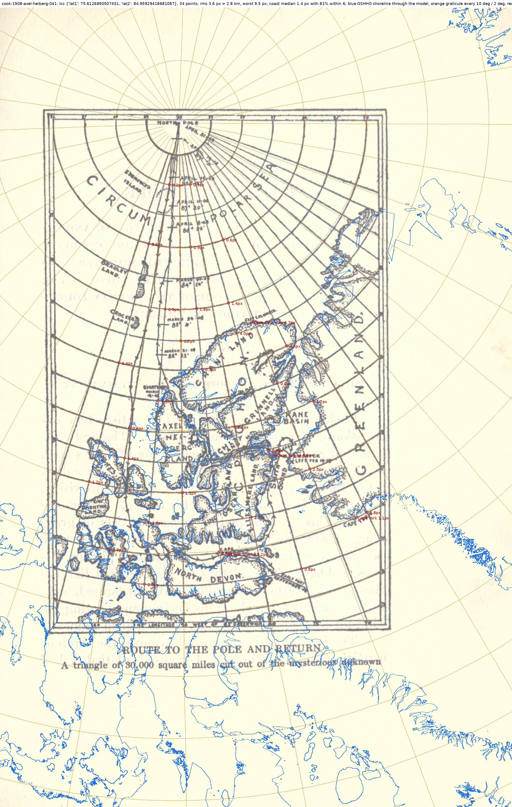
worst points: -13.6 65.15 176.1 px; 38.0 65.5 113.2 px; -23.1 66.45 91.8 px
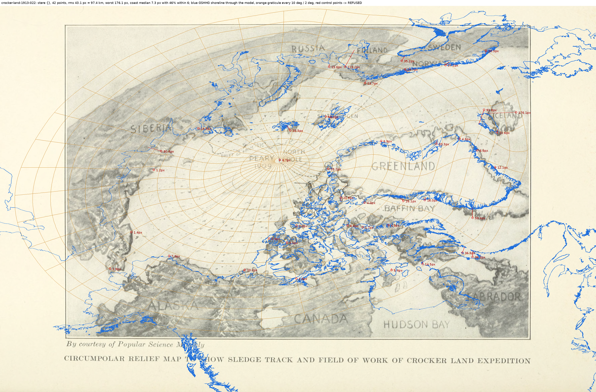
worst points: -70 76 16.8 px; -68.8 76.53 15.6 px; Cape Thomas Hubbard 10.4 px
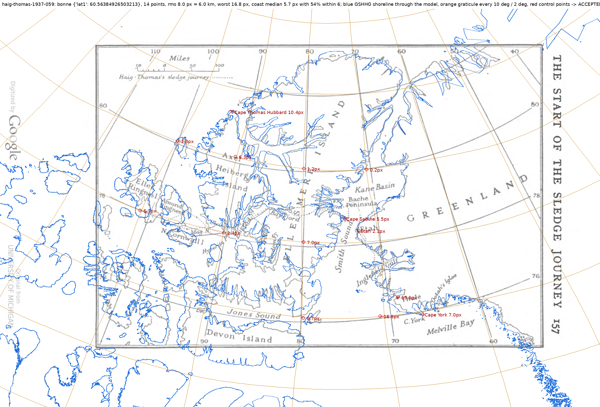
worst points: -71 78 2.1 px; -66 80 1.4 px; -71 81 1.3 px
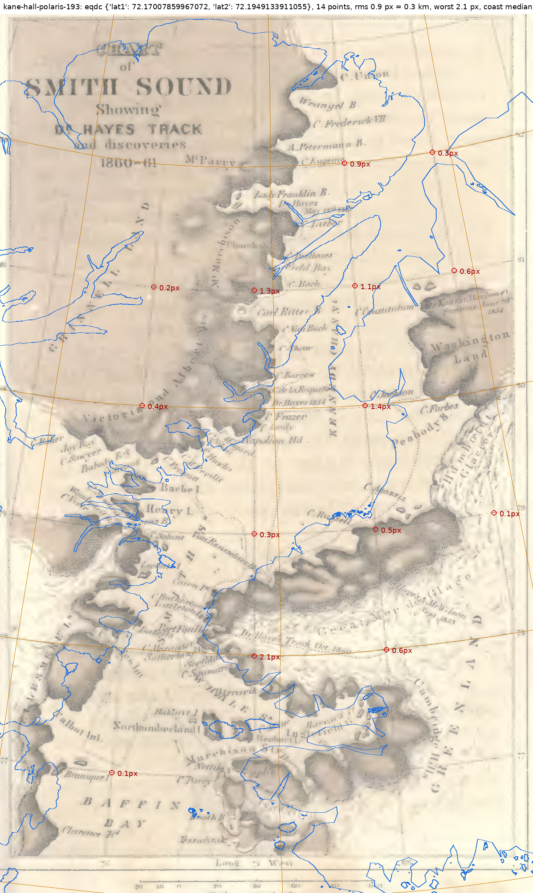
worst points: Cape Thomas Hubbard 7.8 px; Depot Point 5.5 px; Hyperite Point 4.2 px
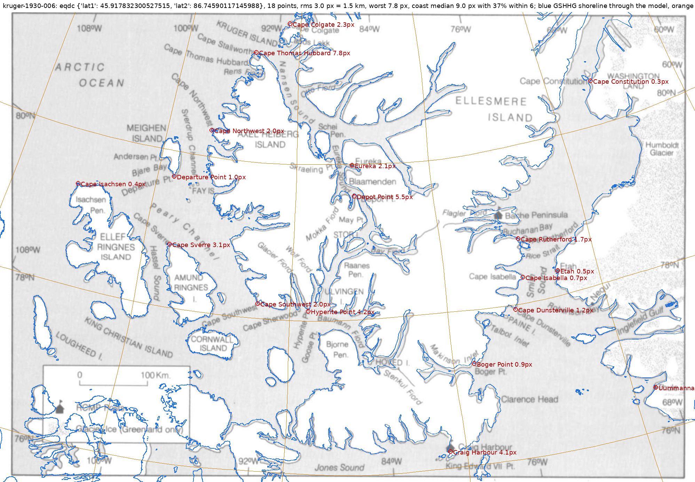
worst points: -45 83.5 4.1 px; -45 83.4167 2.0 px; -45 83.5833 1.9 px
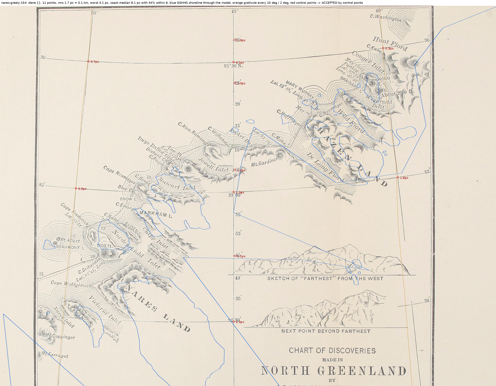
worst points: -70 77 2.6 px; -60 82 2.0 px; -75 79 1.8 px
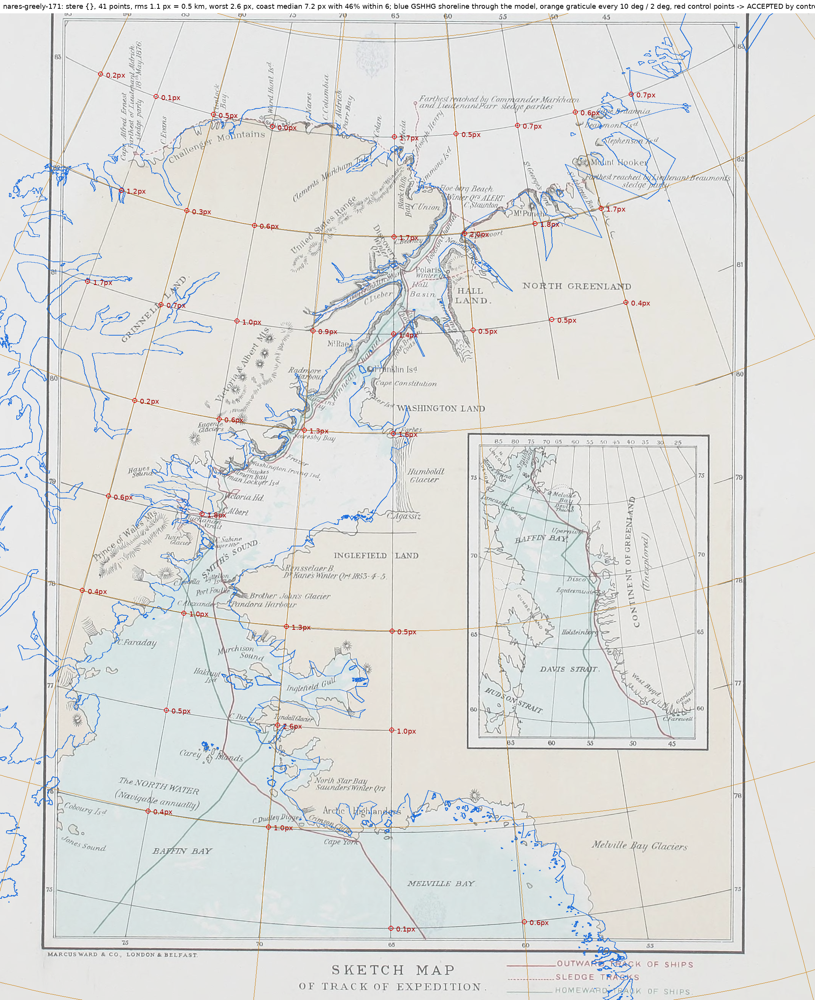
worst points: Etah 3.0 px; -80 80 2.9 px; -70 80 2.6 px
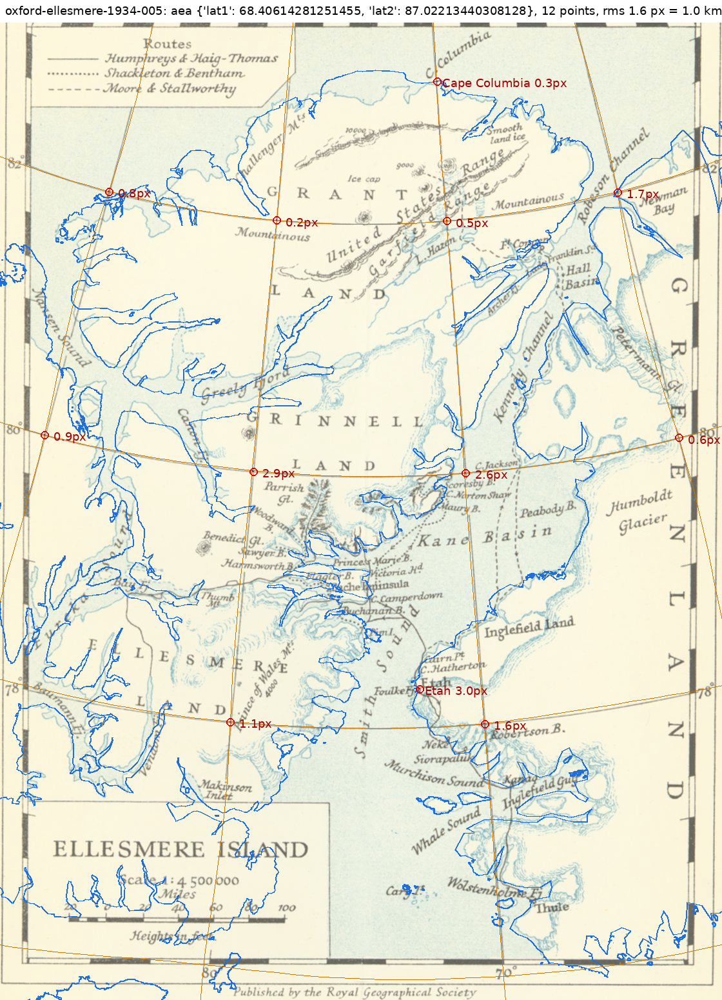
worst points: -76.35 79.07 17.2 px; Cape Stallworthy 11.4 px; Cape Alexander 9.6 px
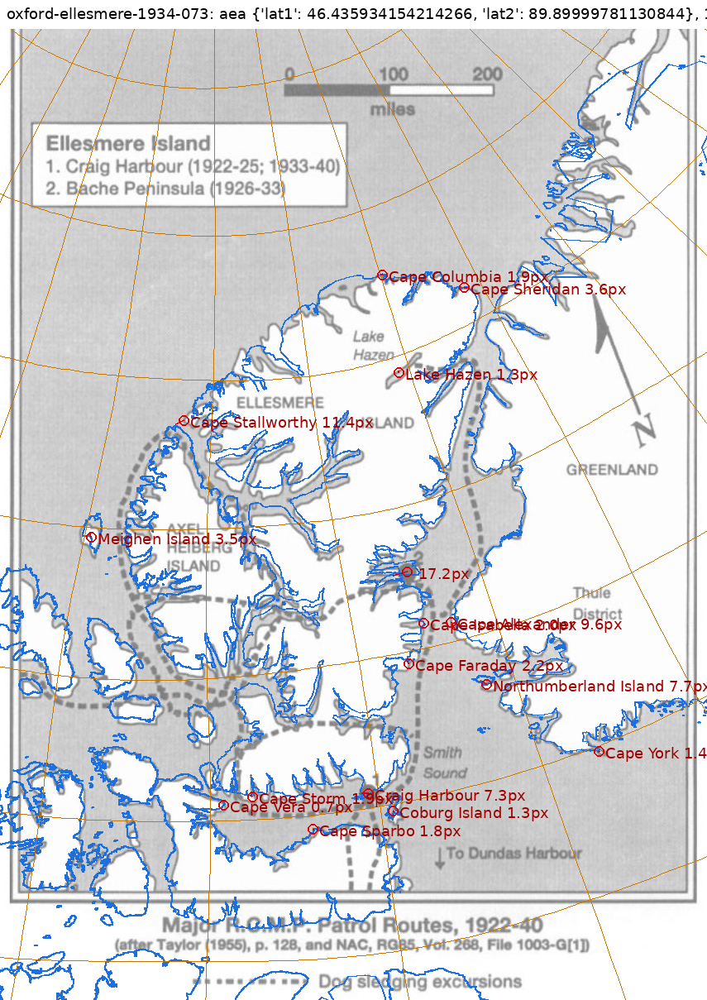
worst points: -80 78.333333 0.4 px; -84 78.5 0.4 px; -78 78.833333 0.3 px
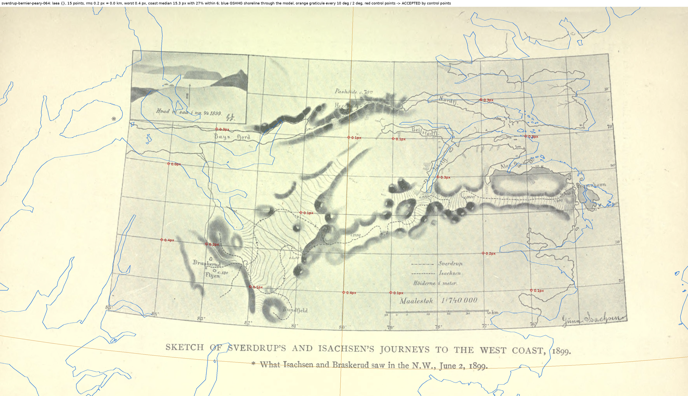